| 断罪のキスと祓魔師の祈り (一迅社文庫アイリス) | |
| 宮瀬 ユウ | |
| (2011) | |
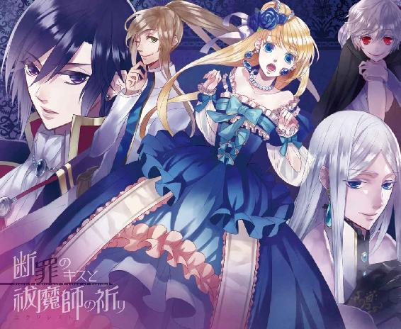
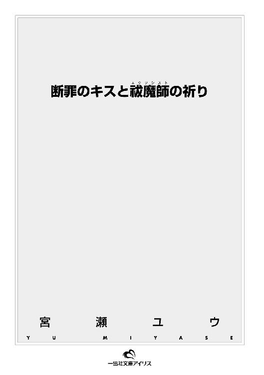
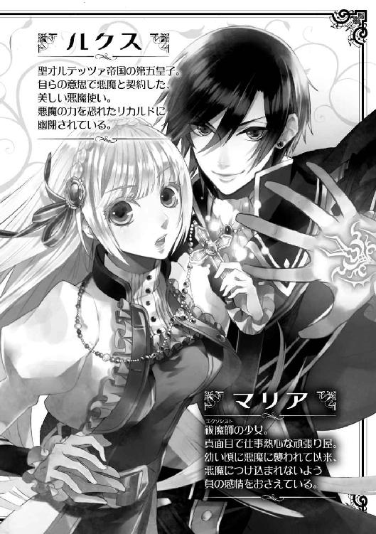
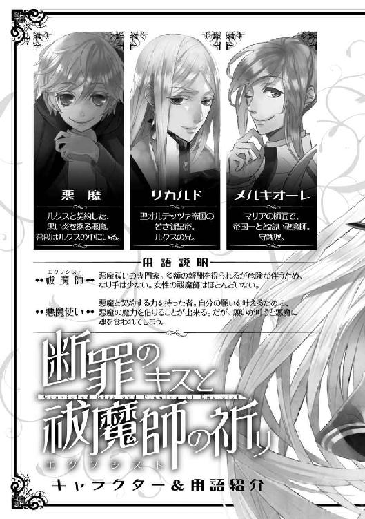
イラストレーション ◆ 蒼井モモ
断罪のキスと祓魔師の祈り
聖典を読み上げる声が、髪に、耳に、皮膚に刺さる。
響き渡るそれは、静謐な空気とともに高い天井を舞い、何度も何度も、雨の雫のように降りかかる。
唱えられる文句の一字一句が、耳のそばで鳴らされる鐘の音のように耳障りであることを自覚し、ルクス――聖オルテッツァ帝国・暫定第五皇子こと、セヴェリオ・ルクス・ジュスティーニは、頭痛に耐えきれず目を閉じた。
それと同時に、神聖であるはずの大聖堂の空気が、聖典の文句が、自分にとって不快なものに変化したのだという事実に気づく。
身も心も、変わってしまった。
変えてしまった。――自らの意志で。
「それでは、リカルド・マルク・ジュスティーニ新皇帝陛下は、前へ」
赤いローブをまとった枢機卿が、長兄の名を呼んだ。ルクスは薄く目を開ける。瞼がやけに重かった。
親しく言葉を交わすこともない、まったく似てもいない兄が枢機卿の前に跪いた。
毛皮で縁取られた厚いマントを羽織ったリカルドの頭に、月桂冠が載せられる。
立ち並んだ聖人たちの彫刻の前で、長い銀髪に載せられたそれは、それなりに神々しく映った。彫刻のさらに上、天井近くに設置されたステンドグラスからはやわらかい陽射しが降り注ぎ、戴冠式を荘厳に演出しているともいえる。
緊張した面持ちのリカルドが顔を上げ、身の潔白と神への誓いを口にする。
二十八歳の、若き新皇帝誕生の瞬間だった。
「証人は、祝福を」
枢機卿が声を大きくしてそう告げると、周囲の皇族たちが拍手を送り、教会の聖職者たちは祈りの言葉を捧げた。
こうして無事に、戴冠式は済んだ。――暫定的に。
現時点ではまだ、リカルドは正式に新皇帝という立場に立ったわけではない。今はかりそめの皇帝という身分だ。だから弟であるルクスもまだ、臣下に降ることもなく、第五皇子という立場から変わることはない。
枢機卿がようやく式の終わりを告げ、ルクスは安堵した。ここにいては聖なる気にあてられ、いずれ発狂しそうだ。
馬車を降り、宮殿ではなく、その端に設けられた塔へ向かおうとするのを、伝令係に目の前に跪かれ、止められた。
「ルクス皇子殿下、皇帝陛下がお呼びです」
「皇帝......そうか」
かりそめとはいえ、これからは皆が口にする〈皇帝〉とは亡き父ではなく兄のことなのだ。
ルクスは複雑な面持ちで寒気がするように腕をさすると、促されるままに歩き出した。
伝令係についていけば、そこは皇帝の許しなくしては踏み入れられない謁見の間で、そして想定していた通り、かなり待たされることとなった。
やがて、重たそうなマントを羽織り銀髪に月桂冠を載せたリカルドが現れた。仰々しく廷臣たちを引き連れた姿は、女性のように細い身体と繊細そうな顔つきの彼には、どこか不似合いだった。
「遅くなってすまない」
わずかに眉根を寄せたリカルドに謝罪され、ルクスは膝をつき、頭を垂れた。
「いえ。――新皇帝即位おめでとうございます、陛下」
「今までのように兄上と呼んでくれてかまわないよ、ルクス。顔を上げて」
促されるまま顔を上げると、困ったように笑うリカルドは「それに」と続ける。
「まだ正式な皇帝というわけではない。兄弟の中で一番上だから、暫定的に即いただけだよ」
本来なら皇帝が跡継ぎを指名するものなのだが、しかし父である前皇帝は、それをしないまま突然、命を落とした。
その場合は、皇位継承権のある者、前皇帝の側近たち、そして教会の権力者が首を揃えた会議でもって新皇帝を選出する。
しかし、教会の最高位にある教皇ミハエル二世は、直前に体調を崩し会議を欠席した。教皇不在のまま会議は進められ、選ばれたのがリカルドというわけだ。
そして、本来は教皇の役目である戴冠の儀式を、代理の枢機卿が取りはからった。
教皇が復帰し、リカルドの頭上に本物の冠を授ければ、それでリカルドは晴れて正式な新皇帝となる。
教皇を含め異論を唱える者がいない現状、それは決定事項なのだ。
「兄と弟の会話に、観衆はいらないね」
リカルドは思い立ったように廷臣たちを下がらせ、側近だけを脇に残した。豪奢にできた玉座に腰かけたリカルドが跪いたルクスにそんな言葉をかけるのはいかにもしらじらしく、ルクスは平淡な声で返した。
「兄上の即位は、皆が認めた結果です」
「......でも、君に認めてもらった気がしない」
悲しげに瞳を曇らせたリカルドにそう告げられ、ルクスは一度だけ首を振った。
「会議には出席できませんでしたが、署名はしました」
そんなことは、言われずともリカルドは承知のはずだ。
「......すまないね、ルクス。今はあまり君を外に出してやれなくて」
リカルドの目線の先は、窓越しに見える、離れの塔。
その塔に、ルクスは幽閉されている。
「しかし、その生活もすぐに終わる。終わらせてあげられる」
リカルドの声が、やや高くなった。笑顔が向けられる。
そして、言った。
「君の悪魔を祓える者を雇った」
メルキオーレ、とリカルドが呼ぶと、僧衣に似た、けれどそれより動きやすく改良された衣装をまとった人間が現れた。
「この度は任命いただき、光栄の極みです」
祓魔師の制服に身を包んだ男が、片膝をつき深く頭を下げている。ひとつにまとめた髪の先が、さらりと床に落ちた。
ルクスは彼を凝視した。メルキオーレと呼ばれた男がわずかに顔を上げると、薄く笑っている唇が見えた。
リカルドは、先ほどの戴冠式の時よりも晴れやかな顔でルクスに告げる。
「帝都一、優秀な祓魔師だというから連れてきた。これで君を解放してあげられる」
慈悲深そうな瞳で見つめられ、ルクスは唇を引き結ぶ。
無意識に左手に目をやった。包帯で巻かれた左のてのひらには、ある印が刻まれている。
ルクスが強く手を握り込むと、小さく疼いた。
そのまま何も答えずにいると、祓魔師メルキオーレが許可を得てもいないのに口を開いた。
「ルクス皇子殿下、先ほどは大聖堂という神聖な場所で、おつらかったのではありませんか？ 悪魔を宿した身では、さぞご不快だったことでしょう」
ルクスが横目で睨むと、さらにメルキオーレは喋り続けた。
「ご安心ください。明日から私の弟子を連れて参ります。悪魔祓いの儀式が執り行われるその日まで、彼女が殿下をお守り致します」
「彼女？」
女の祓魔師なんて、聞いたことがない。そう思って怪訝そうに見やると、メルキオーレはにたりと不気味に微笑んだ。
「優秀な弟子です。名を、マリアと申します」
――マリア。
ルクスは、その名を口の中でつぶやいた。
到着しました、と御者に告げられ馬車を降りたマリアは、思わず声を漏らした。
「......本当にここですか？」
「ええ、確かに」
御者はマリアの大きな荷物を石畳に降ろすと、仕事は済んだとばかりに、さっさと御者台に乗り込んでしまう。
小気味よい馬の足音とともに馬車が立ち去り、十七歳の少女は立ち尽くした。
目の前に立ちはだかるのは、マリアの身長の倍はありそうな鉄製の門。その両脇には、帯剣した甲冑姿の衛兵たち。マリアを迎えるわけでもなく、微動だにしない。
そこは誰でも知っている帝国の中枢部で、縁があるとは到底思えない場所だ。
「じゃあ、やっぱりこっち？」
賑やかな声に誘われ、長い金色の髪をおさえて振り向くと、そこには緑豊かな公園が視界いっぱいに広がっていた。
今日はこの帝都のあちらこちらで、祭りが開かれているはずだ。
なぜなら昨日、聖オルテッツァ帝国に新皇帝が誕生したから。
本来なら一週間はお祭り騒ぎが続いてもよさそうな吉事だが、諸事情により前皇帝の葬儀がまだ執り行われていないことから、喪に服す意味で、祭りは今日だけと定められているらしい。
通りを挟んで向こう側にある公園には、たくさんの屋台と、奇怪ないでたちをした道化師に群がる子どもたちの姿が見える。
楽しそうな声とはうらはらに、マリアの眉間にはしわが寄った。
人の集まる場所には邪念が生まれやすく、そのため、それを好物とするモノたちが寄ってくることが多々ある。
――悪魔。
その忌まわしきモノこそが、マリアの宿敵。
長い裾を翻して公園に足を踏み出そうとしたところで、馴染み深い声に呼び止められた。
「おっと、どこ行くの？」
「......師匠？」
薄藍の瞳を眇めて振り返ると、そこにはマリアが師匠と呼ぶ男が立っていた。
メルキオーレという名の、帝都で名の知れた祓魔師である。
漆黒の制服に身を包んだ彼は、今は門の向こう側にいた。
「ちょっ、師匠！ いったいどうやって忍び込んだのですか!?」
マリアが声を潜めて咎めると、メルキオーレは「あはっ」と笑った。
「嫌だなマリア、仕事だよ」
頭の高い位置でひとつにまとめた茶色の髪を揺らし、メルキオーレはおいでおいでとマリアを手招きした。ひょろりとした体躯と浮かべた薄笑いが不信感を煽る風貌ではあるが、マリアは彼ほど確かな腕を持った祓魔師を他に知らない。
......とはいえ。
「師匠、何をどうやってお間違えになったのかわかりませんが。そちらは――」
「知ってるよ、宮殿だよ。新皇帝が即位されたばかりで、ばたばたしてるオルテッツァの宮殿でしょう」
いいから早くと促され、マリアは一歩進んだ。と、目の前に衛兵が割って入ってきた。
「身分証を」
「あ、はい」
マリアは衣服の下に手を突っ込み、胸元からしゃらんと音を鳴らしてそれを取り出す。銀細工の鎖でつながれた、ロザリオだ。
「帝国に認定されている、正式な祓魔師です」
そして、と、十字架を裏返す。
「マリアと申します」
そこには確かに名が彫られていた。
身にまとうのは、聖職者のローブを簡素化し、動きやすいよう身体の線に合わせた祓魔服。その職に誇りを持つ彼女は、毅然とした態度で待った。
時間をかけてじっくりロザリオを眺めていた衛兵が、ひとつうなずく。
「いいだろう。入れ」
がらがらと大仰な音を立てて、門が開く。
その先には長い石畳が延び、間に立派な噴水が見え、そしてその先には石造りの宮殿がそびえていた。
両端に高い塔を携えたその宮殿を目の当たりにし、マリアは思わずロザリオを握りしめた。
造りは古いが、荘厳で美しい宮殿。
圧倒される前に、マリアは眉根を寄せて意識を集中させた。
息を吸い込み、はっきりと宣言する。
「――います」
確かに、ここに。
そう感じ取った瞬間から、マリアの表情が険しく歪んだ。
忌むべき存在が、ここにいる。
「そうだよ、マリア」
メルキオーレが、マリアに向かってにやりと笑んだ。そして、告げる。
「ここが、僕たちの仕事場だ」
＊
祓魔師が職業として成立したのは、前皇帝の時代。
もとは聖職者の仕事の一環であった悪魔祓いだが、聖職者にも得手不得手があること、そして完全な善意で行うには聖職者に危険が伴いすぎること......といったことが理由で、その仕事は教会から切り離されることが取り決められた。
新たに生まれた悪魔祓いの専門家・祓魔師は、商売として悪魔祓いを行う。依頼を受け、報酬を受け取る。
聖職者としての資格はいらないが、その分、確かな素質と技術が求められる。
腕がなければ悪魔に負けるし、負ければ命を落とすこともある。
腕があっても、悪魔の好む負の感情――憎悪、嫉妬、恐怖、強欲などの強い思いがあれば、即座につけ込まれ、逆に悪魔に憑かれてしまうこともある。
それ故、祓魔師は尊ばれる職業であり、同時に多額の報酬を得られる職業であるが、なり手は少ないのが現状だ。
「ですが、宮殿でしたら悪魔祓いができる聖職者がいらっしゃってもおかしくないのでは？」
マリアが囁きかけると、前を歩くメルキオーレは首を振って答えた。
「以前はいたけど逃げ出した、という噂だよ」
マリアは目を見開いた。高位の聖職者も逃げ出すほどの強大な力を持った悪魔が宮殿に潜んでいるというのだろうか。
今、二人が向かっているのは、どうやら宮殿脇の塔の上層のようだ。螺旋状になった幅の狭い石の階段を、ひたすら上らされる。
「今回の報酬は、かなりの高額だよ。しかもなんと、日給制」
メルキオーレの頬が緩んだのが背後からでもわかり、うんざりした。
「まさか、手こずってるふりをして日銭を稼ごうなんて思ってないですよね？」
「ははっ。さすがは弟子歴十年、察しがいいねぇ」
「師匠、笑い事じゃありません！ 強欲は悪魔の好物です。守銭奴は悪魔に狙われます」
「大丈夫だよ。僕が悪魔に負けると思ってるの？」
振り返ったメルキオーレの口元は、いたって余裕そうに緩んでいる。この余裕をどう見習えばいいのか......マリアが思い悩んでいると、ふいにメルキオーレが足を止めた。
「ここだよ」
階段は、そこで終わっていた。最上階に部屋が設えられているのだ。
昔から、塔は罪を犯した皇族を閉じ込める牢獄として使われてきた。――マリアは緊張した面持ちで、前を見据える。
扉は銀の鎖で封じられ、十字架が掲げられていた。足下には、聖水の入った盆。悪魔封じの応急処置といったところだ。
「扉の結界は、あとで僕が強めておく予定だよ」
メルキオーレの言葉に、マリアはうなずいた。この簡易処置が祓魔師の仕事でないことは、一目瞭然だった。これだけでは、強力な悪魔を封じることはできない。
「この中に、悪魔が閉じ込められているのですか？」
「正しくは、人間が」
「え？」
「失礼しますよ、皇子」
コンコン、と軽くノックしただけで、メルキオーレは扉を開けてしまう。
人間がいると聞いて固まったままのマリアは、扉の向こうにいる青年を見て息を呑んだ。
二十歳くらいに見えるその青年は、一人掛けの椅子に腰かけていた。
薄暗い部屋で。――たったひとりで。
見えているのは、横顔だった。
足を組み、テーブルに頬杖をついた格好で、わずかに目を伏せている。
その姿がやけに美しく見えて、マリアは戸惑った。忌むべき悪魔を想定して身構えていたのに、ほんの一瞬、警戒を解いてしまった。
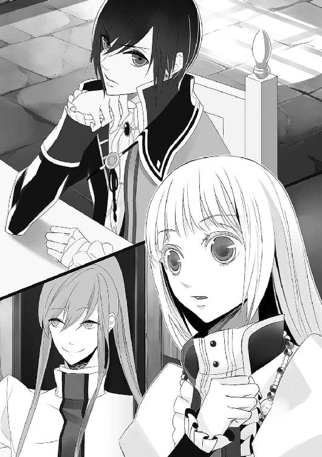
艶やかな黒髪に、しなやかそうな腕に、憂いのある横顔に。――吸い寄せられるように、見入ってしまった。
閉じられていた青年の目が、薄く開く。
彼は、深い紫色の瞳だけで、マリアを見た。
（目が、合った――）
マリアが緊張したその瞬間、その青年が薄く唇を開いた。
「来たな、エクソシスト」
穢らわしいものを見るような目で、吐き捨てるように。
「な......っ」
一瞬にして警戒心を取り戻し、マリアは気を引きしめた。
ぼうっと見とれている場合ではない。マリアは祓魔師の弟子として、ここへ来たのだ。
「弟子のマリアでございます。本日より、殿下のお世話をさせていただきます」
メルキオーレに背中を押され、マリアは「えっ」と声を漏らした。
「師匠!?」
世話って、なんですか。目の前のこの人は、皇子なんですか。
混乱するマリアの視線の先で、皇子は顔をこちらに向けた。よく見れば、目の下には濃い隈があり、顔色は非常に悪い。マリアが普通の娘ならば、彼を病人だと思ったことだろう。
皇子は不健康そうな顔色からは意外に思うほど、優雅な仕草で立ち上がった。左肩にかけたマントを煩わしそうに背に払い、マリアの前に立ちはだかる。
「......女の祓魔師と聞いて、どんなごつい女が来るのかと思ったら、案外小さいな」
背が低いのは悪魔祓いに支障をきたしません。
そう声を発していいのかわからずじっと見つめ返していると、ふいに祓魔服の上から両腕をつかまれた。
「華奢だけど、よく見れば身体の線はそれなりに女らしい。なるほど、これなら俺のそばに置くのにうってつけだ」
そんな失礼なことを言われ、マリアの頬がカッと熱くなった。
「私は祓魔師として参りました。そのようなご期待には沿いかねます」
無意識のうちに声が大きくなっていたらしい。皇子が冷ややかに笑った。
「怒ったんだ？ 祓魔師殿の目には、俺は穢らわしく映るらしい」
からかうように覗き込まれ、マリアははっとした。
怒りや憎しみは、悪魔の好む負の感情。そんな感情、抱いてはいけない。
「私は怒りません。悪魔は別として、人を穢らわしく思うことなどございません」
マリアがきびきびと答えると、皇子は鼻で笑って手を離した。
「模範解答だな。安心しろ、女としてのおまえに興味があるわけじゃない。利用価値があるかどうかの話だ」
軽くあしらわれ、マリアはまた頬が熱くなるのを感じたが、ぎゅっとロザリオを握って自分を落ち着かせた。興味はないと言いつつマリアの身体をじろじろと眺めたのは、なんだったのだ。そもそも皇子というのが事実なら、なぜこんなところにいるのだ。ひたすら不審がるマリアに、メルキオーレが告げた。
「こちらが聖オルテッツァ帝国暫定第五皇子、セヴェリオ・ルクス・ジュスティーニ皇子殿下だよ」
紹介されたので、とりあえずマリアは膝を折って深く礼をした。頭上から紫色の冷たい視線を感じ、唇を引き結ぶ。
「皇子といっても、その身分は暫定的なもの。リカルド新皇帝陛下が現在療養中の教皇ミハエル二世に本物の冠を載せてもらえれば晴れて正式な皇帝となり、その弟であるセヴェリオ皇子はその臣下に降る運命にある。で、いいんですよね、殿下？」
「その名はいい。ルクスと呼べ」
皇子は否定も肯定もせず、ただ煩わしそうに眉をひそめた。
「そこで師匠からの問題だよ、マリア」
急に話を振られ、マリアはルクスからメルキオーレに視線を移した。師匠が躊躇いなくルクスを指差すのに、ぎょっとさせられながら。
「ルクス皇子殿下の現状を、簡潔に言って聞かせなさい」
短い問題文を提示され、マリアは再びルクスへと視線を戻した。
不服そうに眇められた瞳が、マリアを見つめ返してくる。
短い髪とほどよく筋肉のついた細身の身体、白いシャツに重ねた漆黒の衣装、そして腰に下げたサーベルは、マリアが皇族といって想像する派手なものとはほど遠く、簡素な印象だった。しかし闇色の髪は美しく、端正な顔立ちにも、細い腰まわりにも騎士の武骨さはなく、確かな高貴さを漂わせている。
彼は、本物の皇子だ。
しかし、それだけではない。
マリアはわずかに声を落とし、真剣な眼差しで告げた。
「生気の薄い顔色、光を失った瞳......ルクス皇子殿下は、かなり衰弱していらっしゃいます」
「うんうん。それで？」
メルキオーレはうなずき、ルクスはといえば表情のひとつも動かさなかった。
「部屋の空気の不快さ、濃密なその禍々しい気配......間違いありません。この部屋には悪魔がいます」
マリアには感じる。目の前のルクスに潜む、邪悪な影を。
そして、と、マリアは続けた。
「左のてのひらに巻かれた包帯......そちらから、悪魔の気配がします。そこにあるべくは、おそらくは闇の紋章の刻印。ならば、ルクス皇子殿下は〈悪魔使い〉です。殿下は自ら悪魔を召喚して契約し、その忌まわしき力を己のものとされました。普通の人間が悪魔に憑かれることとは事情がまったく異なります」
断言すると、マリアは息を吐き出した。無意識に力が入ってしまったようで、最後は声が少し震えた。冷静になろうと、胸元のロザリオを握りしめる。悪魔を忌む気持ちも、度を過ぎればただの憎しみへと変貌してしまう。負の感情は、悪魔の好物。狙われやすくなる。
深い呼吸をくり返すマリアを見て、ルクスはわずかに顔を歪めた。
「――おまえは、悪魔が嫌いか？」
「私は祓魔師です」
愚問だ、と、暗に告げる。
「俺を軽蔑する目だな」
ルクスに瞳を覗き込まれ、マリアは思わず一歩退いた。
「そのようなこと――」
「もっと睨めばいい。祓魔師だって人間だ。人を軽蔑し、憎むこともあるだろう」
挑発するように迫るルクスが、マリアの頬に触れたその瞬間――。
「......っ！」
火花が散った。ように、見えた。
「殿下！」
とっさに動いたのは、メルキオーレだった。
ルクスからマリアを引き離し、マリアを押さえ込んだまま首だけ振り向かせる。
「殿下、お怪我は？」
「問題ない、軽い火傷だ。......なんだったんだ、今のは......？」
マリアからは見えないが、ルクスは怒りの表情を浮かべているに違いない。
「あの、師匠......」
何が起こったのかと戸惑うマリアに、メルキオーレが小さく告げる。
「皇子の中の悪魔が抵抗したんだろうね。黒い炎を操る悪魔だと聞いたよ」
マリアは手で頬に触れてみた。なんともない。痛みもない。ただ、弾くような衝撃を感じただけだった。
「殿下の治療を――」
マリアがメルキオーレを押しのけて見やると、ルクスは自分で指先に包帯を巻いているところだった。右手と歯を使って、器用に巻き付けている。それを見て、普段から刻印を隠す包帯も自分で巻いているのだろうと思った。
「師匠」
マリアはメルキオーレを振り仰いだ。
「師匠が受けられた依頼というのは、ルクス皇子殿下が契約された悪魔を、魔界に還すことですか」
人間に憑いた悪魔を祓うのと、悪魔使いが契約した悪魔を祓うのとでは、わけが違う。
なぜなら、人間である悪魔使いには人としての意思があるからだ。
それに加え、自ら悪魔と契約した意志がある。
「そうだよ。リカルド新皇帝陛下からの依頼だ」
ルクス本人からの依頼ではない。
――ということは。
マリアは、ルクスを見た。
その意を察したのか、ルクスは包帯の端をくわえたまま、口元に笑みを刻んだ。
ルクスが、自ら望んで悪魔と契約したのなら。
メルキオーレとマリアが、その悪魔を祓うためにここへ呼ばれたのならば。
それはつまり、自分たちとルクスは、対立する関係にある......ということだ。
（――来たな、エクソシスト）
憂いを帯びた紫色の瞳は、再びマリアにそう語っていた。
＊
悪魔使いとは、呪術を施して悪魔を魔界から召喚し、契約する力を持った者のことである。
その力は持って生まれるものではなく、何らかの形で悪魔と関わった者が、悪魔から授けられた力だといわれている。左のてのひらにある薄い痣が、悪魔使いの証なのだと。
悪魔使いは、悪魔を召喚し、〈願い〉を伝えることでその悪魔と契約することができる。契約をしたその瞬間、薄かった痣ははっきりとした闇の紋章の刻印へと形を変えるのだという。
悪魔は魔力を貸し与えて願いを叶え、その代償として魂を食らう――つまり、命を奪う。
魔力を手に入れた人間は、悪魔によって日々増長する負の感情に支配され続けることになる。弱い者は自我を崩壊され、願いを叶える前に魂ごと食い尽くされてしまう。
悪魔使いが自我を保つのは容易なことではなく、心身ともに苦痛を強いられるものなのだ。
その間に祓魔師に悪魔を剥がしてもらえばその苦しみから逃れられるが、一度悪魔と契約をした悪魔使いは、悪魔使いとしての資格を失い、さらにその後しばらくは悪魔に狙われやすくなるという危険を負うことになる。さらには、一度は悪魔と契約した者として、社会的に蔑みの目で見られるようになるという点も無視できない。
ルクスが契約した悪魔は、強い魔力を備えているという。どんな祓魔師でも、周到に準備をした上で儀式に臨まないと、身に危険が迫るほどに。
そこまでの悪魔を祓うことは、祓魔師として未熟なマリアにはできない。最終的にルクスから悪魔を剥がし、魔界へと還すのはメルキオーレの仕事となる。
そこでマリアに課せられたのは、メルキオーレが悪魔祓いをするその日まで、ルクス自身を清めて苦痛から解放し、魔力を封じ、少しずつルクスから悪魔を引き剥がすこと。
日銭を稼ぎたいとふざけたように言うメルキオーレのその話がどこまで真実なのかマリアには判断できないが、弟子として指示された仕事をする以外道はない。
少なくとも、浄化の儀式が悪魔祓いへの手助けとなることだけは確かなのだからと、マリアは自分を納得させた。
マリアは早速、そのための準備を始めた。
ルクスの部屋をぐるりと見渡し、首を傾げる。
「聖ルクレツィア像がどこにもありません」
「もとは牢獄だからな」
ルクスにそっけなく返され、マリアは眉をひそめた。
「......聖女ルクレツィア様と、お名前は似ていらっしゃるのに」
聖オルテッツァ帝国では、聖ルクレツィア像を飾るのが信仰の証なのだが、この皇子には信心深さのかけらもないらしい。
そもそもこの部屋には、生活するための必要最低限のものしか揃っていないようだ。
新皇帝であるリカルドは、ルクスが不慮の事故で悪魔と契約してしまったと信じている。しかし悪魔の力をひどく恐れる新皇帝は、ルクスを塔に閉じ込めた。それが兄としてあまりにも不憫だから早く悪魔を祓うようにと、メルキオーレに懇願したらしい。
（不慮の事故......ね）
実際はどうだったのか、マリアには知る術がない。
悪魔使いは自分の意志で悪魔を召喚し契約するのだし、むしろ事故で契約してしまったという方が不自然だ。
どちらにせよ、メルキオーレはいずれ悪魔を祓う。マリアはその手助けをする。
それだけだ。
マリアは自分の荷物から小さな聖女像を取り出し、棚の上に置いた。その隣に聖水盆を置き、聖水を湛えさせる。宮殿から北へ少し行ったところにある大聖堂の神聖さには遠く及ばないが、監禁されたルクスが塔から出られないのであれば、そこへ連れて行くことはできない。それでも、リカルド周辺の限られた人間以外にはルクスが悪魔と契約したことを知らせていないらしく、式典など公的な場には顔を出すことが許されているのだとは聞いている。
準備を終え、マリアはルクスに向き直った。
「儀式の前に、殿下にお聞きしたいことがあります」
「ルクスでいい」
ルクスは足を組んで椅子に座ったまま、マリアを見上げる。なんの感情も読み取れない目だ。
「......ルクス様は、悪魔祓いを望まれますか？」
問われたルクスは、一瞬だけ視線を彷徨わせた。迷っているのかと思えば、彼はぴたりとマリアの瞳を捕らえた。
「さあ、どうかな」
答える気はないらしい。
「悪魔と契約されたのは、いつですか」
「五日前だったかな」
「現皇帝陛下がお考えのように、事故によるものですか？」
「リカルドが本当にそう信じてるとは思えないな」
ルクスは口元を歪めた。これにも答える気はなさそうだ。
「悪魔との契約に持ち出した〈願い〉とは、どのようなものですか？」
契約は、悪魔使いの願いを叶えるために悪魔が魔力を与え、それと引き替えに魂を食らうのだ。たとえ事故だったとしても、契約が成り立ったのだとしたら、何かしらの〈願い〉は伝えているはず。
「教える義理はない」
しかしそこだけきっぱりと、ルクスは言った。願いを叶えるまでに邪魔されたくないということか。祓魔師に対する悪魔使いの態度としては正しいであろう返事を聞き、マリアはむっとするのを顔に出さないように、あくまで無表情を装ってルクスと向き合った。
「......では、最後の質問です。現皇帝陛下がルクス様の悪魔祓いを望まれることに、抵抗はございませんか」
事故だったとして、リカルドに助けてほしいと思っているのか。契約の意志があったとして、その〈願い〉をあきらめたのか。それを確認したかった。
ルクスはしばらく思案するような様子を見せたが、やがてゆっくりと顔を上げた。
「俺が何を考えていようと、おまえには関係ない。抵抗する気があろうとなかろうと、力のないおまえには、せいぜい俺の魔力を封じることしかできないんだろう？」
「......そうですね」
マリアは、今度はあからさまに苛立ちを顔に出してしまった。それを見て、ルクスは満足そうに笑った。
（いけない......！）
マリアは慌てて無表情を繕った。ルクスは「祓魔師は怒らない」と宣言したマリアを挑発しているのだ。のせられてはいけない。
今度は無理に表情を消そうとしているマリアがおかしいのか、ルクスは実に楽しそうに声を上げて笑った。
......なんて人だろう。
マリアは困惑した。
屈託のない笑顔は確かに素敵で眩しいかもしれないが、悔しさが先に立ち、マリアには余計に腹立たしいだけだった。
怒りを静めるために、ルクスに背を向ける。
「清めます」
静かに宣言し、首からはずしたロザリオを両手で握りしめた。
「ひとりでできるのか？」
大仕事に備えて、と言って出て行ってしまったため、師匠のメルキオーレの姿はすでにない。
「師匠の弟子ではありますが、私は帝国の認定を受けた祓魔師です」
ルクスの声にからかいの色が含まれているのを感じ、マリアは思わず反抗的に返してしまった。
もっとも、祈りによる清めの儀式は、祓魔師のそれよりも、職業として分かれる以前の、聖職者としての素質が求められる。祓魔師が清廉潔白でいなければならないのは、何も悪魔に狙われないようにするためだけではないのだ。
「――主よ、聖ルクレツィアよ、我を愛してくださいますか」
祈りの形に指を組み合わせ、ロザリオを強く胸に押しつける。そのまま両膝を床に落とし、頭を垂れる。
「尊き愛で、我をお導きください。清き愛で、我を正してください」
瞼の裏に、白い光が灯る。
薄く目を開けると、部屋には神々しい白い光が満ちていた。それはマリアの手元からあふれ出たもので、聖なる気と呼ばれるもの。
――祈りは、祝福の光は、目に見えるものなのだ。
部屋を満たしていた、胸を圧迫するような息苦しさが消えていく。不快な空気が、清純な風に押し流されていく。
「............っ」
どさりと、背後で何かが落ちるような音がした。マリアは物音がした方を振り返り、厳かに言い放つ。
「殿下、耐えてください」
「やめろ......っ」
ルクスが片手で腹のあたりを、もう片方の手で口元を押さえ、膝をついていた。マリアを激しく睨みつけるが、彼はそれ以上一歩たりともマリアに近づけないはずだ。気づかれないように、聖水で結界を張っておいたのだ。
「おまえ、何を......っ、マリア！」
恨みのこもった瞳に、赤い色がちらついている。あれは、悪魔の色だ。悪魔が苦しみ、もがいている。
「その苦しみから解放します」
マリアは立ち上がり、膝をついたルクスの前に立ちはだかる。
「手を」
マリアは自分の左手を差し出した。ルクスに触れると彼に火傷を負わせてしまうため、今は絹の手袋をはめている。ルクスの表情に不安がよぎったのを、マリアは見逃さなかった。そっと、うなずいてみせる。
「大丈夫です。ルクス様。私を信じてください」
「信じる、だと......？」
「私は祓魔師ですが、もとは聖職者の娘です。たとえ悪魔使いであっても、あなたを等しく愛します」
その言葉に、ルクスは思いきり顔をしかめた。ばからしい。そう言いたげな表情だ。それでもルクスは、包帯の巻かれた左手で乱暴にマリアの手を取った。
「私の指に、口づけを」
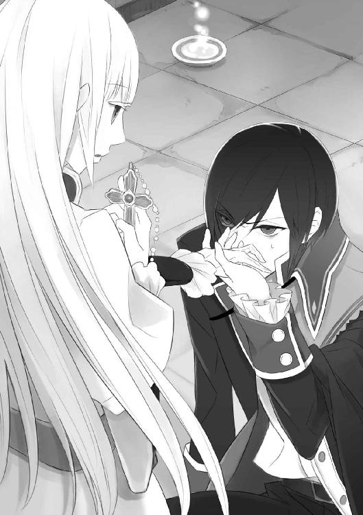
そう求めると、ルクスは力なく笑った。
「俺に、その屈辱的な行為をさせるか......」
「今は、神の手だと思ってください」
「最悪だ」
ルクスは額に汗を浮かべながらも、きつくつかんだマリアの手を引き寄せ、押しつけるように口づけた。その目は、マリアを激しく睨みつけながら。
屈辱的な行為をさせられながらも、ルクスがほとんど抵抗なく従ったことを、マリアは少し意外に思った。それほど苦しい思いをしているのか。それとも、本当は悪魔祓い自体に抵抗がないのか......。その疑問を胸にしまい込み、マリアは祈りに意識を集中させた。
暖かい光がマリアの手元に灯り、弾けるように広がってルクスを包み込んだ。
「――主よ、聖ルクレツィアよ、愛は罪をお赦しになりますか......？」
マリアがそう問いかけると同時に、ルクスは意識を失い、その場に倒れ込んだ。
＊
目を覚ましたルクスが不機嫌だったことは、語るまでもない。
「冗談じゃない。あんなこと毎晩できるか」
「あれほど苦しまれたのは、それだけ悪魔の侵食が進んでいたからです。毎日くり返せば、少しずつ楽になります」
「そういうことじゃない。俺は誰の前にも膝をつく気はない」
確かに、皇子という身分で一祓魔師の前に跪くのは、屈辱的だろう。
けれどマリアにとっては、あれは儀式の一環でしかない。
「儀式を施すのは師匠からの指示で、その師匠をお雇いになられているのは、皇帝陛下です」
暗にルクスの命は聞けないと告げると、ルクスはうんざりしたように首を振った。
「もういい。久々に腹が減った」
脈絡なくそう言うと、ルクスはがんがん、と壁を叩いた。そして、男の名を呼ぶ。
「ジェラルド」
マリアが人の気配を察知すると同時に、ルクスにあごで促される。
扉を開けると、騎士姿の男が立っていた。見たところルクスと同じ年頃――二十歳すぎだろう。
「監禁された俺に、リカルドが与えた唯一の従者だ」
忌々しく告げるルクスを気にするそぶりも見せず、ジェラルドはテーブルの上に食事の用意を始める。そして丁寧にナイフを扱いながら、すべての皿から一口ずつ口に運んだ。
「問題ありません」
「よし、下がれ」
言われるままに部屋を出て行くジェラルドを見送り、マリアはもくもくと食事を始めたルクスを眺めた。
マリアにも同じ食事が用意されていたので、あとで食べようかと見つめていると、ぐぅ、とお腹が鳴ってしまった。
「物欲しそうな顔をして見るくらいなら、さっさと食え」
「ここで、ですか？」
「嫌ならいい。ひとりの食事は慣れてる」
ぶっきらぼうに言われ、マリアは並べられた皿の前に腰を下ろした。ルクスもひとりきりの食事はつまらないのかもしれない。なんとなく、そう思って。
「......いただきます」
「質素な食事だが、祓魔師だから贅沢は望まないんだろう？」
「もちろんです」
マリアは背筋を伸ばして答えた。
硬そうなパンと、湯気の立たないスープ、そして小さな豚肉の欠片。
聖職者ではない祓魔師には、食べ物の制限はない。ただし、贅沢を望むということは欲が深いということ。悪魔に狙われやすくなるため、マリアは食べるものを選ばない。
ありがたくいただくことに決め、皇族の食事にしては確かに質素な食事に手をつけた。マリアにはじゅうぶんでも、これがルクス用と考えると気の毒だ。これではまるで、罪人の食事だ。
「ルクス様は、いつもおひとりなのですね」
「忌まわしき悪魔使いとの食事なんて、誰も楽しくないだろう」
ルクスはまた、憎まれ口をたたく。
たったひとりの従者を、あんなふうに追い出すようにして。
毒味をさせなければ、まともに食事もしないで。
彼は、誰も信用していないのだろうか。
「主よ、尊き命の源を与えてくださり、ありがとうございます」
食後の祈りは、祓魔師としてではなく、聖職者だった父親に教え込まれたものだ。
祈りを終えたマリアがそっと立ち上がったところで、すぐに声がかかった。
「どこへ行く？」
すでに食事を終え、考え込むように頬杖をついていたルクスに問われ、マリアは振り返る。
「家です」
「親元か？」
「いいえ。師匠の屋敷でお世話になっているので」
帝都の外れにある、そこそこ大きな屋敷だ。家主が守銭奴なだけあり、華美な装飾は一切ないけれど。
「ふぅん......。そういえばおまえ、父親が聖職者だと言ったな」
「正しくは、聖職者でした。辞職し、母の実家で葡萄酒造りをしています」
聖職者に結婚は許されず、だからそれは、母を愛した父の選んだ道なのだ。
より危険な祓魔師の道を選んだマリアを、両親は心配していることだろう。それを思うと胸が痛いが、これはマリアが出した決断だ。
「儀式は毎日必要だと言ったのは、おまえだったな？」
「ですから、毎日参ります」
「聞いてないのか？ メルキオーレたっての希望で、彼は俺の家庭教師という名目でここに住み込むという話だったが。なんでも儀式は日が落ちてから行う方が効果的だからという理由らしいが、違うのか？」
違わないが、聞いていない。......けれど、言われてみればそう受け取れるようなことを聞いた気もする。メルキオーレには、儀式に必要な道具一式と、祓魔師の制服の替えを持ってくるように言われたのだ。生活道具と他の衣装は、用意があるから、と。
深く考えずに指示通りのこのこやってきたが、そういうことだったのか。
「......でしたら、私はその家庭教師の弟子という名目で居座ればよろしいでしょうか」
「不自然だな」
却下して、ルクスは立ち上がった。
儀式を終え、ひと眠りして食事を済ませたルクスは、今や別人のように生き生きしていた。
目の下の隈もなくなり、血色の良い肌は健康的で、とても悪魔と契約した人間には見えない。そのせいか、最初の印象に精悍さが加わり、自信に満ちた皇子の貫禄が窺えた。
「この際、メルキオーレとの関係はどうでもいい」
師匠の存在をばっさりと切り、ルクスはマリアに手をのばした。頬に触れるか触れないかのところで動きを止め、じっと自分の手元を見つめている。
少しでも動けばルクスに触れてしまいそうで、マリアは緊張した。これ以上、皇子に火傷を負わせるわけにはいかない。息を詰めて待っていると、ルクスはふとマリアと目を合わせた。
深みのある紫色の瞳に、囚われる。
「......いいか？」
問われて口を開いたものの、声が出なかった。わずかに唇を震わせただけで、ルクスの言葉の意味がわからず、どう応えればいいのかわからない。
逡巡している間に、ルクスの指先がマリアの髪に触れた。細い指が、金色の髪に絡まる。
「どうやら髪には触れられるようだな」
先ほどのような衝撃は訪れず、ルクスは静かに思案しているようだった。どういう意味かとマリアが首を傾げると、ルクスは「決まりだ」とつぶやいた。
「おまえは、今から俺の婚約者だ」
――こんやくしゃ。
頭の中でその意味を変換している間に、ルクスは重ねて言った。
「決定だ。逆らうな」
「......あの――」
「いいか？ そんな格好で宮廷をうろつくなよ。リカルドは、俺が悪魔と契約したと知られるのを避けたがってるんだ」
それは知っている。
「だから、婚約者として振る舞え」
「待ってください......！ そこになんの意味があるのですか？」
「リカルドが女の祓魔師を寄越すと聞いた時から考えていたんだ。利用方法を」
「り、利用、ですか......？」
「近く、父上の国葬が執り行われる。それには俺も出席しなければならない。俺は手足を拘束された格好で、衛兵たちに取り囲まれて父上を見送りたくはない。祓魔師であるおまえが一緒なら、それも免れるだろう」
確かに、マリアがルクスのそばに付き添うのなら、婚約者という立場が一番自然だ。侍女や家庭教師が国葬に参列するのはおかしい。
「今すぐ衣装を用意させる」
マリアの意思などおかまいなしに、ルクスはまた壁を叩いてジェラルドを呼んだ。
＊
その決定はリカルドにも受け入れられ、むしろ歓迎されたらしい。
らしい、というのも、直接は聞いていないからだ。そう教えてくれたのは、リカルドの母である、皇太后エヴァだ。
世間は新皇帝誕生でお祭り状態だが、前皇帝を想い、喪服姿で通しているという人である。
「あなたなら、ルクス皇子の婚約者役にぴったりだわ」
事情を知っている唯一の女性ということで、皇太后自ら衣装を集めてくれた。今は、侍女たちが彼女の選んだ衣装をマリアに着せているところだ。
「本当に助かったわ。第五皇子という立場上、出席させないわけにいかないし、まさか手枷をして参列させるわけにもいかないものねぇ」
そうですね、とも、そうですか、とも言えず、マリアは黙ってされるがままになっていた。
エヴァはリカルドの母親であり、ルクスの母親ではない。ならば、何番目かの皇妃だったはずのルクスの母親はどうしているのだろう。その疑問は、しかしエヴァに問うのはいけないことのような気がして、できなかった。
「あら、腰まわりもぴったり」
エヴァの一声を合図に、侍女のひとりに腰を支えられ、マリアは鏡の前に立った。
胸元にレースを施した繻子のドレスは、細部に金の刺繍が入った美しい仕立てだった。胸の下からすとんと落ちた裾は、優雅に波を打ち、ふんわりと垂らした袖は気品を漂わせている。
けれど、いつもは襟の高い祓魔服にぴったりと身を包んでいるので、大きく開いた胸元はマリアから落ち着きを奪うものだった。
「ルクス皇子殿下お気に入りのドレスですのよ」
隠すように胸元にあてていたマリアの手を下ろさせつつ、侍女のひとりがそっと耳打ちした。
マリアは曖昧に微笑んだ。以前は、ルクスに女性のドレスを選んだりするような機会があったのだろうか？ 並べられたドレスを手に取り、あれこれ意見をするルクスを、マリアはうまく想像できなかった。
「あなたは、どうして祓魔師に？ 危険を伴う仕事だわ」
衣装部屋を出て、長い廊下を歩く。前を歩くエヴァに問われ、隣を歩く侍女に背筋を正されながら、マリアは答えた。
「幼い頃、悪魔に襲われたところを助けてくれたのが、メルキオーレ師匠でした。それが縁で弟子にしていただき、今に至ります」
聖職者を父に持つマリアは、もともと信心深い性質だった。悪魔を祓う力は、神を信じなければ生まれない。その上に、生まれつき悪魔が見えやすい体質だったこともある。
メルキオーレは熱心な指導者ではないが、今のマリアは弱い悪魔なら祓うことができるまでに成長した。そして帝国の認定試験に受かり、今では正式な祓魔師である。
「それなら、今でも悪魔が怖いでしょう？」
「怖い......いえ、恐怖を抱けば、悪魔につけ込まれますから」
「憎んでもいないの？」
「それは......正直に言えば、忌まわしいとは感じます。人を狂わせ、苦しませるのを、何度も見てきましたから」
悪魔は腹が減ると召喚されずとも魔界から出てきて、人間を襲うモノだ。負の感情に染まった人間に憑き、悪しき言葉を囁く。憑かれた人間は、暴れ、恐怖の対象を破壊したり、最悪の場合、憎む相手を苦しませながら殺したりもする。あげく、悪魔に精神を侵され、魂ごと食われてしまうのだ。
悪魔に憑かれた人間は、祓魔師に儀式を施されている間も、ひどく苦しみ暴れる。
その光景を思い出し、マリアは表情を引きしめ前を向いた。
「それなら、その悪魔と契約する悪魔使いは、なおさら忌まわしい存在よね。......あなたはルクス皇子に会い、どう思ったのかしら」
マリアはぎくりとしたが、侍女たちは事情を知っているのか、知らないまま聞こえないふりをしているのか、関心のなさそうな顔で歩いている。
マリアは慎重に言葉を探してから、口を開いた。
「人を惑わし滅ぼすような悪魔と契約し、その魔力を我が物にしようだなんて、私には理解できません」
その答えに満足したのか、わずかに振り返ったエヴァが微笑んだ。その微笑に、マリアは困惑の表情で返す。
「ですが、ルクス様が何をお考えなのか、私にはまだわかりません」
わからないから、判断ができない。
悪魔使いの存在自体をマリアは否定するが、ルクスを単純にそこに当てはめるのは性急すぎる気がした。
「気をつけなさい」
ふいにエヴァが足を止めたため、マリアは驚いて自分の裾を踏んでしまい、つんのめった。
「は、はい......？」
「ルクス皇子は、危険因子よ。婚約者をほったらかしにしてまで騎士並みに剣の腕を磨いたのも、悪魔と契約したのも、全部野心があるからだわ」
エヴァは憎しみを込めた瞳で、マリアに忠告をした。
彼女の言う婚約者とは、マリアのことではない。どうやら以前にも婚約者がいたらしいが、今は関係のない話だ。その考えを無理やり頭から追い出し、マリアは慎重に答える。
「それはまだ――」
答えようとした、けれど。
「さあ、行くわよ」
マリアの声は遮られ、目の前の扉が開かれた。
ルクスの婚約者として最初の仕事は、新皇帝や皇太后を含め、他の皇子や皇女たちを集めた晩餐会だった。エヴァが言い出し、リカルドが自ら用意した席のようで、国葬に参列するマリアが全員の顔と名を憶える機会を与えてくれたらしい。そして、ルクスの事情を知らない皇族たちへの、婚約者お披露目の場でもある。
親密さを求めてと、敢えて小さめの広間が選ばれたということだったが、そこは鮮やかな天井画と緻密な金細工で彩られた華やかな部屋だった。続きの間からは弦楽四重奏が流れ聞こえ、マリアであっても自然と優雅な気分にさせられた。
金属製の覆いで蓋をされた料理が、次々と運ばれてくる。蓋を開けるたびに、美しく盛られた魚料理や燻製、そしてそれらの芳しい匂いに、マリアはいちいち驚かされた。これがまだ前菜だというから、食べる前からお腹具合が心配になる。
ルクスに与えられる食事とは、格段の差がある。テーブルの中心に盛りに盛られた果物の山を見上げ、マリアはそんなことを思った。
「さあ、今宵は存分に楽しもう」
主催者であるリカルドが、美しい手袋をはめた自らの手で、食前酒を皆のグラスに注ぎ始める。そして全員にグラスが渡った頃、賑やかな晩餐会は始まった。
そんな和やかな場に、今までどこにいたのか、メルキオーレも家庭教師として末席についていた。その一方で、監禁されたままのルクスの姿はない。
テーブルを隙間なく埋めた料理の数々を、はたしてドレスを汚さず食べられるだろうかと案じていると、隣から第二皇女のビアンカが声をかけてきた。
「マリアさん、ルクスお兄様とはどこで出会われたの？」
事前に紹介をしてもらっていたため、マリアの頭ではすでに名前と顔が一致している。そして自分に与えられた設定に関しても、すべて頭に詰まっていた。
「ルーエルの劇場で、隣の席に座られたのが縁で」
すらすらとしたマリアの返事に、ビアンカは歓喜の声を上げた。
「まあ！ それで見初められたのね。素敵だわ」
第五皇子といえど国のために結婚相手を選ぶのが常だが、ある程度の貴族の娘なら恋愛結婚もまあ不自然ではないということで、マリアはルクスに見初められたどこぞの侯爵令嬢ということになっている。
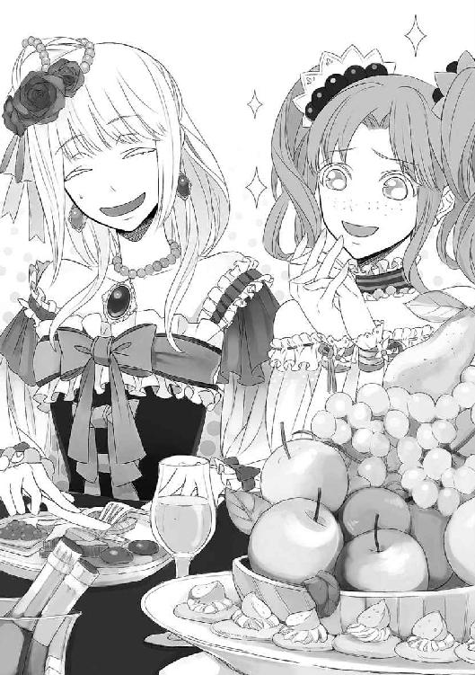
「あいつも隅におけないね。今回も可愛らしいお嬢さんだ」
「それは失礼な言い方ですわ、ダミアーノお兄様。マリアさん、お気を悪くされないでね」
「ええ......」
うなずきつつも、第四皇子と第二皇女の会話は気になった。あまり余計なことは口にしない方がいいだろうと思いながらも、気づけば口を開いていた。
「ルクス様には、以前にも婚約者がいらっしゃったのですか？」
皇太后も、そんなようなことを言っていた。婚約者をほったらかしにして、剣の腕を磨いていた、と。実のところ、マリアは気になっていたのだ。
ビアンカが窘めるようにダミアーノを睨み、それから気遣うようにマリアに向いた。
「気にされないことよ、マリアさん。確かにルクスお兄様には婚約者がいたけれど――」
「過去の話だ」
そう答えたのは、ビアンカでもダミアーノでもなかった。
カツカツと小気味よい長靴の音が弦楽四重奏をかき消し、マリアの背後で止まる。振り向く以前に、マリアは遠い席で皇太后エヴァが顔をしかめるのを見てしまった。
現れたのは、ルクスだった。
「具合はいいのかい、ルクス？」
さして心配していない様子で、ダミアーノが葡萄酒を口に運びながら訊く。悪魔にまつわる事情を知らされていない者たちは、ルクスが病で臥せっていることになっているのだ。
「悪くない」
面倒そうに短く告げ、ルクスはおもむろにマリアの隣に腰かけた。そこは一応、ルクスの席として空けてはあったが、グラスひとつ用意されてはいない。
エヴァが小声でリカルドに何かを言い、リカルドが苦笑いしているのをじっと見つめていたマリアは、ふいに肩に手をまわされ、身をこわばらせた。
「マリア、俺の過去に嫉妬したって？」
「......っ、な、なにを......！」
「だめだよ、続けて」
耳元で囁かれ、マリアは余計に肩におかれた手を意識してしまった。そこにルクスの熱を感じ、言いようのない気恥ずかしさに襲われる。
緊張してはいけないと思えば思うほど、頬が紅潮するのがわかった。
婚約者のふりをすること。これが、マリアの祓魔師としての仕事なのに。
「な、なんの話でしょうか？」
なんとか声を振り絞ってそう訊くと、にやりと笑ったルクスに見つめられた。
「俺の前の婚約者の話じゃなかった？」
「......そう、でした」
訊いたのは自分だ。ただ、本人に訊くつもりではなかったのだ。隣では、ビアンカが「修羅場よ」と周囲に告げている。
「あれは、父上が勝手に決めた話だ。とっくに破談になってる」
「破談......どうして？」
素直に疑問を口にすると、ルクスはマリアの髪に触れ、困ったように眉根を寄せた。
「......なんて可愛いんだ、マリア。俺の過去をも独り占めにしなければ、気が済まない？」
「え、あの、その......っ」
慈しむように頭を撫でられ、マリアは言葉を失った。婚約者のふりというのは、家族の名や設定を頭に詰め込めばいいだけのものではなかったのか！
頭に血が上ってどうにもならなくなり、助けを求めようとメルキオーレを見やると、彼は無言で自分の頬を人差し指で持ち上げた。笑え、という指示のようだが、できる気がしない。
「俺は今もこれからも、マリアに一途だよ。父上のようにあちこち手を出したりはしない」
ルクスがそう言うと、晩餐の席に笑いが起こり、エヴァだけが咳払いをした。
「それより、俺の婚約者はいたくお疲れのようだ。連れて帰らせていただきますよ」
ぐい、と腕を引かれ、強引に立ち上がらされる。
「私はまだ――」
「いいや、連れて帰る」
「なんだ、独占欲が強いのはルクスの方か」
「お兄様ったら、大胆ね」
ダミアーノやビアンカのからかいの声に、マリアの顔はさらに赤く染まる。とりあえず慌ててグラスをテーブルに置くや否や、ルクスに引っ張られるようにして広間をあとにした。
＊
「初日から無理をしすぎだ」
ぐったりと絨毯に座り込んだマリアに、ルクスは不機嫌そうに言い放った。足を組んだ姿勢で見下ろされ、マリアは思わず睨んでしまった。
「ルクス様に引っ張られたからです。慣れない靴で走ったから――」
「痛めたのか？ 浮かれて着飾ってリカルドの晩餐会なんかに出て行くからだろ」
「浮かれてなどおりません！」
自分でも足の具合を確認したくてドレスの裾をまくろうとして、ルクスの視線を気にしてやめた。それに気づいたのか、ルクスは面白いものを見つけたとばかりに意地悪な笑みを浮かべた。
「見せてみろ」
「大丈夫です。もう痛みませ――ひゃっ」
言い終える前に、ドレスの上からふくらはぎをつかまれてしまった。身の危険を察して身構えるも、ゆっくりと靴を脱がすその手つきは意外にも優しかった。
晒したマリアの足首を眺め、ルクスは眉をひそめる。
「赤くなってるな。俺の見ていないところで怪我をするなんて、面白くない」
「どういう意味ですか？」
怪我をするところを見ていたいとでも言うのだろうか。悪魔のような皇子だ。
マリアは「すぐに治ります」とだけ言って、さっさと足をドレスの中に引っ込めて隠した。素足を見られるのも、ふくらはぎをつかまれるのも女性としてあるまじきことだし、恥ずかしくてたまらない。
清廉潔白を貫く祓魔師であるマリアは、極端に男慣れしていないのだ。メルキオーレも男性ではあるが、どちらかといえば父親のようで、意識したことはない。ルクスはおそらくそれを察していて、マリアが困るのがわかっていて、敢えてこんな仕打ちをしているのだ。面白がっているのが、企んでいるような顔つきでわかる。
マリアはふくらみかけた頬をもとに戻し、何もなかったかのような澄まし顔で訊いた。
「それより、なぜあの場へ？ ルクス様は、自由に出入りができるのですか？」
メルキオーレが結界を張り直した扉から外に出られないよう、リカルドに監禁されているのではなかったのか。
その疑問は、ルクスの不満を増長させたようだった。
「マリアが晩餐会に引っ張り出されてると聞いて、婚約者である俺がそばにいないのはおかしいから、一時的に結界を解きここから出せとリカルドに申し入れた」
苛立たしげに早口で言って、マリアを見据えた。
「マリアは、俺の隣で婚約者を演じていればそれでいいんだ。俺のいないところであいつらと和気藹々とやる必要はどこにもない」
余計なことだと言い切り、ルクスは瞳に影を落とす。
「......言い出したのは、皇太后か」
「私が国葬でルクス様に付き添うことになったことを、喜んでいらっしゃいました」
「それで、俺のことをどんなふうにおまえに吹き込んだ？ 皇帝の座を狙う不届き者だとでも言っていたか？」
マリアはぎくりと顔をこわばらせ、その表情を見てルクスは不敵に笑った。
「やはりそうか。まあ、無理もない」
マリアは思わず目をそらした。
危険因子だと、エヴァは言った。疎ましげに。
「......はっきりそうおっしゃったわけではありませんでしたが、剣の腕を磨くのも、悪魔と契約したのも、野心があるからだ、と」
そう報告すると、ルクスはふんと鼻を鳴らした。
「皇太后は、母上を憎んでいたからな」
「なぜですか」
「愛されていたからだ。母上は、前皇帝に」
即答され、マリアは口をつぐんだ。
「母上を逆恨みし、やがてそれが、俺がリカルドから皇帝の座を奪おうとしているという妄想へと発展した。俺の魔力を一番恐れているのは、実のところ皇太后かもしれないな」
妄想、という言葉を聞き、マリアは条件反射的に身を乗り出した。
「強い妄想を抱くのは、悪魔に惑わされている可能性があります......！」
「ただの女の醜い嫉妬だ。よくある話だろう」
ルクスに一蹴され、マリアはよくあるのかと驚きつつ、ならばと問いかける。
「ルクス様が皇帝の座を望んでいるというのは、皇太后殿下の妄想であり、事実ではない――そう信じてもいいのでしょうか」
ルクスはくくっと笑って、ゆるく首を振った。
「興味はないな。俺は皇帝には向いてない」
はっきりとした答えに、マリアはほっとした。しかしすぐに真顔になり、身を乗り出す。
「悪魔との契約に至った経緯を、教えていただけませんか」
「さあ、どうだったかな」
とたんにはぐらかされ、またマリアは思考の迷路に置いていかれる。
「それを教えていただけなければ、私はルクス様を悪魔からお救いすればいいのか、悪事をはたらこうとなさるのをお止めすればいいのか、判断ができません」
勢い込んで立ち上がったが、忘れていた足の痛みがぶり返し、少しよろけた。ルクスに腕をつかまれ持ちこたえたが、間近から睨み下ろされる姿勢になってしまった。
「それに答える義理はない。おまえの雇い主は、メルキオーレと同じで、リカルドだろう？ 俺の目的がどうあれ、おまえの仕事は変わらないはずだ」
ルクスの言う通りかもしれない。
そうかもしれないけれど、マリアは自分の仕事の意義を知りたいのだ。
誰かを救える、誰かのためになる......そう思えないと、祈りの力を発揮できない。
「ルクス様のおっしゃることは、矛盾しています。私の雇い主が皇帝陛下なら、私を晩餐会に出すことをルクス様が抗議なさるのは、間違ってます」
言ってから、後悔した。
そんな些細なことをつついても、意味なんてない。
しかし一度口に出した言葉を打ち消すことは叶わず、ルクスの顔から表情を消してしまった。
「......そうだな」
小さく、そう言って。マリアから手を離す。
「婚約者のふりを言い出したのは、リカルドではなく俺だったな。嫌ならやめてもいい」
わがままを言ったり、急に弱気になったり。そんな態度をとられたら、マリアは振り回されるばかりだ。......けれど。
「ルクス様は、国葬にご出席されたいのでしょう？」
マリアが婚約者として付き添わなければ、ルクスは国葬に出席できない。
ルクスは顔をそむけただけで何も答えてはくれなかったが、マリアは自分が今何をやるべきか、はっきりした気がした。
「私はやめません。それも、私の祓魔師としての仕事です」
きっぱりと告げると、ルクスの方が目をそらした。
「そうか......」
呆れたように、力なく笑った。「可愛げのない婚約者だ」
なんと言われようと、雇い主が誰であろうと、マリアはルクスの婚約者役を貫き通す。たった今、そう決めた。
「だが、無理をしてぼろを出すのはやめてくれ。俺がいればなんとでもしてやれるが......ひとりの時は」
そこで言葉を切り、ルクスは横目でマリアをきつく見据えた。
「――リカルドに気をつけろ」
「え......？」
マリアは困惑した。
皇太后には、ルクスに気をつけろと忠告されたばかりなのに。
受け止め方がわからないマリアの瞳が、小さく揺れた。
何も言えずに黙っていると、ルクスが小さく笑った。
「勝手なことを言っている自覚はある。だが、これだけは言っておく。祓魔師として仕事をまっとうしたいなら、俺に従え」
一方的に言われてしまい、マリアは思いきり眉根を寄せたあとで、慌てて指で眉間をほぐした。そんなことをしている間に、ルクスが大きなあくびをした。
「......今日はもう儀式はやらないんだろう？ だったら俺はもう寝る。疲れた」
そう言って労うようにマリアの肩を叩き、寝台へと倒れ込む。聞きたいことは山ほどあったが、マリアは仕方なくそっと毛布をかけるだけにした。
マリアのための部屋は与えられていないが、夜だけはと、ジェラルドが隣の従者部屋を貸してくれることになった。
部屋といっても、もとは牢獄として使われていた塔の最上階だ。暖炉などあるわけがないので、冷たい空気が充満していた。毛布にくるまっても、まだ冷える。必要なものがあればいつでも言ってと皇太后エヴァは言ったが、質素な部屋にたったひとりで閉じ込められているルクスを思えば、これ以上を望む気持ちにはなれなかった。
唯一の四角い窓には格子が嵌っていて、そこから外を覗くと月が見えた。細い三日月と闇に散った星々が、マリアを見下ろしている。月明かりは、どこか心もとない。
マリアは手燭に火を灯し、両膝をついて胸の前で手を組んだ。そして、そっと目を閉じる。聖女像や聖水盆はルクスの部屋に置いてきてしまったから、ここにはない。けれど、求める者を神は愛してくださるはずだから。
祈りは、きっと届く。
寝台に潜ると、マリアは聖典を開いて文字を追った。眠る前に一章分を読むのが習慣なのだが、言葉がまったく頭に入ってこない。文字の羅列が細かい模様に見えてきた頃、マリアは聖典の上に顔を突っ伏した。
（眠い――）
疲れた。足が痛い。今日はもう眠っても許されるよね......。
そう思った頃、意識の隅で何かを聞いた気がした。
なんだろう？ 扉の開く音......床の軋む音......。
ぎしっと寝台が鳴り、身体の片側が沈む。その感覚で、マリアは目を覚ました。
「誰っ!?」
とっさに聖典を握りしめ、身を起こす。
「残念、起きてしまったのか」
暗がりに不機嫌そうな声が落ちる。ぼんやりと見えるのは、黒っぽい髪と端整な輪郭。
「ルクス様......？」
「そうだ」
そう答えた声は確かにルクスのものだったが、なんとなく雰囲気が違うような気がした。
見覚えのある白いシャツと黒衣に身を包んだルクスが、片膝を寝台についたまま身を乗り出してきた。怖い、と感じる暇もなく、肩を押さえ込まれ、壁に押しつけられる。
抵抗しようにも力だけでは敵わないし、先ほど言われた「従え」という言葉が頭をぐるぐると彷徨っている。
逡巡している間に、彼はもう一方の手で寝間着の上からマリアの腹のあたりに触れ、指先をゆっくりと這わせ始めた。
「何を――」
「しっ」
静かにと制され、マリアはそのまま声を封じられた。従ったというより、くすぐったいような指の感触にどう反応していいかわからず、固まっただけだ。
やがてその指先が胸元を辿り、押し分けるように触れられると、マリアは羞恥に耐えきれなくなりさすがに声を取り戻した。
「や......っ、ルクス様、そこはっ」
「ああ、これだ」
ルクスが、服の上からそれをぐしゃりとつかむ。そして、笑みを浮かべマリアを見下ろした。
「これ、はずせよ」
「え......？」
マリアの背筋が凍った。そして、きつく相手を睨み据える。
「あなた、ルクス様と契約した悪魔ね！」
「あ、ばれちゃった？」
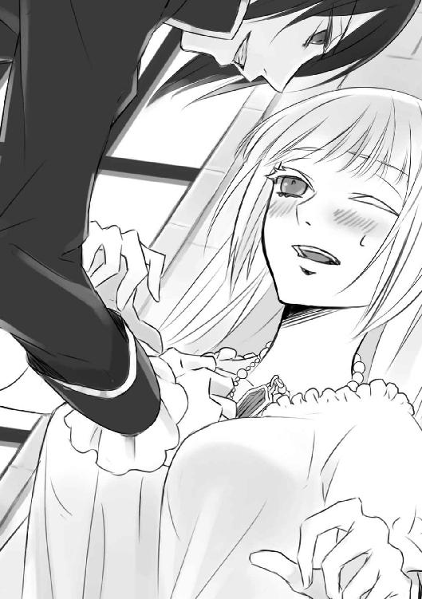
あははと笑って、彼――ルクスの姿を借りた悪魔は、素早く寝台から下りた。
悪魔が探っていたのは、マリアのロザリオだ。
よく見れば姿形はルクスのものだが、瞳だけは真っ赤に染まっている。その目が愉快そうに細められ、マリアを見つめた。
「皇子のふりしてそれをはずさせようと思ったのに、失敗失敗。でも、ちょっとは楽しかったでしょう？」
にやにやと笑うその表情はどこか子どもじみていて、不気味でしかなかった。
マリアは警戒して距離を置きながら、悪魔を見据える。
「どうして、あの部屋から出られたの？」
そう問いかけると、悪魔はあははっと笑った。
「簡単な話だよ。今の僕には、あの結界を超えた力があるからさ」
その答えに、マリアはちらりと手元の懐中時計に目をやった。針は、ちょうど零時を示している。悪魔の力が満ちる時間帯だ。もともと力を持った悪魔だという話だ。ルクスの眠った隙に彼の肉体を借り、結界を破って出てくるくらい、わけないのだろう。
「だったらどうして、監禁状態に甘んじているの？」
メルキオーレが結界を張る前は、もっと楽に出入りできたはずだ。
悪魔は不満そうに顔をそむけると、しぶしぶといった感じで口を開いた。
「皇子がそれを望むからさ」
そして、とんとんと自分の胸を指す。
「今は、どうして出てきたの？」
「君が呼んだんじゃないか。この小さな炎で」
そう言って悪魔が手燭に触れると、その炎は一気に大きくふくれ上がり、天井に届きそうなほど燃え上がった。炎の色に黒を散らした、禍々しい色に変化して。
「あははっ、やりすぎちゃった」
メルキオーレが言っていた。ルクスが宿した悪魔は、黒い炎を操るのだと。
「私は呼んでないわ」
「そう？ じゃあ気のせいだったかも」
くすくすと笑う彼は、やはり子どもじみている。悪魔にも様々な性格をした者がいるというが、本当だった。マリアが出くわしたことのある悪魔はどれも低俗な獣の姿をしたものばかりで、人の言葉を話す悪魔はいなかった。
「ねぇ、祓魔師のお姉さん。君はここの人間に会った？」
「ここの？ ええ、会ったわ」
ルクスだけでなく、リカルドやエヴァ、ビアンカたちと、一日で多くの皇族に会った。
「互いへの嫉妬、贅沢を望む終わりない欲望......ここの人たちは、特に醜いでしょう？」
マリアは答えなかった。
教会がどれだけ説いても、人間はどうしてか欲望を抱くことをやめない。
「君だって、妬ましく思うんじゃない？ 毎日綺麗なドレスを着て、美味しいものを食べて、働きもせずばかみたいに踊って暮らしている彼らを見てさ」
悪魔は、マリアを惑わそうとしている。そう気づいて、マリアは毅然とした態度で応じた。
「皇族の方々には、それだけ重い責任が課せられてるのよ。民を守る使命があるわ」
「だから、贅沢してもいいって？」
「確かに食事は豪勢だったけど、いきすぎた贅沢には感じなかった」
「ふぅん......？ でも、ビアンカは一度着たドレスは二度と着ないそうだよ。ダミアーノは水のように葡萄酒を飲み、飽きると川に流してしまうって」
「知らないわ」
悪魔の言葉には、もともと信憑性がない。
「リカルドは即位するなり、国民から巻き上げる税を上げたらしい」
本当だろうか。一瞬、惑わされかけ、マリアは慌てて首を振った。
「知らないわ」
――リカルドには気をつけろ。悪魔の声に重なってルクスの声が蘇り、うっかり信じてしまいそうになった。
「君だって女の子だ。色気のない祓魔服より、きらびやかなドレスが着たいんじゃない？ ドレス姿の自分を鏡で見て、どう思った？」
「祓魔服の方が好きよ。この仕事に誇りがあるもの」
「悪魔に殺されるかもしれない仕事なのに？」
「覚悟の上よ」
「でもほら、今この瞬間、僕に食べられちゃうかもしれない」
すっとのびてきた手が、マリアの首にかかった。白い素肌に触れた瞬間に火花が散り、悪魔の――いや、ルクスの手首に火傷が生じた。マリアはそれを見て力を振り絞る。
「触れないで！」
絞められる前にと腕を振り上げ、マリアはこっそり首から外していたロザリオを悪魔に押しあてようとした。
「うわっと、危ない」
飛び退いた悪魔が、危機を感じているとは思えないふざけた仕草でひらひらと手を振った。
「つまんないね、君。美味しそうな匂いが全然しない」
「私は祓魔師だから」
清廉潔白でいれば、悪魔に隙を与えない。
悪魔に屈することは、祓魔師にとって屈辱以外の何ものでもない......そう教えられてきた。
そんなマリアを眺め、悪魔はわざとらしく眉根を寄せた。
「んー......君を相手にするより、皇子の願いを叶える方が面白いかもなぁ」
「ルクス様の願いって、なに？」
悪魔がルクスの願いを叶えれば契約成立となり、ルクスの魂は悪魔に食われてしまう。
そうなってしまえば、祓魔師には何もできない。メルキオーレが依頼された案件は、失敗に終わる。
つまりそれを知り、阻止することができれば一番確実なのだ――けれど。
「秘密」
祓魔師に阻止されてしまえば魂を食らえない悪魔が、教えてくれるはずもなかった。
「でも、ひとつだけ助言をあげる」
悪魔が身を屈め、マリアと視線の高さを同じにする。惑わされてはいけないと身構えたが、瞳の色が揺らいでいることにマリアは気づいた。まばたきの合間に、ちらりと紫色が覗く。ルクスが起きかけているのだ。
早くしなければ、悪魔はルクスの中に戻ってしまう。けれど、下手なことを言えば揚げ足を取られ失敗する。悪魔との対話は、常に慎重でいなければならないのだ。
焦らされながら待っていると、悪魔はゆっくりと口を開いた。
「この宮殿には悪魔が棲んでいるよ――僕の他にも、ね」
「どういうこと？」
マリアの問いかけには答えず、悪魔はふふっと笑って意識を契約相手に返した。
――他にも、悪魔がいる。
マリアは意識を集中させたが、あきらめたように首を振った。ルクスの悪魔の気配が強すぎて、他にいたとしても察知できない。
悪魔がなぜマリアにそれを教えたのか、その真意がつかめない。マリアを惑わすための虚言だったかもしれない。
ぐるぐると悩んでいると、膝の上でルクスが目を覚ました。眠っている大の男を寝台に運ぶことができず、かといって絨毯の上に転がしておくわけにもいかず、とりあえずマリアはルクスを自分の膝で寝かせておいたのだ。念のためと、手袋をはめることを忘れず。
「......何をしている？」
第一声から不機嫌そうで、マリアはため息をついた。くるくると表情を変える悪魔を思い出し、まだ悪魔の方が可愛げがあったかも......などと思ってしまう。
もちろんそんなことは顔に出さず、マリアは簡潔に告げた。
「悪魔が来ました」
「は......？」
絶句したルクスは、起き上がってマリアを凝視した。顔から視線を下げ、目元をこわばらせる。
「その首の跡......まさか、襲われたのか？」
「どうかなってますか？ 少々脅されましたが、本気で殺す気はなかったと思います」
「俺の悪魔に？」
「ルクス様が眠った隙に身体を借り、この部屋に」
マリアがそう告げて初めて、ルクスはここが自分の部屋でないことに気づいたようだ。辺りを見回し、口元を押さえる。
「......悪魔に身体を乗っ取られてる間の記憶がない」
「ルクス様は眠ってらしたから」
「そういうものなのか？」
「推測ですが」
マリア自身、悪魔に憑かれた人間に会ったことはあるが、悪魔使いに会うのはルクスが初めてなのだ。あとでメルキオーレに確認しておこうと、胸に留める。
「そうか......」
ルクスは深刻そうな顔で何やら思案していたが、あきらめたように首を振ると、疲れたように両手で顔を覆ってしまった。そうしながら、ぽつりと声を発する。
「......それで、他には何をした？」
「何も......。たいした話はしていません」
「そうか」
ルクスの表情は見えない。
マリアは少し迷ってから、思い切って言ってみた。
「ただ、ひとつ気になることを言ってました」
「なんだ？」
じっと見つめる。ルクスの反応を、見逃さないように。
「この宮殿には、他にも悪魔が棲んでいる、と」
マリアは緊張した面持ちで見つめていたが、ルクスは力なく笑っただけだった。
「そうだな。ここは悪魔だらけだ。皇族なんて、自分の地位を守るためなら人を殺すことも厭わない連中だ。自分で署名した契約すら守れない奴もいる。......俺もとばっちりを受けるほど、嫉妬や妬みも蔓延してる。悪魔以下だ」
「......比喩、ですか」
「違うのか？」
問われて、マリアは口をつぐんだ。
「私には、まだ......この宮殿のことはよくわかりません」
そうとしか、答えられなかった。
ルクスが知らない事実なのか、悪魔の虚言なのか、判断ができない。マリアが思案に暮れていると、唐突にルクスが顔を上げた。
「俺がどうしてルクスと呼ばれているか知っているか」
「......いいえ」
ルクスの名は、正しくはセヴェリオ・ルクス・ジュスティーニである。この帝国では第二名は神の与える名として付けられるだけで、個人としての名前は第一名で通すのが常だ。
「セヴェリオは、父上に付けていただいた名前なんだ。父上には子どもが大勢いるが、実際に名付けをしたのは俺だけなんだそうだ」
「え......？」
驚きに目を見開くマリアを見て、ルクスは微苦笑を浮かべた。
「それだけ、愛されてたんだ。母上は」
だから憎まれた。正妃であったエヴァに。他の皇妃たちに。
「皆、俺をルクスとしか呼ばなかった。セヴェリオと呼ぶのは、父上と母上だけだった」
「でも、ルクス様は、私にはルクスと呼べと――」
「父上は死んだ。母上は公の場に現れない。宮廷の者たちがルクスと呼ぶのに、おまえにだけセヴェリオと呼ばせてもややこしいだけだろう」
そうかもしれない。けれど、真の名を誰にも呼ばれないなんて、それは悲しすぎる。......実際、今のルクスはひどく傷ついた顔をしているのに。
「俺は、ここでは邪魔な存在なんだ。皇妃たちには虐げられ、好きで剣の稽古ばかりしてただけなのに、いずれ軍を率いて力ずくで皇帝の座を奪うつもりなんじゃないかと囁かれる。......もう、うんざりだ」
悲しく微笑むルクスは、泣いているようにも見えた。けれど、その目に涙はない。
「悪魔と契約しなかったとしても、俺はいずれこうなる運命だったんだろう。邪魔になった皇子があらぬ罪を着せられ投獄されるなんて、よくある話だ」
「罪......投獄？ 今は、悪魔祓いが完了するまで監禁されているだけではないのですか？」
「......なんでもない。忘れろ」
ルクスは目をそらし、マリアの疑念を遮るようにして立ち上がった。
今のルクスは、また顔色が悪かった。悪魔に侵食されている影響かと思ったが、それだけではないのかもしれない。
ルクスは、追い詰められているのだ。
帝国オルテッツァに。
「ルクス様――」
「部屋に戻って寝る。また悪魔が来ても、もう触れさせるな。マリアが俺には許さないことを悪魔ごときにされるのは、むかつくからな」
冗談めいた口調でそう言って、ルクスは出て行ってしまった。
＊
翌日のマリアは、朝からエヴァ専属の針子たちに囲まれていた。
「マリア様、失礼いたします」
頭まわりから肩幅、胸囲など体中を測られる。喪服はちょうどいい大きさのものがなかったため、もとある衣装を詰める作業が必要なのだという。
前皇帝の国葬は明日と迫っているため、宮廷中がその準備で大わらわだ。そんな中、マリアの衣装のために時間を割いてもらうのは心苦しいが、国葬でマリアがおかしな格好をしていれば、ルクスの品位を疑わせることにもなるのだから、遠慮は許されない。
「マリア様、こちらへ」
一通りの採寸が終わると侍女のひとりが迎えに来て、今度は別の衣装部屋に連れて行かれる。鮮やかな藍色のドレスを着せてもらうと、部屋の前ではルクスが待っていた。
「行こうか」
ルクスはこの日も黒に身を包んでいた。白いシャツのフリルが覗き、それだけが眩しい。左肩に羽織ったマントは藍色で、マリアのドレスと同色だった。
腰に手をまわされ、マリアは硬直する。
「綺麗だよ、マリア」
「え？」
どきりとした。今は演技する必要はないはずだ。
甘い微笑を湛えたルクスは、さらに慈しむような視線を注いでくる。
「さすがは俺が惚れた女だ」
「ほっ、惚れ......っ!?」
慌てるマリアに、ルクスは苦い顔になりその耳元に唇を寄せた。
「なんだその反応は。男に口説かれたことないのか？」
「............っ」
絶句して真っ赤になると、ルクスにあごで促された。そちらを振り返ると、わずかに開いた扉の隙間から、衣装部屋の侍女たちが縦に連なって二人を覗いていた。
「仕事、なんだろ？」
さらに耳元で囁かれ、見上げた先でルクスに微笑まれた。そういうことならと、無駄に胸を高鳴らせてしまったことを意識の外に追い出し、マリアもできる限りゆったりと微笑んでみせる。
「もちろんですわ」
「それでいい。できるじゃないか」
ルクスは満足そうに笑った。
これでいい。何も間違っていない。そう思うのに、マリアは胸を冷たい風が吹き抜けていくような感覚を抱いていた。
演技とわかり、がっかりした？ その問いかけを自分の中で「まさか」と打ち消し、マリアはエスコートされるままにルクスの隣を歩いた。
目的の場所に向かう途中で、マリアはある人物を見つけ、声を上げた。
「あんなところに......っ」
「どうした？」
「少し、お時間をいただけますか」
ルクスにそう告げて、マリアはドレスの裾をつかんでその人物に駆け寄った。
「――師匠」
「おや、マリア。無駄に華美な衣装なんか着て、どうしたの？」
リカルドに雇われているくせに、陛下から何も聞いていないのだろうか。メルキオーレは高価そうな葡萄酒を手に、宮殿から出ようとしているようだった。
「師匠こそ、どちらへ？ まさかそれ、盗んだんじゃないですよね？」
険しい顔で問い詰めると、メルキオーレはあからさまに顔をしかめた。
「人聞きの悪い。ダミアーノ皇子殿下にいただいたんだよ。売れば高くつきそうじゃない？」
「売るんですか」
「僕は、マリアのところの安い葡萄酒でじゅうぶんだからね」
実家の生産品を安物呼ばわりされて腹が立ったが、それどころではない。
「師匠はいったい、何をやってるんですか？ きりきり準備を進めて、国葬までにルクス様の悪魔を祓ってしまえれば、そもそも私がこんな格好をする必要はないじゃないですか」
「何をって、何もしてないよ」
「はっ!?」
しれっと、なんてことを言うのだ。
「言ったでしょう？ この仕事は日給制だって」
この守銭奴が！
師匠に対して初めて罵りたいような気持ちに駆られたが、そんな時間はない。
「もういいです。仕事がありますので、これで」
「安心しなさい、マリア」
メルキオーレがふいに真剣な顔になり、自分の唇に人差し指をあてる。静かにしていなさい、という意味だ。何を、と問う前に、メルキオーレは小声で告げた。
「ルクス皇子殿下の悪魔祓いには期限がある。それは守るよ」
「その期限とは、いつのことですか？」
「新皇帝陛下の戴冠式」
教皇が復帰すれば、正式な戴冠式が行われることになっている。それはそう先の話ではないはずだと、マリアは思った。さらに詳しい話をすることは、廊下の反対側から人が歩いてきたため、断念せざるを得なかった。
後ろ髪を引かれる思いで、マリアはメルキオーレから離れた。
「何を話していた？」
ルクスに睨まれ、マリアは首を振った。
「申し訳ありません。師匠にはいろいろと聞きたいことがありまして」
メルキオーレの行動には、疑念が増すばかりだけれど。
ルクスは強引にマリアの手首をつかみ、自分の腕にその手をかけさせた。
「俺の婚約者たる女が、他の男と口を利くな。品を疑われる」
「......はい。私は自分の仕事をします」
マリアは婚約者になりきるため、自分に言い聞かせる。
――私は、病がちの皇子を支えるために国葬に参列する。
そこには深い愛があるはずだ。ひとりの男性へと注がれる愛情――祓魔師として、救いを求める人たちを等しく愛そうとするマリアには、おそらくは永遠に無縁の感情だけれど。
今はルクスの婚約者。愛情は、たったひとりのためにある。
「心の準備はいいか？」
扉の前で問われ、マリアはルクスを見つめ、微笑んだ。
「はい、ルクス様」
視線の先で、ルクスが軽く息を呑んだような気がした。が、すぐに苦笑へと変わる。
「......まったく、おまえの仕事熱心ぶりには敵わない」
「お任せください」
マリアが力強く答えると同時に、扉が開いた。
謁見の間には、ずらりと廷臣たちが並んでいた。
突き刺さる視線を肌で感じながら、マリアは膝を曲げ、深く頭を垂れた。
「面を上げよ」
声がかかり、ゆっくりと顔を上げる。目の前には、皇帝リカルドが座していた。頭には月桂冠。教皇ミハエル二世の復帰を待ち、本物の冠は未だ保管された状態だ。
「陛下。私の婚約者を連れてまいりました。どうか、明日の葬儀への参列をお認めください」
ルクスが神妙に膝を折り、申し入れた。
国葬への参列は、すでにリカルドに承認されている。だからこれは、実際には事情を知らない廷臣たちへの報告と顔見せなのである。
「マリア、こちらへ」
リカルドに呼ばれ、設けられた証明書台まで歩を進める。もとから置かれていた書類に署名をすると、廷臣のひとりがその書類をリカルドに渡し、そこにリカルドも署名をする。上品そうな手袋に包まれた指は女性のように華奢で、よく見れば面差しもどこか女性的だった。ルクスとは似ていないなと、マリアは静謐な空気に呑まれつつぼんやりと思った。
「さあ、堅苦しいのはこれで終わりだ」
リカルドが言い、ほっとしたような空気が謁見の間に広がる。いつの間にか隣にいたルクスに小突かれ、マリアはようやく羽根ペンを置いた。
「ありがとうございます、兄上」
「マリアを大切にね、ルクス」
「当然です」
ごく自然な兄弟の会話に、廷臣のひとりが気安く声をかけてきた。
「ルクス皇子殿下、新しいお住まいはもうお決めになられたのですかな」
「これからだ。帝都を出て、田舎に大きな屋敷を建てるのもいいかなと思ってね」
「ほう。それはそれは」
廷臣の顔は、あからさまに緩んだ。ルクスがリカルドから離れてくれるのは大歓迎、といったところか。
（本当に、ここには悪魔が好みそうな負の感情が充満してる）
マリアがそう思ったところで、リカルドが目を細めた。
「まあまあ、急かすものじゃないよ」
皇帝にやんわりと窘められた廷臣は、おとなしく下がった。
マリアは少しほっとしたところで、ふとある気配を感じ取った。
――禍々しい、闇の気配。
緊張が走る。わずかだけれど、確かにそれは悪魔の気配だった。
どこから？ 無数の負の感情が入り乱れ、うまく察知できない。
見渡していると、再びリカルドに名を呼ばれた。
「マリア、明日はルクスをよろしくね」
心配そうに眉根を寄せるリカルドに、マリアは微笑んだ。
「必ず、殿下をお守り申し上げます」
そう告げて、隣にいるルクスの腕をきゅっとつかんだ。驚いたようにルクスがこちらを見たのがわかったが、マリアはリカルドを見据えていた。
演技ではない、これは本物の誓い。
ルクスを国葬に出席させる。
――必ず。
＊
そして国葬の日はやってきた。
夜が明けてもまだ暗く、厚い雲が空を覆い、重苦しい空気が地面にまで届きそうな日だった。
「ルクス様、刻印を封じます」
「リカルドの命か？」
「そうです」
うなずき、手袋をした手でルクスの左手を取る。すでに着替えを済ませたマリアの手袋は黒で、髪と一緒に編み込んだレースも黒だ。同じくルクスも喪服姿だったが、普段から黒装束に身を包んでいるので、印象はさほど変わらない。
ルクスはおとなしく左手を開いた。
包帯はしっかりと刻印を隠している。マリアに触れたときの火傷の跡は、もうなかった。
取り出した木製の小さなロザリオを、包帯の上から巻き付ける。
「............っ」
「痛むでしょうが、我慢してください」
刻印を封じるというよりは、ルクスが包帯を外せないように封じる、というところだ。
包帯を外し刻印をあらわにすれば、彼はその身に宿した魔力を自由に扱うことができる。それを阻めというのが、リカルドの命だ。
普段からそれをしないのは、銀の鎖と聖水で塞ぎ、そしてメルキオーレが結界を強化した扉を、ルクスが破れないとリカルドが信じているからだ。
ちなみに、悪魔がその扉を容易く開けてしまったことを、マリアは誰にも報告していない。ルクスに扉を破る気がないことと、悪魔がそのルクスの意思を尊重しているらしいことを、マリアは知っているからだ。
「このロザリオは？」
「お守りです。両親の祈りが込められています」
「......いいのか？」
「もちろん、今日が終われば返していただきます」
マリアは真顔で告げたが、ルクスは関心のなさそうな顔で包帯を巻かれる左手を眺めるだけだった。
国葬は大聖堂ではなく、前皇帝が愛したという、緑に覆われた中庭で開始された。教皇ミハエル二世はこの日も欠席しており、代わりの枢機卿が聖典を読み上げる。
おかげで、ルクスは平然とした表情で参列していた。これが大聖堂で、最高位である教皇の声が響いていれば、ルクスは平静を保てなかっただろう。たちまち気分が悪くなったはずだ。
そんなふうにルクスの顔色を窺いながら、マリアは彼の左手を握る。こうしてマリアの力を与えている間は、悪魔がどんなに自我を主張しても包帯がほどけることはない。
「......俺は、父上を恨んだこともあったんだ」
唐突にルクスが口を開いたので、マリアは驚いて辺りを見回した。幸い、二人は最後尾に席を設けており、他の人の耳には触れていないようだった。
「恨む、とは？」
またも負の感情を口にするルクスに、マリアは怪訝な目を向けてしまう。
ルクスは正面を見据えたまま、ぽつりぽつりと話し出した。
「父上は、母上を愛した。なのに、そのために虐げられた母上を、父上は守らなかった。......結局は、正妃や他の皇妃たちを平等に愛そうとすることで、場を収めようとしただけだった」
「......それは、正しいことではなかったのでしょうか」
マリアには、それが前皇帝の過ちには思えなかった。けれど、ルクスは嘲笑う。
「平等に愛されて満たされる者など、いるわけがないだろう」
「そうでしょうか......？」
「愛する者の愛情を独占することでしか、人は満足できない」
マリアには、その言葉が正しいのかを判断する術がなかった。
マリアはまだ、男女の間に生まれる愛情に触れたことがない。神と人、親と子などの間に生まれる愛情とは違うことくらいは、頭ではわかっているけれど。
本当は、なぜ父が聖職者を辞めてまで、神に仕えるという使命を捨ててまで母との結婚を選んだのか、未だに理解できていない。
その意味を、知りたいとも思う。
けれど、知ってしまうのは怖い気もする。
マリアがうつむいていると、ルクスは再び口を開いた。
「ただでさえつらい境遇にいた母上は、父上の愛をも失って――心を失った」
「え......？」
ルクスを見やると、彼はわずかに目を伏せた。
「心の病になり、宮廷の離れで療養している。俺のことも忘れたようだ」
「そう、だったのですか」
淡々と話すルクスの目に、光はない。
「母上への罪悪感からなのか、父上はよく俺に剣を教えてくれた。腕がいいと褒めてくれた。将来は皇帝を守る騎士団長だと言われ、俺もその気になってた」
雨が降ってきた。
喪服姿の者たちがざわつく中、ルクスは話し続ける。
「今となっては、父上との思い出なんて、そんなものしかない」
言い終えて満足したのか、ルクスは口をつぐんだ。これが彼なりの父親の見送り方なのだと、マリアは悟った。
ルクスの頬を伝うものが涙なのか雨なのかわからなかったが、見ないふりをした。
小雨を気にする群衆の中、リカルドが立ち上がった。注目を浴びながら、前皇帝の棺に花をたむける。胸の前で十字を切り何かをつぶやいてから、演台に上がった。
リカルドは前皇帝の栄誉を称え、ときおり声を詰まらせながら、感謝の言葉を述べ始める。
やや感情的ともいえる新皇帝の葬送演説に、ざわつきも次第に静まっていった。中には涙する者もいて、葬儀は最大の山場を迎える。
マリアもしんみり聞き入っていたのだが、握っていたルクスの手に逆に強く握り返され、思わず顔を覗き込んだ。
「ルクス様？」
手が痛むのか、それとも気分が悪くなったのか......と案じるほど、ルクスの顔つきはひどく険しかった。激しい視線の先には、演説を続けるリカルドの姿がある。
その表情が意味するのは――。
憎悪だ。
（いけない）
剥き出しのその感情に、マリアは危険を察した。握られた手が熱い。刻印が、悪魔の力が騒いでいる。
「ルクス様――」
マリアの声が聞こえているのかいないのか、ルクスはリカルドから視線を剥がすと強引にマリアの手を振り払い、席を立った。
慌てて追いかけようとして、マリアは喪服の裾を踏んでしまった。姿勢を立て直す間に、ルクスの姿は中庭から見えなくなってしまった。
今、ルクスをひとりにしてはいけない。マリアははしたないと思われるのもかまわず、裾をまくりあげて駆け出した。
少し走ると、宮殿へと続く回廊の途中で、騎士たちの姿が見えた。ルクスを見なかったかと声をかけようとして、いったん足を止めて呼吸を整えた。ルクスの婚約者として、乱れた姿をさらすわけにはいかない。
「......見たか？ 前皇帝陛下の棺」
「ああ、分厚い布で覆われてた、あれだろう？」
声を潜めて話すその姿に、マリアはとっさに柱の陰に隠れた。聞いてはいけない話だとしたら、厄介なことになる。
「絶対に布をとるなって命じられたそうじゃないか」
「じゃあやっぱり、あの噂は本当なのか？ 前皇帝陛下の胸には、剣で深々と抉られた痕がある......」
「暗殺か。犯人はあれ以来ずっと臥せっていらっしゃる、あのお方か？」
「しっ、はっきり口に出すな。葬儀が行われてる真っ最中だぞ」
こそこそと、騎士たちは持ち場へと戻っていく。
――......暗殺？
想像もしなかった言葉が、マリアの頭を駆けめぐった。
前皇帝は、病気で急死された。公表されたのはそれだけだった。
しかしそれが殺されたとなれば、事情が変わってくる――。
殺された？
誰に？
「――――っ」
マリアはてのひらで口を塞いだ。ある事実に気づき、叫びそうになったのだ。
前皇帝が亡くなったのは、一週間前。
ルクスが悪魔と契約したのも、同じ一週間前。
これは単なる偶然なのか。それとも――。
「知ってしまったか」
背後から声がして、マリアはびくりと肩を震わせた。おそるおそる、柱の陰から顔を出す。
そこには、表情をなくしたルクスが立っていた。
「......ルクス、様」
うまく声を出せず、マリアはのどを詰まらせた。
「走ったのか？ 髪が乱れてるな」
近寄ってきたルクスが、マリアの髪に触れようとした。
「や......っ」
とっさにその手を振り払ってしまい、はっとしてマリアは首を振った。ルクスが衝撃を受けたように目を見開き、マリアを見ている。
「いえ、違います。髪なら自分で――」
「殺人鬼に触れられたくないって？」
そう言ったルクスの瞳には、もう驚きの色はなかった。闇で覆ったように暗く染まり、凍てつくような視線がマリアを貫く。
「こ......殺したのですか、前皇帝を」
「おまえはどう思う？」
逆に問いかけられ、マリアの頭は真っ白になった。
私は――今なんと言った？
なんてことを、言ってしまったのか。
「わ......私は......」
「俺に怯えるその態度こそが、答えそのものだな」
ふっと笑って、ルクスは漆黒のマントを翻した。そのまま、宮殿内に戻ろうとしている。
そして、自分の犯した過ちに気がついた。
追いかけなければ――。
混沌とした感情に押し流れそうになりながらも、マリアはそれだけを思ってルクスを追った。
＊
ルクスはどこへ行くわけでもなく、自ら与えられた塔の部屋へと帰っただけだった。マントと上着を乱暴に脱ぎ捨て、寝台に腰かける。
「父上が殺されたのは、事実だ。もちろん、公にはなってない」
マリアは何も言えなかった。幼い子どものようにいやいやと首を振り、扉を背に立ち尽くす。
この扉から外に出ることも、ルクスに近寄ることもできず、ただ胸元のロザリオを強く握りしめていた。
何をどこから考えたらいいのか、わからない。
「マリア」
名を呼ばれ、びくりと身を震わせた。自分でも驚くほど、身体がこわばった。
それを見たルクスが深くため息をついた。包帯の巻かれていない右手を黒髪につっ込み、ぐしゃぐしゃとかき乱す。そのまま片手で額を覆い、わずかに顔を持ち上げてマリアを見上げる。
見捨てられた子どものような目だった。
――ルクスを傷つけた。
そう気づいたマリアの頭が急速に冷え、我を取り戻した。
「違います。ルクス様は暗殺者ではありません」
「俺が殺した」
「............っ」
真逆のことをほぼ同時に言われ、マリアは絶句した。
ルクスはゆらりと立ち上がってマリアに近づくなり、その肩を扉に押しつけた。
「痛......っ」
「俺が怖いか？」
もう片方の拳が、激しく扉を殴った。どんっという大きな衝撃に、マリアは目を見開く。それでも、ルクスから目をそらさなかった。
紫色の瞳が歪む。なんて悲しい顔をするのだろう。
そんな表情をさせているのは、マリア自身だ。
「俺は悪魔と契約し、己の父親を殺すような男だ」
マリアは首を振る。
それに苛立ったように、ルクスは肩をつかむ手に力を込めた。
「俺を恐れろ。助けてくれと懇願しろ......！」
骨が軋む痛みに思わず顔をしかめるが、まっすぐにルクスの視線を受け止め続けた。そして、いたわるように告げる。
「助けてほしいのは、ルクス様ご自身でしょう？」
「な......にをっ」
ルクスの身体が離れる。その顔は、泣き出しそうに見えるほど歪んでいた。
「先ほどは騎士たちから暗殺の事実を聞き、混乱しました。惑わされそうになりましたが、今は確信を持って言えます。ルクス様は、暗殺者ではありません」
「......違うっ。俺が......っ」
頭を抱えるルクスに、マリアは言葉を重ねる。
「先ほどルクス様は、前皇帝陛下との思い出を私に語ってくださいました。剣を褒められて嬉しかったと......陛下をお守りする騎士になりたかったと」
「俺は父上を恨んでもいたと言った」
「殺したいほど憎かったはずがありません。皇太后殿下は、ルクス様がいつの日か皇帝の座を奪うために剣を学んだと思い込んでいらっしゃいました。けれど、ルクス様が剣の腕を磨いたのは、陛下をお守りするためだったのでしょう？ ルクス様はお父上を慕っていた。それなのに、その大切なお命を奪うことをなさるはずがありません......！」
マリアは、ルクスに詰め寄った。こちらを見る幼な子のように揺らぐ瞳は、自分を信じてほしいと物語っている。
自分がやったと嘘をつき、その嘘を見抜いてくれる人を求めている。
なんて複雑な人なのだろう。
ルクスは、今はマリアを求めている。信じてほしいと、全身で訴えている。うらはらな言葉で試してまで、マリアを求めている。
「ルクス様は、不器用な方です」
「......なぜ、マリアが泣く」
「知りません」
答えたマリアは、自分の目から涙があふれ出ていることに気づいた。これはきっと、うまく泣けないルクスの代わりに泣いているのだ。
「私はルクス様を信じます。だから、私を......せめて私だけでも、信じてください」
「俺は悪魔使いで、マリアは祓魔師だ」
「関係ありません。人と人です」
きっぱりと言い放つと、それを聞いたルクスは笑った。張り詰めていたものが一瞬、切れたような、そんな笑みだった。
「人間の感情を理解していないおまえに、そんなふうに言われるとはな」
「......わかりたいです。私は、人と人との関係を」
「その相手が俺でいいのか？」
「よく、わかりませんが......私は、ルクス様の痛みを知りたいと思います」
それが本心だった。
その上で、ルクスを信じたい。そう思って、マリアはまた泣いた。
「恥ずかしいです。安易にルクス様を疑ったことが」
「......いや、そのことで泣く必要はない」
頭をぽんぽんと叩かれ、マリアはそれでも首を振った。振り続けていると、後頭部をつかまれ、ルクスの胸に顔を押しつけさせられた。泣き止まないマリアに手こずってのことだろう。
抱き寄せておいて、ルクスは唐突にこう言った。
「――......本当は確信が持てないんだ」
声が身体を伝って、直接響く。どういうことかと顔を上げようとしたが、また頭を押さえつけられてしまった。ルクスの表情が見えなくて、不安になる。
「俺には、悪魔と契約した時の記憶がない」
「え......――」
「俺はあの日、母上に会いに行った。そこで俺が見たものは――母上が、悪魔を召喚する場面だった」
「そんな......っ」
今度こそマリアは身体を少しだけ離して顔を上げ、間近からルクスの目を覗き込んだ。
「お母上も悪魔使いだった......？」
「それは違う。悪魔を召喚するだけなら、知識さえあれば誰にでもできる。母上には悪魔使いの印である刻印はなかった」
ルクスは包帯の巻かれた左手を持ち上げた。
「悪魔使いでない人間が悪魔を召喚すれば、その悪魔に憑かれ、さんざん悪事をはたらいたあとで魂を食われて命を落とす。......そうさせないために、俺が代わりに契約したんだ」
ルクスはその時のことを、詳しく話し始めた。
＊
ルクスがその日、母・セレナのもとを訪れたのは、偶然ではなかった。
誰とも言葉を交わさない皇妃セレナは宮廷でいない者のように扱われ、だからルクスは、ひとりで寂しいだろうと、時間を見つけては見舞うようにしているのだ。
部屋の前まで行くと、人の話し声が聞こえた。まさかと思って扉を開け、愕然とした。
床一面に描かれたのは、真っ赤な魔法陣。腕から血を流している母を見て、ルクスは悟った。
母は自らの血を贄として、悪魔を召喚しようとしている......！
「魔界より出でよ！ 悪しき魂の狩人よ！」
嬉々とした母の声は不気味でしかなく、ルクスは一瞬、怯んだ。躊躇っているうちに、魔法陣の中心に影が生まれる。
「母上――」
影はやがて黒と赤の炎となり、激しい熱風が巻き起こった。その炎の中心で、漆黒のマントがばさりと翻る。
ルクスは青ざめた。
――悪魔だ。
ようやく硬直が解けたルクスは飛び出し、母親に駆け寄った。
「母上！ おやめください！」
地上に召喚された悪魔を還すことは、祓魔師にしかできない。自分にはこれをもとには戻せない。そうわかっていても、ルクスはセレナを振り向かせ、魔法陣から引き離した。
「いやよ、止めないで」
「母上、しっかりしてください」
呼びかけても、その目は自分を見ようとしない。ルクスから逃れようと身を捩るばかりだ。
「誰？ やめて、触らないで」
「あなたの息子、セヴェリオです！」
「セヴェリオ......？」
一瞬は顔を上げたものの、セレナはすぐに首を振りやめてやめてとくり返し始めた。
そうこうしているうちに、影が形を成して声を放った。
「僕を呼んだのは、どっち？」
「――悪魔......」
つぶやいたルクスを見、セレナを見、それはもう一度くり返す。
「どっち？」
子どものような声だったが、ざらりと冷たく響く、気味の悪い声だった。
黒いマントに身を包んだ、十歳くらいの少年。その目は血のように赤く、見ていると惑わされそうだった。
「来たわ！ 私の悪魔！ お願いよ、私の陛下を取り戻して」
セレナがルクスの手を振り切り、悪魔の前に両膝をついた。
悪魔は悪魔使い以外の〈願い〉は受け付けない。それなのに、セレナは懇願し続けた。
「これで陛下を殺して」
取り出したのは、短剣だった。
「おやめください、母上！」
短剣を奪うと、母は泣いた。
「いやよ、返して。これで陛下を殺してもらうの」
怖ろしいことを口走るセレナは、夫の命を奪うことで彼の愛を得られると思っているに違いない。正気でないのは、確かだった。
「よく聞け、悪魔。この人は無関係だ。おまえと〈契約〉するのは、俺だ」
ルクスは左手の包帯をほどき、痣を悪魔に向けて掲げた。
母を止めるには、こうするしかなかった。自分が契約しなければ、この悪魔は母に憑き宮廷内を暴れ回るだろう。
「おまえが叶えるのは、俺の願いだ。そうすれば、この魂はくれてやる！」
その〈願い〉を心に浮かべるだけで、てのひらが熱を持った。じくりと、痛みが走る。
「その願い、聞き入れよう」
悪魔がにやりと不気味に笑ったかと思うと、一瞬で間を詰めてきた。眼前に迫る、血に濡れたような目と鋭い牙......！
（――食われる！）
そう思った瞬間、全身に衝撃が走った。
憶えているのは、そこまでだった。
気がつくと、ルクスは自室の寝台に寝かされていた。
誰かに運ばれたのか、自力で戻ってきたのか、何もわからない。どちらの形跡もなかった。
左のてのひらを見ると、それまでうっすらと痣のように見えていた刻印が、今は焦げ跡のようにはっきりと現れていた。
夢じゃない。
そう思った時、部屋の外が騒がしいことに気がついた。
痛む身体を起こして部屋を出ると、廷臣たちが廊下を駆けている。まず思ったのは、母に何か起こったのではないかということだ。しかし、よく考えれば、いない者として扱われている母に何かがあったとして、これだけの騒ぎになるはずもないと気づく。
ルクスは、出くわした長兄リカルドをつかまえてみた。
「兄上、いったい何事ですか」
「ルクス？ いいから君は部屋に戻って――」
そこまで言って、リカルドははっとしたように青い瞳を見開いた。
「――ルクス、君は悪魔と契約したのか？」
リカルドの視線は、はっきりと紋章が刻まれた自分の左手に注がれている。しまったと思ったが、すでに手遅れだ。そんなことよりと、ルクスはリカルドに詰め寄った。
「いったい何が起こったのです？ なんの騒ぎですか？」
「それは......」
リカルドはやや躊躇ってから、重い口を開いた。
「――父上が、殺された」
「え......――」
動けなかった。
脳裏に響くのは、陛下を殺してと懇願する母の声。
「誰が......？」
「まだ捕まってない。逃走した形跡がないから、内部の者による犯行かもしれないんだ。だから、このことはまだ公にはできない。君も誰にも話さないでくれ」
重々しい表情の長兄に、ルクスは呑まれるばかりだった。
その晩、リカルドはルクスの部屋を訪れた。
「皇妃セレナの部屋で、悪魔が召喚された跡が見つかったそうだ。だが、彼女は悪魔使いではない。てのひらに痣も刻印もないからな。自分が悪魔使いであるという妄想でも抱いていたんだろう」
そう聞いて、ルクスは唇を噛んだ。
確かに、母はひたすらに願いを伝え続けた。それは、自分が悪魔と契約できると思い込んでいたからとしか考えられない。母はなぜ、そんな妄想を抱いたのか。それだけ、父への恨みが――もしくは、愛情が――深かったということか。
ルクスは思案に耽っていたが、ふとリカルドの視線に気づいて顔を上げた。
リカルドがルクスを見るその目は、まるで死人を見ているかのようだった。
憐れみなのか。蔑みなのか。
「ルクス、君は悪魔使いだったのか......」
ルクスは答えなかった。何を今さらと思った。
確かに左手の痣は隠して生きてきたが、リカルドだけは昔から知っているはずなのだ。
リカルドはため息をつき、ルクスの肩を叩いた。
「皇族が悪魔と契約しただなんて、世間に公表できない。宮廷内でも、だ。このことは、私とごく一部の人間にしか知らせない。いいね？」
無気力に、ルクスはうなずいた。頭の中は、悪魔と契約してしまったことより、皇帝が暗殺されたという事実で埋め尽くされていた。
犯人は、まだ捕まっていない。
父親が殺された時間帯の記憶が、ルクスにはまったくない。
それをどう捉えればいいのかわからず、受け入れられず、ルクスの混乱は続いていた。
「事故だったとはいえ、魔力を手に入れた君は危険だ。悪いけど、君は病に臥せっていることにして、隠れて暮らしてもらうよ」
――事故。
事故といえばそうだし、自分の意志といえば、そうだ。ルクスにはそれが、どうでもいいことに思えた。
結果としてルクスは悪魔と契約したのだ。願いを告げることで。
「......わかりました」
そうして、ルクスは監禁生活を受け入れた。
「大丈夫、私が君の悪魔を祓ってやる。有能な祓魔師を雇ってあげるから、君は何も心配しなくていいんだよ」
リカルドはそう言って、慈悲深い微笑を見せた。
＊
「あの時はわけがわからなくて、リカルドの言いなりになるしかなかった」
その記憶を口にしたのは初めてだったのだろう。ルクスの口調はずっと重かった。
マリアは今聞いたことを整理しようと、ぽつりぽつりと口に出してみた。
「......つまりルクス様は、最初から魔力を悪用するために悪魔と契約したわけではなかったのですね。お母上を助けるために、自らを犠牲にした......」
「別に、犠牲になったとは思ってない。とっさに身体が動いただけだ」
「そうなのでしょうね」
マリアは深く息を吐き出した。
ルクスは、自ら望んで悪魔と契約したわけではない。
マリアとメルキオーレは、悪魔を祓うことでルクスを救うことができる。
毎晩の儀式は、ルクスのためになる。そう思えるだけで、マリアの心は満たされた。
「一番の問題は、俺自身に記憶がないことだ」
ルクスは言い、つらそうに顔を歪める。
「俺はやってないし、父上をどうにかしたいなんて悪魔に願ってもいない......。そう信じたくても、時々わからなくなる。俺にその気がなくても、悪魔の暴走という可能性を誰にも否定できない以上、潔白を証明できない」
ルクスの苦悩は深い。
記憶がないということは、それだけの恐怖を植え付けるものだ。
まして悪魔の行動だとすれば、確かめようがない。
「それでも私は、ルクス様を信じます」
「俺が、俺自身を信じられなくてもか？」
「信じます」
マリアがくり返してそう告げると、ルクスは固く目を閉じた。
「......ありがとう」
その声はとても小さく、けれどマリアの胸にしっかりと届いた。
マリアの胸が、熱く灯る。
反対に、ルクスの表情は水のように冷えていった。
「......どちらにしろ、リカルドにうまく嵌められた事実は変わらない」
吐き捨てるように、そんなことをつぶやいて。
耳聡く聞き取ったマリアは無意識のうちにロザリオを握りしめ、すかさず訊いた。
「嵌められた......？ リカルド様は、悪魔を恐れてルクス様を監禁しただけではないんですか？」
悪魔祓いが完了するまでは、ルクスが悪魔の甘言に惑わされ、魔力を解き放って暴れる可能性がある。そうなれば、この宮廷は黒い炎の海になる。
だからリカルドは、急いでいるのではないのか。早くメルキオーレにルクスの悪魔を祓わせ、弟を、この帝国を守ろうとしているのではないのか？
「そんな綺麗なものじゃない」
そう告げたルクスは、何やら思案するように黙り込んでしまった。特にマリアに話す気はないらしく、ただ扉の方角を睨み据えている。
ルクスはすべてを見せてくれたわけではない。
それでも、マリアはルクスを救いたいと思った。
「――わかりました。今はただ、私を信じてください。ルクス様」
その言葉に、ルクスは軽くうなずいただけだった。
自分だけがルクスを救えると思うのは、傲慢だろうか。
初めての感情に戸惑いながらも、マリアはそれを強く望んだ。
＊
その日マリアは退屈をしているという第二皇女ビアンカに呼び出され、茶会の席にいた。
国葬が終われば偽りは不要......と思っていたが、ルクスの事情もマリアが祓魔師だということも知らない者からすれば、マリアはルクスの婚約者でしかないのだ。
「それで、結婚式はいつなさるの？」
そろそろ縁談も来はじめる年頃のビアンカが、目を輝かせてマリアを見つめた。
マリアは薄く微笑んで、甘ったるいお茶から唇を離す。
「ルクス様のご体調が良くなられたら、すぐにでも」
「そうよね。ルクスお兄様、この間の葬儀も途中で退席されて......どうなのかしら？」
仔猫のように好奇心に満ちた瞳が、マリアを探る。
ルクスの病状などは明らかにされていないので、それが深刻なものなのか気になるのだろう。
「もう少しお休みになれば、きっと」
「まあ！ そうなのね。よかったわ」
ビアンカは心から嬉しそうに笑った。彼女の母親はリカルドやルクスの母親ともまた別であり、皇女ということで皇帝の座をめぐるいざこざからは遠い存在だからこそ、ルクスを偏った目では見ていないのだろう。ルクスが完全に孤立しているわけではないとわかり、マリアは安堵した。
「結婚式が待ち遠しいわね」
どんなドレスを仕立てようかしらと頬を紅潮させるビアンカを眺め、マリアの心は一瞬にして曇った。
ルクスの病状が良くなることは、それはつまり悪魔祓いが完了することを意味する。そうなればマリアは帝都はずれのメルキオーレの屋敷に戻ることになるのだ。
表向きには婚約破棄となり、結婚式は永遠に来ない。
「マリア様」
物思いに耽りかけたマリアに、侍女のひとりがそっと耳打ちをする。
マリアは軽くあごを引いてうなずき、よくわからない単語を並べてドレスの色や刺繍の種類を語るビアンカに向かい、口を開いた。
「殿下、申し訳ございませんが、少々中座させていただきます」
「あら、どうして？ またお兄様のやきもちかしら」
マリアは、ぎこちなく微笑むことでごまかした。
呼び出したのはルクスではなくリカルドなのだが、そう言えば話がややこしくなるような気がして、敢えて言わなかった。
そうすることで嘘が積み重なっていくことに、小さな痛みを感じながら。
＊
謁見の間には、リカルドとその側近である男しかいなかった。皇帝の側近といえどまだ若く、ルクスから聞いた話によると、前皇帝が存命していた第一皇子時代からリカルドに仕えているという従者なのだそうだ。
「ここにはうるさい廷臣どもはいないから、そう硬くならなくていいよ」
穏やかそうな青い瞳を細め、リカルドは気楽な口調でマリアに話しかけた。
――密会。そんな言葉が脳裏をよぎり、マリアはいっそう身を硬くする。
「......はい。陛下」
「頭を上げて、マリア」
気安く名を呼ばれることに、なぜか全身が総毛立った。
（この感覚――......なに？）
寒気がする。薄い繻子のドレスが急に心もとなくなり、マリアは落ち着きを失った。
「ルクスの状態はどうだい？ 少しは良くなったのかな」
それはまるで、病状を案じる台詞のようだった。
答えなければ。そう思うのに、何も言葉が浮かばない。
「モノは、少しは剥がれたのかな」
「......っ」
マリアはびくりと身体をこわばらせ、反射的に顔を上げてしまった。
心配そうなリカルドの視線に囚われ、目をそらすことが許されなくなる。顔を上げたことを、真っ先に後悔した。
「どうなのかな？」
重ねて問われ、マリアはやっとの思いで口を開いた。
「おそらく、少しずつは......。あの、師匠はなんと？」
リカルドに直に雇われているのは、マリアではなくメルキオーレだ。今となってはどこでふらふらしているのかわからない師匠だが、リカルドとは定期的に面会をしているはずだった。
「メルキオーレは、儀式の準備に追われているそうだ。だから、ルクスには会ってないそうなんだよ」
そういうものなのだろう？ と目で問いかけられ、マリアは何も言えなかった。
メルキオーレは、悪魔祓いの儀式を施すことが仕事だ。ルクスの悪魔の強さを考えれば確かに儀式は大がかりなものになるとは思うが、日数がかかるかと問われれば、マリアは首をひねるしかない。準備といえば、ルクスをできる限り清めること、祈りを欠かさないこと、そして成功率を高めるために、少しずつでも悪魔を剥がしておくこと......それらはすべてマリアの担う仕事である。
ルクスが悪魔と契約した際の事情を知った今は、一日でも早く悪魔を祓いたいと思っていた。
気持ちだけが焦っている。......そんな中、マリアにはできない悪魔祓いを可能とする師匠は、皇帝に嘘をついてまで日給を稼ごうとしているのだろうか。
苛立ちと、恐怖心が募る。
恐怖――それにしても、先ほどから続いているこの身震いは、いったいなんなのだろう？
「私は恐ろしいんだ」
マリアが黙っていると、リカルドはおもむろに口を開いた。揺れる視線を定めて彼を見上げると、新皇帝は両手で顔を覆っていた。
「......我が弟が、忌まわしき悪魔と契約してしまうだなんて......」
男性にしては華奢な肩が、小刻みに震えている。顔からも血の気が引き、聖オルテッツァ帝国の新皇帝と呼ばれる立場にしては、頼りなく思えるほどだった。とてもではないが、帝国民に見せられる姿ではない。
「弟を助けてやってくれ、マリア。彼が願いを叶えてしまう前に、彼の肉体と精神が悪魔に蝕まれる前に、救ってやってほしい」
「――はい。必ず」
それだけ言うのが、やっとだった。
ルクスを救うのは、今のマリアの望みでもある。
母親を悪魔から遠ざけるために自らが悪魔の契約者となった皇子を、金の亡者と成り下がった師匠に託すことはできない。
「不出来な弟だけど、よろしく頼むよ」
顔を上げたリカルドが、安堵の表情をまっすぐにマリアに向ける。マリアは首を振った。
「ルクス様は、お強い方です」
母親を守り、その結果、塔に幽閉されて、それでも負の感情に心を支配されることなく生きている。悪魔と契約した状態で、あれだけの負の感情を抱えて正常でいられるのは、ルクスくらいだろうとマリアは思っている。
確信を持ってリカルドの目を見たマリアは、その瞬間、全身に緊張が走った。
「――ルクスが、強い？ なぜそう思う？」
リカルドのこめかみが、神経質そうにぴくりと動いた。跪いていたマリアは、慌てて深く頭を下げる。
「......まだお会いしたばかりの私が申し上げることではございませんでした。ご無礼をお許しください」
おそるおそる顔を上げたところでリカルドの冷たい双眸に射貫かれ、マリアはびくりと身体を震わせた。
（この瞳は――）
しかしそれは一瞬のことで、次の瞬間にはリカルドは嘘のように穏やかな笑顔を広げていた。
「何を遠慮しているの？ 私も知りたいな。ルクスが女の子の前でどんな顔を見せているのか」
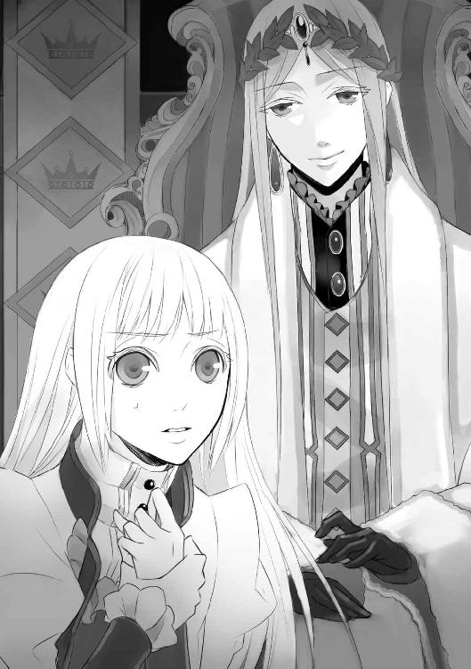
からかうような笑顔に、あっという間に隠してしまったもうひとつの顔。
穏やかで少し気弱な皇帝ではない、リカルドの新たな一面。
それだけではない。マリアが感じ取ったのは、それとはまったく別のものだった。
おそらくそれは、聖オルテッツァ帝国を揺るがすほどの隠された事実――。
マリアは、薄藍の瞳に強い警戒心を宿らせた。
＊
マリアがリカルドに呼び出されたと聞いたとたん、ルクスの目が据わった。
「呼ぶならメルキオーレだろう？ なぜその弟子のマリアを呼び出す必要がある？」
「それが......メルキオーレ殿は宮中にご不在のようで」
「は......っ、帝都一の祓魔師の称号が泣くな」
嘲笑し、苛立ちを紛らすように立ち上がる。たったひとりの従者ジェラルドは、仕事は果たしたとばかりに早々に部屋を立ち去った。
（――あの男、好き勝手しやがって）
ほとんど自由のないルクスには、どうすることもできない。悔しさで、燃えるように胸が熱くなった。不快な熱だ、と思った瞬間、くらりと立ちくらみが襲った。
――自由を奪った人間が、憎いだろう。
おまえだって、好き勝手したいだろう。
女の心は移ろいやすい。せっかく同情で得た信頼も、他の男にそそのかされれば、簡単に失ってしまう。
悔しいだろう。
憎いだろう。
「............くそっ」
悪魔がほくそ笑んでいる光景がまざまざと浮かんだ。
左手の刻印が熱を持つ。
悪魔の力が、じわじわとルクスを侵食する。
それと同時に、ルクスが悪魔から譲り受けた魔力が増大する。
包帯を解き、刻印を晒せ。
おまえの魔力を解き放て！
「――――っ！」
ぱりん、と、音を立ててグラスが割れた。血走った目を素早くそちらに向け、半分溶けたグラスを見るなり片手で頭をおさえた。黒い炎が、視界の隅にちらつく。
時間の問題だ。
悪魔はルクスの負の感情を餌に、確実に成長している。
魔力は増大し、やがて自力で制御できなくなる。
「ルクス様、今の音は......っ!?」
ノックも声かけもなしに飛び込んできたのは、マリアだった。袖口のふんわりしたドレスを身にまとい、また歩きにくそうな靴を履いている。
リカルドに会うのにわざわざ着飾ったのかと思うと、言い知れない怒りがルクスを襲った。
マリアは頬を上気させ、まっすぐに見上げてくる。
「ルクス様――」
ルクスは荒っぽくマリアの腕を引き寄せ、胸下のリボンに手をかけた。
「脱げ」
するりとほどくと、困惑した様子のマリアはそれでも気丈に首を振り、ルクスを見上げた。
「何があったのですか。顔色が優れないようですが」
「いいから脱げ。目障りだ」
「承知しました。すぐに祓魔服に着替えましょう。今のルクス様には、儀式が必要とお見受けします」
硬い口調でそう告げるマリアの目は、自分を見ていない。自分の中の、悪魔を捕らえようとしている。その軽蔑を含んだ眼差しが気に入らず、ルクスはマリアを突き放した。
「必要ない」
それだけを言ってマリアを解放し、自分は寝台の上に腰を下ろした。
「いいえ」
それでも食い下がるマリアに、ルクスは舌打ちした。祓魔師としての自覚をしっかりと持ったマリアには、ルクスを通り越して悪魔しか見えていない。......それが気に入らない。
「ルクス様は、悪魔に惑わされておいでです」
「どうしてそう思う？」
「悪魔の甘言にのせられかけている。――違いますか？」
「決めつけはよせ」
「ルクス様の瞳に悪魔の影がちらついております。人を憎むことを、もしくは何かを恐怖することをそそのかされたのではありませんか」
「俺は何も恐れていない！」
そう答えることでもう片方を肯定してしまったことを、すぐに悔いた。
余裕を失っている証拠だ。
「すぐに儀式を」
ドレスの裾を翻したマリアの腕を、ルクスは素早く立ち上がってつかんだ。意志の強さを窺わせる大きな薄藍の瞳が、まっすぐに射貫いてくる。
「ルクス様？」
「リカルドに何を言われた？」
マリアの言葉を遮り、強い語調で問う。
「......ルクス様の現状を報告せよ、と」
「順調に悪魔を引き剥がしている。そう答えたか？」
「......はい。私は、そう思っておりましたので......」
色素の薄いマリアの瞳が、一瞬だけ揺れる。彼女は、すぐに感じ取ったのだろう。
ルクスの悪魔が、少しも力を失っていないことを。
マリアの儀式はルクスを清め、精神を蝕む抑制をしている。しかしながらそれは、直接的に悪魔の力を衰えさせることにはならない。
悪魔祓いを施さない限り、その儀式は生涯必要となる。
「リカルドに会って、何か気づかなかったか？」
質問を変えると、マリアの頬がわずかにこわばった。
「......いいえ。特には何も」
「リカルドにも、俺と同じように悪魔の影がちらついてたんじゃないか？」
はったりでそう言ってみると、マリアの澄んだ瞳が驚愕に見開かれた。
「ルクス様は、何をご存じなのですか？」
やはりそうか。ルクスはマリアの反応を見て、確信を得た。
彼女はリカルドの秘密に気づいていて、しかし確証もなく現皇帝への疑いを口にできないのだろう。ならば、と、ルクスは思った。
「俺が確証を与えてやる」
「え......？」
「その前にひとつ教えてくれ。おまえの言う〈悪魔の影がちらつく〉とは、具体的にどういうことだ？」
「......具体的には、瞳の表面に、炎のゆらめきのように赤い色がちらつきます。微弱なので、祓魔師にしか見えないものです」
悪魔の瞳は、完全な赤だ。契約する際、ルクスもその姿を見ている。
「悪魔に憑かれた者や、悪魔と契約した悪魔使いが、負の感情を抱いた瞬間にちらつくことが多いのです」
「なるほど」
つまりそれだけでは、悪魔憑きと悪魔使いの判別はできないということか。
ルクスは意を決し、マリアを見据えた。
「今夜は儀式をせず、真夜中に行動する」
儀式を施さなければ、ルクスの魔力が増大するのを止められない。そして真夜中といえば、悪魔の力が最大限に満ちる時間帯だ。
「儀式を......しない？」
ルクスは、マリアの顔に不安が広がるのを見た。
＊
以前、悪魔の力が満ちる真夜中であれば塔から出られるということを教えてくれたのは、マリアだった。悪魔が勝手にマリアと接触したことは面白くないが、その情報には感謝しなければならない。
ルクスは祓魔服に着替えたマリアを連れ出し、手燭片手に宮殿の外へと足を踏み出した。
外の空気は冷たく身に沁みたが、それでも重苦しい塔の空気よりははるかに心地よく、ルクスは何度も大きく息を吸い込んだ。
小さかった手燭の炎は夜の闇の中でときおり勢いを増し、黒い影を潜ませる。魔力が活性化している証拠だ。
「ルクス様、どちらへ......？」
「静かに」
短い言葉で制し、ルクスは月明かりを避けながら、少しずつ歩を進める。先へ先へと進むうちにマリアの足取りが重くなる気配を背中で感じていたが、振り向かずに進んだ。マリアは必ずついてくる。そう思えなければ、そもそも実行に移していない。
「ここは――」
「水鏡宮だ」
オルテッツァの宮殿の離れとして造られた、リカルド個人の屋敷のことだ。
マリアが息を呑むのがわかり、ルクスはくくっと低く笑ってやる。
「安心しろ。リカルドは即位と同時に宮殿にある皇帝の寝室へと移った。ここは、奴が皇子だった頃に使っていた屋敷だ。今は侍女ひとりいない」
今は無人の屋敷。そう聞いてほっとしたのか、空気が緩んだ。マリアの感情ひとつで、周囲の空気が変化する。不思議なものだなと、ルクスはひとり思う。自分の中の特殊な何が、そう感じさせているのだろうか。
「――誰かいるのか」
低く抑えた声が闇夜に響き、ルクスは唇を噛んだ。面倒な奴に会った。
ルクスは出て行こうとするマリアを背後に押しやり、一歩進み出た。
「どうも、陛下の従者殿」
「――っ!? ルクス......皇子殿下」
従者は不吉なものを見るような目でルクスを認めると、さっと背後に何かを隠した。ルクスはにやりと唇に笑みを刻み、するすると左手の包帯をほどく。
「何を隠したのかな？」
「ひっ......」
大声を出される前に、駆け寄って相手の口を右手で塞いだ。ぎりぎりと、尋常でない力が指先に宿るのを感じた。加減しなければ、顎の骨を粉々に砕いてしまいそうだ。
ルクスは彼が隠したそれを取り上げた。それは紙の束で、見覚えのある署名が並んでいた。
リカルドの従者の中でも年若い部類の彼は、恐怖に目に涙を浮かべた。死への恐怖と生への懇願にあふれた視線が、心地よい。
もっと恐怖しろ。
せいぜい命乞いをしろ。
その感情が増すにつれ、快楽に似た感覚が脳内を浸す。魔力の増大を身の内で感じながらも、ルクスは悪魔の感情に引きずられる前にと、左手を相手の額にあてた。
「――これはなんの書類だ？ 正直に話せば、命だけは助けてやる」
ゆっくりと、口を塞いでいた右手を話す。
従者が落とした手燭からは黒い炎が立ち上り、ルクスは魔力が騒いでいるのを知った。刻印が熱を持ち、ざわざわとした気色の悪い感覚に、胸が悪くなる。
「......陛下に頼まれ、枢機卿たちの、署名を」
従者の目は、空虚を見ている。
「なんの書類だ？」
「――処刑の、許可を」
その言葉を聞き、ルクスは顔を引きつらせた。
やはりな。
胸がすっと冷えるのを感じ、ルクスは突き放すように従者から手を離した。ぺたんと尻もちをついて意識を失いかけている従者に、吐き捨てるように言葉を放る。
「このことは黙っていろ」
怯えながらこくこくうなずくのを確認して、ルクスは再び歩き出した。背後から、マリアの駆け足のような足音が追ってくる。
「ルクス様、処刑とはなんのことですか」
「さあな」
「なぜ聞き出さなかったのです？」
その疑問に答える気はなかった。
ルクスは足を止め、マリアを振り返った。
「俺に悪魔になれと？ ――祓魔師殿」
挑発するように笑ってやると、マリアはきゅっと唇を引き結んだ。頬を紅潮させ、睨むようにしてルクスを見上げる。
「ルクス様、お気をつけくださいませ。悪魔に真にのっとられる前兆が出ております」
「具体的に、何？」
「......悪魔のような形相に、おなりでした」
怒りを滲ませた声で告げられ、ルクスは思わず笑った。
「笑い事ではございません......！」
声を潜めるために顔を近づけられ、触れたくなるのを我慢して一歩退く。そして、心のままに言ってやった。
「可愛いなと思って」
「な......っ」
言葉を失うマリアに背を向け、ルクスは先へと進んだ。
今言ったことは嘘ではない。
もしこの手が触れることを許されていたら、ルクスを本気で案じるマリアの頬を撫で、口づけていたかもしれない。
ルクスは屋敷の裏口に辿り着くと、一度深呼吸をした。
ここから先は、何を目にしても驚いてはいけない。
包帯を解いたままの左手で取っ手をつかみ、意識を集中させる。魔力を使うのは今夜が初めてだが、不思議と使い方は知っていた。それが悪魔使いというものなのだろう。
マリアの持つ手燭の炎に黒色が混じり、少ししてがちゃりと錠の外れる重い音がした。ルクスは躊躇いが生まれる前にと、思い切って扉を開く。すべり込むと、マリアもすぐに続いてきた。
最近まで使われていた屋敷には、まだ人のぬくもりが残っている気がした。
中央の大階段の脇に、仰々しい彫刻が並んでいる。大聖堂などに見られる聖人像などではなく、腕のない女性や翼のもがれた天使といった、反宗教的な像だった。それらの虚ろな目に見られている気がして気分が悪くなったが、無視して突き進むことにする。
「――ルクス様。嫌な臭いがします」
きゅっとマントの端をつかまれ、苦笑した。
「俺にはわからない。つまり、そういう臭いなんだろう」
「では、リカルド様は以前から......？」
「マリア、臭いのする方向を探れ。案内しろ」
「私は犬じゃありません」
むっとした顔をしながらも、マリアは恐れることなくルクスの前を歩き出した。
「見つけても、むやみに扉を開けるなよ」
「大丈夫です。私は祓魔師ですから」
まったく、可愛げのない。
だが、マリアが職業意識を強くしているということは、その臭いは悪魔のものなのだろう。
「ルクス様、こちらです」
ひとつの部屋の前で振り返ったマリアの顔は、深刻だった。
「よし、入ろう」
「はい」
鍵を破って侵入すると、鼻を利かせたマリアが書棚の前に立つ。
「......ここから、強い気を感じます。悪魔とも、少し違うような......」
「離れてろ」
マリアを押しのけ、ルクスは力ずくで書棚を倒した。人間離れした怪力にも、もう二人のどちらも驚かない。
ただ、書棚の向こうに現れた光景には、二人ともそろって息を呑んだ。
「......ルクス、様」
「これはこれは悪趣味な」
そこは窓のない暗がりで、不気味な物が陳列されていた。
整然と並べられた溶けかけの蝋燭、黒表紙の書物の山、双頭を持つ怪鳥の像、絨毯に描かれた幾何学的な模様、黒ずんだ染みの広がる壁......その染みは、おそらくは血痕だろう。
これは確実に、呪術部屋だ。
しかし、描かれた模様はルクスの母親が描いた悪魔召喚用の魔法陣とは異なっている。
「この、部屋は......」
マリアの声は、めずらしく今にも泣き出しそうだった。
「わかってる。言わなくていい」
祓魔師といえど、彼女はまだ経験が浅い。こんなものには縁がなかっただろう。
「この部屋には......魔界への扉が生じた跡があります！」
その声は、ほとんど叫び声に近かった。
祓魔師であるマリアは肌でその気配を感じ取ってしまうのか、顔を蒼白にさせ、がたがたと身を震わせ始めた。
「マリア――」
「なんて禍々しい......っ、人の身でなんて恐ろしい真似を......！」
信じられないという表情で、首を振り続ける。それを見て、ルクスの胸が痛んだ。
「すまないことをした。......マリア、おまえを連れてくるのは間違ってた」
「いいえ！ これは祓魔師として許しがたい事態です。誰が、こんな......」
「だから、リカルドだ」
あっさりそう告げると、マリアは目を丸くした。
「ご存じ......だったんですか？」
「ああ。俺は一度、ここに連れてこられたことがある。これを見て、確信を得た」
この光景には、見覚えがある。その時はわからなかったが、やはりここはリカルドの屋敷内だったのだ。この魔法陣から天井を貫きそうに大きな扉が現れ、重い音を立てて、ルクスを招くように開いたのだ――。
「連れてこられて、それで......？」
「魔界へ堕とされた」
そう告げる時、マリアの目を見られなかった。
どさりと音がして、見るとマリアが床にへたり込んでいた。
「あ......申し訳ございません。腰に力が入らなくなって......」
「大丈夫か？」
手を差し出そうとして、慌てて引っ込める。しかし懸命に立ち上がろうとする姿を見れば放っておけず、片膝をついて腰に手をまわした。
「俺の肩に手を。遠慮するな」
「はい。申し訳――」
「謝るのもなし」
足に力を入れ、立ち上がらせてやる。
「ありがとうございます」
「それでいい」
笑ってやると、マリアはふいに瞳を潤ませた。
「......魔界へ堕とされたというのは、事実なのですか？」
「事実だ。その証が、これだ」
そう言って、左手の刻印を見せてやる。
先天性の悪魔使いはいない。なんらかの形で悪魔と関わり合った者の一部が、てのひらに痣を残すのだ。悪魔がなぜそのようなことをするのか、悪魔のいたずらと言われることもあるが、理由は誰にもわからない。
ルクスは幼い頃、宮殿内で何者かに連れ去られ、魔界へ堕とされた。しかしその時の記憶はなく、恐怖心と、戻ってきた時に見たこの部屋の光景しか憶えていない。
それからまた意識を失い、気がつくと自分の部屋の寝台で眠っていた。記憶はないのに、魔界へ堕とされたということだけははっきりと自覚があった。悪魔との関わりは、説明のできないことが多いのだ。
「とにかく恐ろしい思いをした。それしか憶えていない」
刻印を得たルクスだったが、悪魔と契約し、その魔力を我がものにしようなどという気は一切起こらなかった。結果として母を救うことができたと思えば、良かったと思うしかない。
「陛下はなぜ、そんなことを？」
両手で服の下のロザリオを握りしめたマリアに問われ、ルクスは冷たく笑った。
「邪魔だったんだろう。前皇帝に気に入られてた、俺が」
「それは、次代の皇帝の座を狙う者として？」
「そうだろうな。リカルドは、ものごころついた時から皇帝の座を欲していた」
マリアは眉をひそめた。すんなり受け入れられないのだろう。
無理もない。リカルドは、自分など皇帝の器じゃないと気弱そうに言う男だ。そうやって周囲を欺き、裏では呪術にのめり込んだ。
「魔界への扉を呪術にて召喚し開くのは、悪魔使いにしかできないことです」
「そうだな」
あっさりとうなずくルクスに、マリアはまた驚いたようだった。
「お気づきだったのですか？ 陛下が、悪魔憑きではなく、悪魔使いだということを？」
それは肯定も否定も難しい質問だ。
ルクスはゆらりと頭をめぐらせたあと、言葉を探しながら言った。
「子ども心に、リカルドは俺を疎ましく思っているんじゃないかと感じていた。だから、俺を魔界へ墜としたのは奴じゃないかとなんとなく思っていた。そしてある時ふいに気がついた。リカルドは、常に手袋をしている」
マリアがはっとしたように口を開けた。
「思い当たる節があるだろう？ たとえば、婚約者に扮したおまえが招かれた晩餐会。食事の場でも、リカルドは手袋をはずさなかったはずだ」
思い出したのか、マリアは顔をこわばらせながらもはっきりとうなずいた。
「それで思った。奴も、俺と同じ悪魔使いなんじゃないかと」
悪魔使いになるきっかけなど、誰にでも訪れる可能性がある。ルクスのように魔界へ堕とされなくても、悪魔の起こすほんの些細な気まぐれによって刻印が与えられたりする。
「父上が暗殺されたあと、リカルドは俺が悪魔と契約したことを知った。俺が力をつけたことを恐れたリカルドは、対抗するように自らも悪魔を召喚し、契約した」
それまでひとりで抱えてきた憶測を口に出してみると、ルクスにはそれが真実だと思えた。
魔界へ堕とされたのは、十歳の頃。リカルドは当時十七歳。年の離れた兄が疎ましく思うほど、少年だったルクスは聡明、かつ大人との試合で勝利するほど活発だった。そして何より、父皇帝に愛されていた。
今も昔も、リカルドはルクスを妬み続けている。
「忌まわしい部屋だ」
ルクスは重い空気の漂うその部屋を見渡した。魔界に堕とされた時に植え付けられた恐怖心だけは、今も微かに残っている。
「人間界に許される気ではありません」
マリアはきっぱりと言った。やや顔色が悪いところを見ると、祓魔師としての彼女は悪魔の気配に敏感すぎて、その気とやらにあてられるのかもしれない。
「マリア、頼みがあるんだ」
「なんなりと」
薄蒼の瞳が、揺らぎなく自分を見る。
「結界を張ってほしい。俺の魔力が、この部屋の外へ及ばないように」
この部屋の存在を明るみに出したところで、リカルドは知らないと言い張るだろう。この禍々しい空気は、ルクスのような悪魔使いや、マリアのような祓魔師にしか感じられないだろうし、魔界への扉を召喚したという証拠にはならない。
証拠にならないのなら、滅してしまいたい。そう思ってマリアを見やると、彼女の頬がぴくりと動いた。
「......確認ですが、ルクス様。それは悪魔と契約した際の〈願い〉ではございませんね？」
どこか緊張した面持ちで尋ねられ、ルクスは首を振った。
「〈願い〉ではない。単なる鬱憤晴らしだ」
悪魔の力を借りて契約時の〈願い〉を叶えるような真似をすれば、即刻この魂は悪魔に食われてしまう。
そうでなくても、悪魔は何かと難癖をつけて契約成立、もしくは逆に契約不履行を言い張り、魂を持っていこうとするのだ。マリアが慎重になるのは理解できた。
そのあたりを素早く検討したのだろう。やがてマリアははっきりとうなずいた。
「かしこまりました。けれど私の力では、もって半刻――」
「じゅうぶんだ」
時間など要さない。この左手は、解放の刻を狙って魔力を増大させている。
「すぐに準備いたします」
そう言って、マリアは背にしていた荷物から聖水の入った瓶を取り出し、部屋の四隅と中央に振りまいた。そして、床の模様が描かれていない箇所に両膝をつく。
「――主よ、聖ルクレツィアよ。この禍々しい気をお感じください」
ロザリオを握る手が、心なしか震えている。
「......悪魔の力を抱く者に手を貸すことを、お許しくださいますか......？」
ふわりと、マリアの色素の薄い髪が舞った。窓のない部屋に吹く風のようなそれは、まるで彼女を護ろうとするかのように見えた。
マリアは祓魔師だ。それも、聖職者の血筋の。
職業意識の高い彼女に身の上を語り強引に協力させる自分は、もしかしたら心まで悪魔の侵食を許してしまったのかもしれない。
......否。もともとの自分も、決して善人ではなかった。
「神の御名に誓い、我は邪なるものに心を渡しは致しません」
マリアが眩しく映るのは、自分の目が穢れているからだけではないだろう。
彼女は――。
「我に力をお与えください......っ！」
マリアの声が高くなると、彼女を覆う風は勢いを増した。
清純な気は部屋を飛び出し、屋敷中を駆けめぐる。見えないが、そう感じた。
それまでも静かだったが、今や完全に無音となったのを、マリアの澄んだ声が証明した。
「結界を張りました」
まるで四方から話しかけられているかのように聞こえ、どきりとする。これが結界か。
「マリア、外に出ていろ」
刻印はすでに相当な熱を持っていた。力を解放したい悪魔と、この部屋を灰にしたい自分とが、共鳴を起こしているようだ。
「私なら大丈夫です。聖なる力に護られています」
「......わかった。ならせめて、俺から離れるな」
命令口調で告げると、マリアは立ち上がり、ルクスの隣へ並ぼうとした。隣でもどこか不安を感じたルクスが、安全な右腕でマリアを引き寄せ、胸に抱く。
「ルクス様っ」
「おまえの髪が燃えるところを見たくはない」
そう言い訳して、身を捩るマリアを強く抱く。聖なる力とやらは、悪魔憑きであるルクスにちりちりと小さな痛みを与えたが、そんなものはどうでもよかった。
左手を掲げ、ただ解放を願った。
「............放て！」
ごうっと、音を立てて空気の渦が生まれる。腕の中のマリアが小さく悲鳴を上げた。
ルクスの左手からは漆黒と赤が入り混じった炎が生まれ、獲物を探すかのようにゆらりと不気味に蠢く。ルクスがさらに意識を集中させると、炎は風ともうなり声ともとれる轟音を反響させながら部屋中を駆けめぐった。
そして狙いを定めた炎がまずは模様の描かれた絨毯を食い尽くし、壁へと這い上がり、あっという間に部屋を呑み込んでいく。無数の蝋燭を溶かし尽くし書物を焼き尽くしたあとも、悦んでいるように炎は部屋中を蹂躙し続けた。
ルクスは熱を感じてはいなかったが、マリアの呼吸はわずかに荒くなっていた。
「マリア、苦しいか？」
「いえ、大丈夫、です......」
「悪いな、こんなことに協力させて」
獣のように暴れる炎は、物足りないのか、部屋中を灰にしてもまだ消える様子はない。契約をしてから初めて解放された力にはまだ勢いがあり、そこには悪魔の意志を感じた。
このままではマリアの身がもたない。
炎から目を離さないようにして部屋から一歩出ると、マリアは大きく息を吐き出した。そして、ルクスの胸にしがみついたまま顔を上げる。
「これは私の意志です。私が、ルクス様の一番の味方になります」
熱さのせいだろう、マリアの白かったはずの頬は今や真っ赤だった。触れて、この両手で冷ましてあげられたらと思うのに、それは許されない。
「師匠はいいのか？」
今までろくに思い出しもしなかったのに、気づけばメルキオーレの名前を出していた。今さらすぎて、姑息な自分に嫌気がさす。
「私がお救いしたいのは、ルクス様です。一緒に真実を暴き、ルクス様には自由になっていただきたいのです」
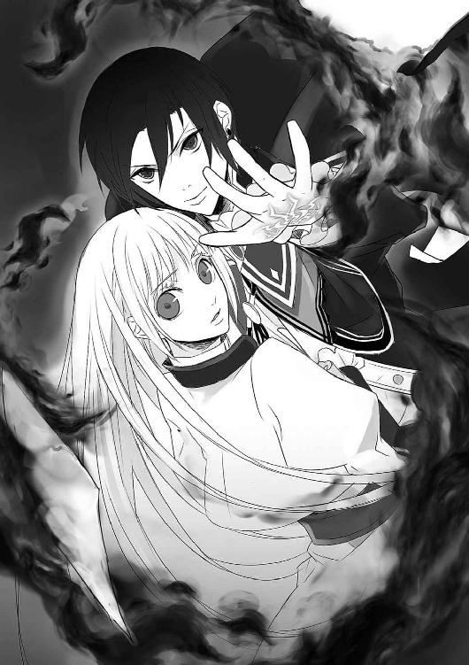
マリアはそう言ってから、瞳を潤ませる。邪悪な気のせいか、炎の熱のせいなのか。
「出過ぎたことかもしれませんが、どうか拒まないでください」
震える声で懇願され、ルクスの胸が詰まった。
マリアの想いは、祓魔師としての職業意識、または悪魔への嫌悪からなのか。
不遇な過去への憐れみなのか。
それとも他の別の......。
ふいに胸に込み上げる温かな感情を自覚し、ルクスは顔を覆った。
――何を期待しているのだろう。
マリアの言葉のどこにも、嘘はない。その想いの出所など、どこでもいいはずだ。
忌まわしいリカルドの呪術部屋を灰にするのに協力してくれた。その事実だけでは、なぜ物足りないのか。
なぜこんなにも、マリアの言葉の裏にある感情の色を知りたいと思うのか。
それはすでに、ルクスがマリアを祓魔師として見ていないことを意味している。
いつからだろう。
いつから俺は、自分を見つめるその清純な瞳に、義務や同情以外のものを求めるようになっていたのだろう。
そんな甘い感情、自分には無縁だと思っていた。
「......ルクス様？」
塔の監禁部屋に戻ってくるなり寝台に腰かけ、そのまま動けなくなっていると、マリアに声をかけられた。
顔を覆う手を下ろし、ゆっくりと顔を上げる。
それだけの動作がやけに億劫だった。指の一本すらも重く感じられる。
「――マリア」
名を紡ぐのが、やっとだった。
「はい、ルクス様。私はここにおります」
すでに包帯の巻かれた手を、マリアの両手が包み込む。これから浄化の儀式を施そうとしていたのだろう、両手には手袋がはめられていた。
この絹一枚が、いつもルクスに理性を取り戻させる。
どんなに愛しく思っても、マリアは人を平等に愛する祓魔師で、ルクスは忌まわしい魔力を持った悪魔使いで、その事実は変わらない。
それ以上を望むのは、やはり罪なのか。
「ルクス様？ ルクス様......っ！」
マリアの顔が、悲痛に歪む。
教えてくれ、マリア。
なぜおまえは俺に、そんなに悲しい顔を見せるんだ。
胸に湧いた疑問に切なさを覚えた次の瞬間、ルクスは意識を手放した。
目の前で、ルクスの身体がふらりと傾ぎ、寝台に倒れ込んだ。
「ルクス様！」
額に触れると、手袋越しでもひどい熱だとわかった。
初めてであれだけの魔力を解放したのだ。身体に無理が祟ったに違いない。
マリアはロザリオを痛いほど握りしめ、深呼吸をくり返した。
落ち着いて。今必要な対処を考えないと。
マリアは部屋を飛び出し、塔の地下から水を汲んできた。銀盥に水を浸し、そこに聖水を一滴、月桂樹の葉を一枚落とす。いくつもの波紋が広がりを見せる中心に葉が沈んだのを確認し、マリアは手袋を外して布に水を染み込ませた。
その布を、ルクスの肌に触れないように、おそるおそる額にのせる。
「う......っ」
聖水が不快なのだろう。うめき、ルクスは歯を食いしばって身を捩る。浮かせた手を握ってあげようとして、慌てて身を離す。
なんて不自由な関係なのだろう。
せっかく信用されていると感じ始めていたのに、手を触れ合わせて励ますこともできない。
「ルクス様、耐えてください」
強引にでも、儀式を施すしかない。ルクスを清めることで、この苦しみから救えるはずだ。
マリアは聖水盆を自らの両脇に置き、聖典を開きロザリオを唇にあてた。聖なる気をすべて、この身に含ませるために。
盆の中の聖水が波打ち、浄化された気がマリアの身の内に入り込むのを感じた。
「......主よ、我が清純のすべてを、かの者に与えることをお許しください」
ふわりと、目に見える光がマリアを包み込む。
ロザリオを唇から離し、ルクスの口元に薄い絹布をあてた。そしてマリアは躊躇いなく、その上から唇を重ねる。ふぅっと息を吹き込むと、抵抗するように魔の気が立ち上ってきた。怖気のするその冷たい気は、みるみるうちにマリアの全身を覆う。
「......はぁっ」
あまりの息苦しさに身体を起こし、急激に呼吸をしたせいで魔の気を吸い込んでしまった。
苦しさに目に涙を滲ませながら、聖水盆に浸した月桂樹を口に含む。
ここまでくると、儀式の手順も何もなかった。魔の気との闘いだ。
リカルドに雇われているメルキオーレには頼れない。その思いがあるせいか、マリアは未熟者なりに冷静でいられた。ルクスをこの苦しみから解放できるのは、自分だけなのだ。
邪悪な気を吸い込んでしまったせいで、ひどく胸が悪くなった。手足にびりびりと痺れが走る。それに耐え、マリアは聖典の文句を唱え続けた。
「マリア......？」
自分の声の隙間にルクスの声をとらえ、マリアは身体ごと寝台に向いた。起き上がる力はないのか、覇気のない顔でマリアを見ている。
「ルクス様、どこか痛むところはありませんか？ 苦しくはないですか？」
「......おまえ、顔色が悪いぞ？」
「私は大丈夫です」
「俺も問題ない。ただ、身体がひどく重い......」
あれだけの魔力を解放したのだから、当然だろう。
「マリア......その後、何か動きはあったか？」
「陛下の側近の方が屋敷に駆けていくのが見えました。ですが、宮廷では騒ぎにはなっておりません」
自分ではできうる限りの強力な結界を張ったつもりだった。それを察知されたとなると、自分の力がそれだけ未熟だということか、もしくは相手の力が――聖なるものでも悪なるものでも――マリアに勝っているということか。
ルクスはふっと笑った。
「皇帝が悪魔使いで呪術部屋を所有しているなど、廷臣はおろか教会に知られでもしたら、事だからな」
公にはならないとわかっていて、ルクスはあの部屋を灰にしたのだろう。
「ですが、あれがルクス様の仕業だと陛下がお察しになるのは、時間の問題ではないでしょうか？」
「もう気づいているだろう。つまり、俺は奴に喧嘩を吹っかけたようなもんだ」
淡々とルクスは言うが、マリアは青くなった。
「これ以上ご自分の立場を悪くして、どうするんですか！」
「これ以上、悪くなりようがない」
「監禁のことですか？」
そう問うと、ルクスはあやふやに笑った。ごまかしたのだ。
監禁より悪いことなど、そうあることではない......そう思って考えをめぐらせ、マリアははっとした。
思い出したのだ。リカルドの従者の言葉を。
『――処刑の準備です』
あの時、マリアは不思議に思ったのだ。
ルクスはなぜ、誰の処刑かを尋ねなかったのか、と。
――まさか。
思い当たったことがあまりにも衝撃的すぎて、マリアは自分が床の上にへたり込んだことに気づかなかった。寝台の縁にぎゅうっとしがみつくようにして震えを押し殺していると、ルクスの声が降ってきた。
「わかっただろう？」
半身を起こしたルクスが、気怠げに髪をかき上げながら言った。
その声は、今まで聞いた彼のどの声よりも冷たく、抑揚がなかった。
「何を......ですか？」
いまだわからないふりをしてみたが、甘えは許されなかった。
「リカルドが処刑しようとしているのは、俺だ」
痛みを隠した冷たい声は、容赦なくマリアへと届けられる。
マリアは首を振った。
わからない。わかりたくない。
「リカルドにとって、俺は目障りな弟だった。魔界へ堕としてみたが、しぶとくもこの世に舞い戻ってきてしまった。しかしそれからしばらくの間、俺は怯えて室内に閉じこもる日が続いた。ちょうどその頃、正妃エヴァが力を持ち始め、心の病になった母上が帝国の中心部から追い出され、皇帝はその息子である俺を可愛がることをやめた」
まるで他人事のように、ルクスは淡々と話す。
「もはや敵ではなくなった俺を、リカルドは意識の片隅にも置かなくなった。状況が一変する、その日までは」
再びリカルドがルクスに注目した理由――それは、ルクスが悪魔と契約をしたという事実だ。
「リカルドは恐れた。強大な魔力を手にした俺が、次代皇帝の座をその力でもって奪おうとしているのではないかと」
「そんなことが......っ」
マリアは思わず口を挟んだ。
「単なる思い込みで肉親を処刑するなんて、考えられません！」
「思い込み――そう、単なる妄執だ。教皇ミハエル二世が病に臥し、戴冠式が延期になっているのも、俺の仕業だと思い込んでいる。その証拠に、メルキオーレに教皇の部屋に結界を張らせたらしい。悪魔に狙われないように」
「そんな......！」
ルクスが教皇の病に関与しているはずがない。リカルドが勝手に、ルクスが毒を盛ったか魔力で呪ったかしたと思い込んでいるということか。
そんなことを淡々と話すルクスが、マリアには信じられなかった。
しかしすぐにあることに気づき、血の気を失った唇を震わせる。
「......妄執は、悪魔の侵食が進んでいる証のひとつです。実際にはないことを悪魔に吹き込まれ、負の感情をふくらませる......」
そうしてその負の感情を餌に、悪魔はさらなる成長を遂げるのだ。
妄執による憎しみが処刑にまで飛躍していることを鑑みると、悪魔の影響としか思えない。
でも、と、マリアはさらなる疑念に駆られた。
それが事実なら、メルキオーレはそのことに気づいているはずだ。祓魔師である師匠が、悪魔に惑わされ道を踏み外しているリカルドを諭さないはずがない......。
メルキオーレの心がわからない。
どうしようもなく、マリアは置いて行かれたような気分に陥った。
ルクスは続ける。
「とにかくリカルドは、俺を処刑するという結論に至った。しかし、俺が悪魔と契約している状態でそれを実行しようとすれば、返り討ちにされるかもしれないと考える」
ルクスは左手を強く握り込み、その拳を口元にあてた。怒りを静めるように。
マリアは息を吸い込んでから、抑えた声でルクスの後を引き継いだ。
「だから悪魔祓いを師匠に依頼し、塔に監禁した......？」
処刑を前提に。
マリアは表情を消したルクスを見つめた。
「ですが、たとえ皇帝の権力を振りかざしたとしても、弟であり皇子である者を簡単に処刑できるわけがありません」
そう言ってみても、ルクスの深い紫色の瞳はちらりとも揺れなかった。
ただ、冷ややかな声が返ってきた。
「だから言っただろう？ この国では、邪魔な者にあらぬ罪を着せ、処刑することなど日常茶飯事だと」
確かに、それと似たようなことを以前ルクスが口にしていたのを思い出した。あらぬ罪を着せ、皇子を投獄するなど、よくある話だと。
その頃から、ルクスは気づいていたのだ。
悪魔祓い完了は、処刑の合図だと。
マリアは嫌な予感がして、顔を上げた。
「あらぬ罪、とは......？」
震える声で訊いてみると、ルクスはわずかにあごを持ち上げ、笑顔を浮かべて言った。
「皇帝暗殺」
ああ、と、マリアは思った。
ここへ来てから明るみになることのすべてが、ルクスを闇へと堕とすものなのだ。
「では、真の暗殺者は」
続きを口に出すのは憚られた。けれど、ルクスがあっさりとその名を口にした。
「俺はリカルドを疑ってる。だから、しらじらしく葬送演説をするリカルドを許せなくて、聞いていられなかった。――だが、確証はない。たまたま時期が重なって起きた事件の犯人を俺に仕立て上げようとしているのかもしれない」
不遇の皇子が証拠もなく「暗殺者はリカルドだ」と叫ぼうものなら、それこそその場で処刑されかねない。
「どうして、おっしゃってくださらなかったのですか」
問いかけるマリアの声に、痛みが滲む。
ルクスの表情もまた、痛みに耐えているかのようだった。何かを振り払うように首を振り、マリアに背を向ける。
「言ってどうなる？ おまえは、悪魔祓いをしに来たんだろう？」
マリアは祓魔師で、メルキオーレの弟子だ。
マリアが直接悪魔を祓うわけではないが、毎晩、ルクスを清め、彼から悪魔を引き剥がす儀式を施している。目的は悪魔祓いにあるのだから、同じことだ。
「それでも、私は知りたかったです。私のしていることが、ルクス様をお救いすることにならないのだとしたら、私は――」
「儀式をやめるか？」
すかさず問われ、マリアはすくみ上がった。
儀式をやめれば、悪魔はルクスの精神を侵食し、やがては魂を食ってしまう。
けれど儀式をくり返すことによりルクスの魔力は抑えられ、悪魔は剥がれやすくなる。それはすなわち、処刑の日を近づけるということだ。
マリアはルクスの背中に告げた。
「やめるわけにはいきません。ですが、処刑はさせません」
おまえに何ができる――そう問われれば、返す言葉はない。
それがわかっているからか、ルクスは何も言わなかった。
静けさが落ち、ぽちゃん、と、月桂樹が沈む水が波打ち音を立てる。
「俺は、自分のためにも、そして父上のためにも、父上を殺害した者を見つけたいと思う」
「......はい」
それしか、ルクスが救われる道はない。
「もし、真犯人が見つからなくて、俺が暗殺に関わっていないと証明できなければ、その時は」
言葉を切ったルクスが、マリアに向き直った。
「......処刑される前に、おまえの手で殺してくれ」
「え――」
切なげな瞳に見つめられ、マリアは息を呑んだ。
冗談だ、と言いたげにルクスは笑ったが、口に出してそうは言わなかった。
ルクスの笑顔がやけに悲しくて、マリアはむきになってそれを否定した。
「その時には、全身全霊を賭して悪魔祓いを阻止します」
祓魔師として何が正しいのか、もうわからなかった。ただ、それ以外の本心が見つけられなかった。
「マリア、ひとつ訊いていいか？」
ルクスが寝台を軋ませ、マリアに手をのばした。肩をつかんで引き寄せられ、マリアは寝台に身を乗り出すような姿勢になる。
「はい」
ルクスの熱っぽく潤む瞳に見つめられ、マリアは落ち着かなかった。縋るような、そんな視線でルクスは口を開く。
「今の台詞は、祓魔師としてか？ それとも......たとえば、婚約者という役回りからか？」
「祓魔師か、婚約者か......？」
もちろん、本物の婚約者ではない。どちらもぴんと来ず、マリアは困惑しつつも正直に首を振った。
「どちらでもありません」
「だったらそれは」
言いかけて、ルクスは言葉を呑み込んだようだった。躊躇いが瞳の揺らぎに、寄せられた眉根に表れる。
「......なんでもない。おまえは、万人を等しく愛するんだったな」
絞り出すようにそう言って、ルクスは顔をそむけながらも、手は離さなかった。
しがみつくようにつかまれた肩に、全神経が集中するようだった。指一本一本の感触に敏感になり、マリアの鼓動は速くなる。
「ルクス様」
――違う。ルクスの言葉は、今のマリアにはそぐわない。
目の前にいるこの人のために、祈りたい。
自分がどうなってもかまわないから、この人を救ってあげたい。
なんの不安も恐れも悲しみもない、曇りのない笑顔を見たい。
「どうした？」
ふいに微笑まれ、マリアは胸が詰まって泣きそうになった。
――私は、この人を愛してる。
空から降ってくるみたいに、突然そうわかった。
万人を等しく愛す――そんなことは、ルクスと出会ってしまったマリアには不可能なことだった。ルクスにだけは幸せになってほしい。そんなふうに考えてしまう。
ルクスを助けたい。たとえそれが、神に背く行為であっても。
「お願いです、ルクス様。......生きてください」
震える声で告げると、ルクスの顔が切なげに歪んだ。
「マリア......」
肩をつかむルクスの手が、背中をすべって反対側の肩を抱く。強い力で寝台の上に引き上げられ、気づいた時には仰向けに転がされていた。
「俺は、おまえに生かされる運命なのかもしれない。......そう思ってもいいか？」
寝台が軋み、ルクスの影がマリアの上に落ちた。
「......生きてください」
くり返すことしかできなかった。ルクスの指が髪に触れ、肩をすべる。
「生きよう。おまえがそれを望むのなら」
マリアの肩に、脚の間に、ルクスの体重がかかる。
頭のどこかでは、いけない、と警告していた。これ以上接近してしまえば、きっと戻れなくなる。けれど抗うには、マリアの胸は愛しさで満たされてしまっていた。
ゆっくりと、顔が近づいてくる。唇が触れ合う前に、ルクスはふっと笑った。
吐息が唇にかかり、マリアはそれだけで胸が苦しくなった。
「マリア」
至近距離で名前を囁かれ、マリアの頬が紅潮する。
二人は、触れ合うことが許されない。ルクスの悪魔が、それを阻む限り。
「悪魔祓いが済んだら、せめて処刑される前にこの続きをしたいな」
ルクスは儚げに笑って、マリアから身体を離した。
熱が、遠のいていく。
ルクスが背を向けているうちにと、マリアは一粒だけ涙をこぼし、すぐに拭った。
＊
翌日、マリアは繻子のドレスに身を包み、宮中を駆け抜けた。
すれ違う侍女たちが、ぎょっとした顔で見送るのを、マリアは見なかったことにする。裾をまくり上げ、足首をあらわにして駆け抜けるのがどれだけ行儀が悪いのかを察することはマリアにもできたが、それも承知の上だった。
回廊を走り回り、厨房や庭など片っ端から見て回る。さすがに扉の閉まった部屋を開けることはできないし、衛兵の立ち塞がる場所から先へは進めない。
誰かの手を借りなければ......そう思ったところで、劈くような声が回廊に響いた。
「マリアさん!?」
振り返ると、そこには両手で口元を覆ったビアンカがいた。
マリアはほっとした。皇女であるビアンカに頼むことができれば、叶うかもしれない。
そう思って一歩踏み出した瞬間、ビアンカが後ずさった。
「いったいどうなさったの？」
「実は私、師......ルクス様の家庭教師のメルキオーレという者を捜しておりまして――」
「ひどい格好だわ」
「え？」
マリアは自分のドレスを見た。走っただけなのに、裾にあしらわれていた刺繍がほつれていた。丈夫な祓魔服とは作りが違うらしい。乱れた髪を手櫛で直し、汗ばんだ胸元を押さえる。
「お見苦しいところをお見せしてしまい、申し訳ございません」
「着替えていらっしゃいな。そうね、一度湯で拭いてもらうといいわ」
あからさまな嫌悪を顔にのせるビアンカに、マリアは首を振った。今はメルキオーレに会うことが第一だ。
「それはあとで大丈夫ですので......あの、殿下からのお口添えをいただけないでしょうか？ もしかしたら、その者は陛下とご一緒かもしれなくて――」
「陛下にお目通りを求めるの？ その格好で？」
信じられないというふうに目を丸くしたビアンカは、嘆くように首を振った。
「......なんてことなのかしら。あのソフィアでも、ここまではしなかったわ」
「ソフィア？」
マリアが眉をひそめると、鏡のようにビアンカも眉をひそめた。
「ルクスお兄様の前の婚約者よ。物怖じしない大胆なところや、乗馬もなさる活発な方だったわ。けれど、無謀でも無礼でもなかった」
「わ、私は......」
皇族でも貴族でもない。ルクスの本物の婚約者でもない。
できることは、ルクスを清めること。華やかな世界にふさわしいかどうかなんて、関係ない。
今はメルキオーレを見つけ出し、ルクスを救うために必要な知識を聞き出すことが最優先で、それに協力する意思のないビアンカとこれ以上話している時間はない。
頭の中でそう結論を出したのに、マリアはその場から動けなくなっていた。
（――......痛い）
引き裂くような胸の痛みが、マリアの足を止めていた。傷ついて立ち止まっている場合じゃない。そうわかっているのに、動けなかった。
「そうね、体型はとてもよく似ているわ。ドレスを直さなくても、ぴったりのようだもの」
ビアンカはそう言って、マリアのドレスを指さした。
「このドレスが、何か......？」
「あなたが着ている喪服以外のドレスは、すべてルクスお兄様がソフィアのために仕立てさせたものよ」
それを聞いて、マリアはあることを思い出した。
初めてルクスに会った日、彼はマリアの肩に触れ、体つきを眺め、これならうってつけだと言った。その判断基準は、マリアの祓魔師としての素質ともまったく関係のないこと――ソフィアのドレスが着られるかどうか、だったのか。
ソフィアの代わりになるかどうか――それだけで良かったのだ。
「今でも不思議だわ。お兄様、なぜソフィアとの婚約を解消したのかしら。あんなに仲が良かったのに」
もうそれは、マリアへの侮辱でしかなかった。
ビアンカは、実際にソフィアとの婚約にもの申したいわけではないだろう。
マリアに、いかにルクスにふさわしくないのかを説きたいのだ。
「......ですが、その婚約はルクス様のご意志ではなかったと伺いました」
何を張り合っているのだろう。
マリアはそんな自分に戸惑った。こんな言い合いをしている場合ではないのに。
「それは嘘よ」
ビアンカが語調を強めた。
「お兄様は、ソフィアを選んだのよ。好きだったから」
選んだ――。
それがとどめだった。
青ざめたマリアに気づいたビアンカが、慌てて言い繕う。
「わ、悪く思わないでね。わたくしはあなたの知らない過去を教えてあげ......きゃっ」
落ち着きなくいじっていた髪から、リボンが切れて落ちた。
「やだ、これから庭園の観賞会があるのに......っ。一度部屋に戻るわ」
「殿下、もうお時間が......」
侍女が慌てるのを見て、マリアは躊躇いもなく自分の胸元のリボンをほどき、ビアンカに差し出した。
「マリアさん？」
「......私には、似合いませんので」
リボンがなければ多少胸元は緩んでしまうが、困るほどではない。
侍女は、後ほど衣装部屋に戻しておきますと言って受け取り、ビアンカは何か言いたげな顔をしていた。
けれどその口が開く前にマリアは身を翻し、ビアンカに背を向け走り出した。
「わたくしは謝りませんわよ......っ」
背中に届く声を封じるように、両耳をふさぐ。
こんな格好で走るのははしたないことだ。そう思いながらも、足を止めることはできなかった。これ以上、ビアンカの口から知りたくないことを聞きたくなかった。
（逃げた――）
あまりの惨めさに、頬が熱くなる。
「あなた、どうしたの？」
すれ違いざま声をかけられ、マリアは慌てて振り返った。
皇太后エヴァ。潤んだ視界に遮られ、気づかなかった。
「あ、あの、失礼を――」
「いいわ。何かあったの？」
怪訝そうに眉を寄せる侍女たちの前で、エヴァの表情は深刻だった。
リカルドの母であるエヴァは、マリアの正体を知っている。走ってはいけないと窘めるより先に、乱れた有様で駆けるマリアを見て、それを緊急事態と捉えたのだろう。
そう思うとマリアも落ち着きを取り戻し、素早く頭を回転させた。
「皇太后殿下、お願いがあります」
息を整え、マリアはエヴァの瞳を見据えた。
彫刻を施された豪華な調度品に囲まれた一室で待っていると、捜していた人物が入ってきた。
「師匠！」
相変わらず緊張感のない風貌で現れたメルキオーレは、不満そうな顔をしていた。
「宮殿から呼び出しと聞いて駆けつけてみれば、君だったのかぁ」
「呼び出し......？ 師匠、今までどちらに？」
「自宅だよ」
当然でしょう、と言わんばかりの態度に、マリアは腹が立った。
「何をしてるんですかっ。師匠は陛下に雇われてるんですよね？」
「そうだよ。だから自宅で準備中」
「そう言いながら、日銭を稼いでるだけですよね？」
「マリア、声が大きい」
しーっと、メルキオーレは唇に人差し指をあてる。真剣な顔で何を言うのかと思ったら......。
マリアは呆れ果て、ぽつりとつぶやいた。
「今となっては、時間を稼いでいただけるのはありがたいんですけど」
「なんで？」
「いえ、なんでもありません」
マリアは口を閉ざした。
メルキオーレの雇い主は、リカルドだ。
ルクスがどこまで知っているのか、それをメルキオーレに漏らすのは危険だ。
「それより、師匠に伝授いただきたい技術があります」
なぜ？ なんのために？
それを問われた時の言い訳を考えていなかったことに気づいたが、意外にもメルキオーレは何も訊かずにいてくれた。
「いいよ。弟子を育てるのが、師匠の役目だからね」
にやりと意味深に笑った師匠に、マリアは深く頭を下げた。
「よろしくお願いします」
ルクスの助けになることなら、どんなことでも試みてみるつもりだ。
たとえ、禁忌を犯してでも。
＊
「ひどい格好だな」
ようやく戻ってきたマリアに、ルクスはまずそう言った。ビアンカと同じ反応をされ、マリアは思わず軽く睨んでしまった。
「私は皇族でも貴族でもありませんから」
「どうした？ 何かあったのか？」
問われ、マリアは慌てて首を振る。
「何もありません」
「......まったく、おまえは嘘が下手だな」
鼻で笑われ、マリアはむくれた。
「ルクス様は、嘘がお上手ですね」
「なんの話だ？」
ルクスの眉がぴくりと動く。機嫌を損ねさせたことに気づいたが、もう遅かった。
「なんでもありません」
「言え。俺は正直者だとは口が裂けても言えないが、おまえが拗ねている理由が知りたい」
「私はっ、拗ねてなど......っ」
「だから、おまえは嘘が下手だ」
くしゃりと頭を優しく撫でられ、マリアはうろたえた。こういう親密な仕草には慣れないし、今はビアンカの言葉が引っかかってしまう。くしゃくしゃと髪を乱されるのが落ち着かなくて、マリアはぼそぼそと口を開いた。
「......ルクス様は、以前のご婚約は前皇帝陛下が決められたと、そうおっしゃいました」
「事実だが？」
ルクスの顔が近づいてくる。俺の目を見ろ、ということなのだろうが、マリアは必死に目をそらし続けた。
「ビアンカ皇女殿下は、ルクス様がお選びになったとおっしゃってました。――ソフィア様を」
その名を口にする時、マリアの胸がちくりと痛んだ。
しかし、ルクスの顔がみるみるうちに不機嫌になっていくのを目にして、すぐに後悔した。
「くだらないな。過去の話をしても、なんの意味もない」
――聞いてはいけないことだった。
ルクスには、触れられたくない過去なのかもしれない。そう思うと、胸の痛みはいや増した。
「......すぐに準備をしてまいります」
急いで着替えてルクスの部屋に戻ったマリアは準備を整え始めたが、上から下まで眺められるルクスの視線に困惑し、おそるおそる問いかけた。
「何か、おかしいでしょうか」
「いや。やっぱりおまえは、そっちの服の方が落ち着くのか？」
「これが私の正装ですから」
祓魔服を身にまとうと、やはり気が引きしまる。薄い生地を重ねたふわふわのドレスでは、自分自身、どこか頼りなく思えて仕方ないのだ。
「まあ、おまえにはそっちの方が似合うかもな」
ルクスにそう言われ、マリアは先ほど落ち込んだことなどすっかり忘れ、嬉しくなって裾を軽く持ち上げた。
「ありがとうございます。認定試験に受かった日に師匠にいただいたものです」
男性用の制服は決められた正式なものがあるが、女性の祓魔師は数が少ないので、特に決められたものはない。だからと、メルキオーレが特別に用意してくれたものだ。
「師匠はケチ――大変な倹約家で、そんな師匠からの唯一の贈り物なんです」
マリアが声を弾ませると、ルクスは対照的に不機嫌そうな声を出した。
「......やっぱり、それも似合わないな」
がん、と衝撃を受け、マリアはうつむいた。たとえきらびやかなドレスが似合わなくても着こなせなくても気にするまいと思えるが、制服が似合わないとなれば、祓魔師としての素質を疑われたようで、それはかなり落ち込む。
「その髪型は？」
あごで示され、マリアは自分の金色の髪に触れた。
「乱れは整えましたが」
「それで下ろしっぱなしか」
「長い髪は神聖なものとされてますし、それに祓魔師に装飾品は不要だと、師匠が」
マリアは、自分好みの服や飾りを買ったことがない。
「また師匠か」
げんなりとつぶやいたルクスは、ふいに立ち上がるなり、マリアの髪をつかんだ。
「え、なにを......っ？ というかルクス様、私にはやらなければならないことが......っ」
「動くな。火傷するぞ」
マリアの素肌に触れて火傷をするのは、ルクスの方だ。ともあれ脅されるがままにじっとしていると、ルクスの指がマリアの長い髪を丁寧に梳いた。耳や頬に触れないように気をつけているのだろう。その指使いは慎重で、繊細だった。
「メルキオーレとは、どういう関係なんだ」
「師弟関係です」
迷いなく答えたが、ひとことでは足りなかったのか、ルクスは無言だった。仕方ないので、補足する。
「子どもの頃、悪魔に襲われているところを助けていただきました。それ以来、住み込みでお世話になってます」
「住み込み？」
ルクスの手が止まる。
「ご存じですか？ 悪魔祓いには、必ず費用が発生します。たとえ相手が子どもでも」
「金の代わりに、身体で払えと迫られたのか？」
「いいえ。金銭以外受け取らないと断言されたので、私は借金を背負うことになりました。まだ払い終わらないので、弟子として仕事を手伝いながらも、私は給金をいただいてないんです」
だから食事付きで住み込んでいるのだと説明すると、ルクスは不審がるように目を眇めた。
「悪徳祓魔師に騙されてるんだな」
「師匠は......確かに守銭奴で何を企んでいるのかわからないところもありますが、腕は確かで、帝都一有名な祓魔師です」
「悪名高いだけじゃないのか」
それは否定できない。
「でも、実際に私は祓魔師としての確かな技術を身につけました」
「俺の悪魔も祓えるくらいにか？」
問われて、マリアはしゅんとした。
「......それは、きっと、できません」
求めてくれる者たちを、等しく愛する。マリアがいくらその思いを抱いていても、求めてくれる者たちを残らず救えるほどの力は、まだないのだ。
「できた」
とん、と背中を押され、促されるまま鏡を覗き込むと、そこには細かい編み込みが頭頂部を可愛らしく飾っていた。耳の上あたりで髪を留めているのは、綺麗な藍色をした髪飾りだった。
見慣れた顔が不思議と華やいで見え、本当に自分かとぱちぱちとまばたきをくり返してしまった。こうして見ると、帝都に住む普通の娘のようだ。
「どうだ？」
「意外に器用でいらっしゃるのですね」
「言いたいことはそれだけか」
「......この髪飾りは、ルクス様の私物ですか？」
「以前立ち寄った衣装部屋で、たまたま見つけたんだ」
自分の瞳の色に似ている。......と思ったが、偶然だろうと思い直した。
じっとルクスを見つめていると、その眼差しに気づいたルクスがちらりとマリアを横目で見た。
「気に入ったなら、おまえにやる」
「あ......ありがとうございます！」
今まで髪飾りがほしいなどと思ったことは一度もなかったが、もしかしたらルクスがこの飾りを見てマリアを思い浮かべたのかもしれないと思うと、自分でも意外に思うほど嬉しかった。
「やっと笑ったな」
ルクスにそんなふうに言われ、マリアはぱっと頬を染めた。
「......もしかして、いじけていた私を慰めてくださったのですか......？」
それならそれで恥ずかしいが、でも嬉しいことには変わりない。
けれど、ルクスはにやりと笑った。
「そうじゃない。俺はたぶん、変態祓魔師と張り合ったんだ」
「張り合われたのですか？」
師匠のことを悪徳やら変態やら好き放題言われるのはさておき、マリアはルクスを食い入るように見た。
「ルクス様、それは嫉妬ですか」
「だったら、どうする？」
曖昧にはぐらかされてしまったが、マリアは食い下がった。
「その感情、今すぐお忘れになってください。嫉妬は悪魔の好物です。精神の侵食が進んでしまいます」
危険だ、と告げたのに、ルクスは余裕そうに口元を緩めた。
「無理だな。人は嫉妬する。誰かを憎む。未知のものに恐怖する。そういうふうにできてるんだ」
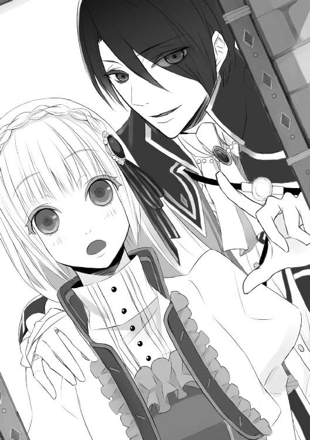
「ですが、これはルクス様の身を守るための――」
「感情を完全に支配することなんて、普通に生きている人間にはできない」
きっぱりと、否定された。
呆然とするマリアに、ルクスは重ねた。
「人間は弱い生き物だ。悪魔に食い物にされるのも仕方ないんだ」
「あ......悪魔に、好きにさせてはいけません......っ」
やっとのことでそう言うと、ルクスはふっと笑った。
「おまえは、人である前に祓魔師なんだな」
その意味がわからず、マリアは泣きそうになった。突き放されたように思えた。
――俺たちは理解し合えない。
そう言われたようで、胸が痛んだ。
「......ルクス様」
マリアは、鏡の中の自分を見た。髪を結って可愛らしくなった祓魔師の、薄藍の瞳が揺らいでいる。
せっかく、ルクスに信頼してもらえるようになったのだ。
祓魔師としての心は、揺れてはいけない。やるべきことがあるのだから。
人として、お互いの理解を深められなくても。
ルクスの心のすべてを知ることは叶わなくても。
私は、ルクス様をお救いしよう。
気を引きしめ直して、マリアは立ち上がった。
「何をするんだ？」
すぐさま問われ、マリアはきっぱりと答えた。
「ルクス様に危害は加えません」
渋い顔になったルクスを部屋の中央に置いた椅子に座らせ、その周囲に結界を張る。
「始めます」
息を吸い込み、マリアは意識を集中させた。
祓魔師の持つ技術のひとつ――悪魔との対話。
疑うような顔つきで椅子に腰かけたルクスを横目で案じつつ、マリアは叫んだ。
「祓魔師の名において命じる！ セヴェリオ・ルクス・ジュスティーニと契約されしその姿を、我の前に顕せ......！」
声が結界を震わせ、幾重にも響いた。
悪魔との関係は、常に対等以上で接しなければならない。下手に出れば、すぐさまその魔力にねじ伏せられる。とはいえこちらが上というわけでもないので、命じれば相手が従うという構図にはならない。
ルクスの悪魔がどう出るかは五分五分だったが、すぐに異変は起きた。
そばに置いた聖水盆ががたがたと揺れ、ひとつがひっくり返る。もう片方は聖水が荒々しく波打ち、半分以上がこぼれた。
「う......っ」
身体を折ってうめいたルクスの口から、煙のようなものが現れ始める。しゅるしゅると出てきたそれは濃い影となり、やがてぶわりと黒い炎を生み出すと、影はマリアの目の前で次第に形を成していった。
ばさりとマントを翻す音がして、次に現れたのは、十歳くらいの少年の姿をしたモノだった。
灰色の髪と、血に濡れたような赤い双眸。マントを巻き付けた身体は小柄で可愛らしいと言えなくもなかったが、猫のように這いつくばってこちらに近づいてくる様は、なんともいえず不気味だった。
「そんなに僕に会いたかった？」
これが、ルクスと契約をした悪魔の姿。とはいえ、これはマリアが祓魔師の術で姿を顕現させただけで、悪魔がルクスから離れたわけではない。
よって、目の前のモノの首を刎ねても、悪魔祓い完了とはならない。
「......そうだ、これだ」
ルクスが両目を見開き、マリアと自分の間にいるそれを見つめた。無我夢中で母親を助け、契約した時のことを思い出したのだろう。
「あなたに聞きたいことがあるの」
悪魔との対話で必要なことのひとつは、こちらが先手を打つこと。
マリアは悪魔から視線をそらさず、じっくりと見据えた。
「言ってみて？」
悪魔はその場にあぐらをかいて座り、あごでマリアを促した。
見た目はそれほど恐ろしくないのだが、そもそも祓魔師を恐れず顕現し、人間の言葉を操るというところで、これは上位と区分される悪魔だ。用心するに越したことはない。
「あなたは、ルクス様と契約を交わした時のことは憶えているわね」
「もちろん」
「それなら、ルクス様が意識を失っている間の出来事もすべて、憶えているわね」
「そうだね」
悪魔の向こうで、ルクスがはっと身をこわばらせたのがわかった。マリアの意図を察したのだろう。大丈夫なのか？ と問いたげな不安の色を見せる。
マリアはルクスに示す意味も込めて深くうなずき、悪魔を見据えた。悪魔もまた、好奇心を宿らせた爛々とした瞳でマリアを見つめ返す。
「前皇帝陛下が殺害された時は、あなたがルクス様の意識を支配していたのよね？」
「というより、眠った皇子の中から外を眺めてただけだけどね」
「つまり、その部屋で起きた出来事を、見ていた？」
「見てたよ」
「犯人を知ってる？」
できるだけ平静を装ってさらりと訊いたのだが、悪魔はははっと声を上げて笑った。
「駄目だよ、祓魔師のお姉さん。わかってるでしょ？ そこから先は、情報料が発生する」
「......っ」
やはりそうか。マリアは唇を噛んだ。
「知っているのか知らないのか、それすらも答えられないの？」
挑発するように言ってみると、悪魔はふと笑みを消した。ぞくりと、マリアの背筋が凍る。
「......いいよ。教えてあげる」
灰色の髪に赤い瞳の悪魔は、ひっくり返った聖水盆をぐしゃりと膝で踏みつけ、マリアの方へと身を乗り出した。銀製の盆は、粉々に砕かれている。
悪魔は猫のような四つ足姿勢から、マリアの目を覗き込んだ。
「――僕は、知ってるよ」
がたん、とルクスが椅子を蹴るようにして立ち上がった。
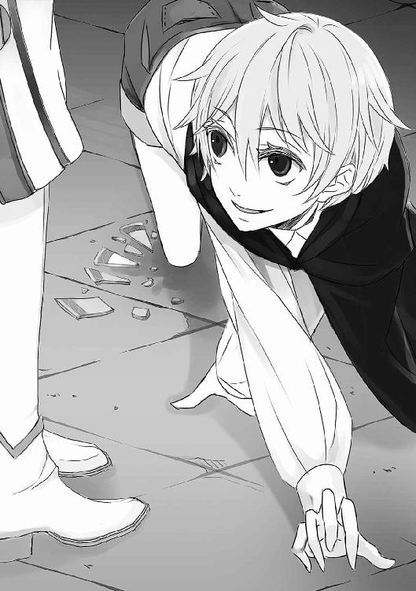
「ルクス様」
そのルクスを、マリアは強い視線で制する。
「どうしたの、皇子？」
悪魔に親しげに微笑まれたルクスは、ぐっと詰まってから、悪魔の首根っこを引っつかんだ。
「マリアに近づきすぎだ。離れろ」
「いいねぇ、嫉妬の匂いがする」
ずるずると引き戻されながらも舌なめずりをする悪魔に、マリアは慌てて告げた。
「犯人を教える、その代価はなに？」
情報料が発生すると悪魔が言ったが、金銭を要求するはずがない。
「んー、何がいいかなぁー」
悪魔はくりくりと目を動かしてから、ぴたりとマリアに視線を定めた。
「君の――祓魔能力、かな」
「私の？」
マリアは意外に思った。
マリアから祓魔能力を奪ったとしても、実際に悪魔祓いをするのは師匠であるメルキオーレだ。その代価では見合わないのではと思ったが、余計なことを口にするべきではない。
「私が祓魔能力を与えることで、その情報は――」
「やめろマリア」
ルクスがマリアの前に片膝をつき、肩をつかんだ。
「やめろ。祓魔能力を失うということは、祓魔師でいられなくなるということだぞ」
「わかってます」
「駄目だ。おまえは祓魔師でいるべきだ」
強く諭され、マリアはきゅっと眉根を寄せた。
「私に何かあれば、師匠が儀式を引き継いでくださいます」
「そういう問題じゃない。おまえが犠牲を払う必要はないと言ってるんだ」
ルクスの眼差しは、真摯だった。本気でマリアの祓魔能力を守ろうとしている。
そのことを、マリアは素直に喜べなかった。
皇子と祓魔師が結ばれることは叶わない。そんなことはよくわかっているし、ルクスがマリアに祓魔師でいてほしいと望むことが悲しいわけでもない。
ただ、マリアには浄化の儀式を施す以外にできることはなく、しかしそれすらも、ルクスを救う手立てにはなりえないのだ。
だから、この身を捧げてでもルクスに生きていてほしい......そう思ったのに、その覚悟はルクス自身に拒まれてしまった。それが、マリアを惨めな気持ちにさせた。
「......わかりました」
急いで顔をそむけ、うなずく。それを見たルクスの肩から力が抜けたのがわかった。その向こうで、つまらなそうに口をとがらせた悪魔の姿が次第に靄となり、消えていく。
皆を等しく愛そうとするマリアの愛情は、今やすべてがルクスに向けられている。それが祓魔師として正しくない姿だとしても、もう自分を止められそうもなかった。
生まれたばかりの愛情は、純粋で、深くて、罪深い。
その気持ちを、マリアはすべて受け入れていた。
ルクスを救う――そうすることでしかこの愛情を示せないのに、それすらも封じられたマリアは、今後どう生きていけばいいのだろう。
＊
弟子に呼びつけられ宮殿へと赴いていたメルキオーレは、ふらふらしているところを聖オルテッツァ帝国の新皇帝に従者を通じて捕まった。
人目を避け、皇帝の寝室へと連れ込まれたメルキオーレは、リカルドの落ちくぼんだ青い目で見下ろされた。
「久しいな、稀代の敏腕祓魔師殿」
「リカルド新皇帝陛下におかれましては、ご機嫌麗しくないようでございますね。いかがされました？」
リカルドはしばし無言でメルキオーレを見つめていたが、やがて指で目頭を強く押さえた。
「困ったことに、最近はいくら眠っても疲れがとれない。まるで誰かに身体を乗っ取られ、夜通し剣術の稽古でもさせられているかのようだ」
「ははあ、皇帝の重圧というやつですかねぇ」
のんびりとした口調で返すメルキオーレに、リカルドは一瞬だけ冷ややかな一瞥をやった。
「......それで、準備は進んでるのか？」
「ええ。それはもう着々と」
「いつ頃になりそうなんだ？」
ため息混じりのこの問いは、これで何度目だったか。
「なにせ一世一代の大がかりな儀式でございますから。もう少々お時間をいただきませんと」
そしてこの回答も、今までと同じ。
しかし、リカルドの反応は今までと違った。
猫脚の長椅子から立ち上がり、その周囲をうろうろと歩き回る。
「先ほど、報せが届いた。教皇ミハエル二世がようやく回復したそうだ」
一刻も早く皇帝の座を確たるものにしたいリカルドにとっては、ひたすらに待ち侘びた朗報だっただろう。メルキオーレはにやにやと笑った。
「それはそれは。彼もなかなかのご老体。そろそろ後継者を決める時期ですよねぇ」
「......言葉を慎みなさい。おまえも祓魔師だろう」
「教会に飼われた聖職者じゃありませんから」
そう言って軽やかに笑うと、リカルドに眉をひそめられた。祓魔師は本来、聖職者と同じように清廉潔白でなければならない。守銭奴とも呼ばれる強欲な祓魔師は異端であり、当然のことながらそんなふざけた祓魔師は帝国にただ一人しかいない。
リカルドは足を止めると、ふいに天井を仰いだ。天井には、神の使いが月桂樹の葉を降らせている姿が描かれている。聖典の中の一場面だ。
月桂樹の葉で編まれた月桂冠は、神に選ばれた者の証。それは現在、リカルドの頭に載せられている。
聖典の中では、それでいい。
しかし、現実は違う。
皇帝の座を正式に戴くには、教皇の手により清めてもらい、金でできた本物の冠を載せてもらう必要がある。その儀式を経て初めて、正式な皇帝となるのだ。
「教皇が職務に復帰するのは明日から。戴冠式は早くて明後日になるそうだ」
「ほほう」
相槌を打つメルキオーレに、リカルドは不安そうな顔を向けた。
「ルクスは、戴冠式を妨害するつもりではないのか？」
「もし、かの皇子が玉座を狙っているのだとしたら、その可能性は否定できませんね」
メルキオーレの言葉に、リカルドは目を泳がせた。
「......間に合うのか？」
問われ、メルキオーレはにやりと笑った。
「ルクス皇子殿下の悪魔祓いでございますね？ お任せください。必ずや、戴冠式の前に悪魔祓いを完了させましょう」
「メルキオーレ、私はこのままでは戴冠式に出席できない。そろそろまた浄化を頼む」
青白い顔で見下ろされ、メルキオーレはこくこくとうなずいた。
邪悪なモノと契約した状態では、聖なる気が満ちた大聖堂での戴冠式は耐えられない。メルキオーレはさぼりながらも、それなりの浄化を施してきたつもりではあったが、リカルドの身体はそれだけでは足りない域に達しているようだった。彼の野心や憎しみといった負の感情が、悪魔を増長させているのだろう。
メルキオーレは、ふふっと笑って眼光を鋭くした。
「承知しております、陛下。ただし前回の戴冠式同様、そちらは別料金が発生いたしますが」
「わかっている。正規の料金を払うと言っているだろう」
「――正規の料金、ですか」
「なんだ？」
「いいえ、なんでもございません」
メルキオーレはにやりと笑った。意味深な笑みにリカルドは何かもの申したそうだったが、首を振り、別のことを口にした。
「それより、おまえの弟子は大丈夫なのか？」
「マリア、でございますか？」
「ルクスの魔力を抑えているのではなかったのか？」
「そのはずですが」
メルキオーレののっぺりした返答に苛立ったのか、リカルドはまたぐるぐると歩き回りはじめた。
「――ルクスが魔力を放った痕跡があった」
マリアが毎晩の儀式を滞りなく行っていれば、ルクスは痕跡を残すほどの魔力を解放することができないはずだ。
「ちなみにそれは、どのような？」
尋ねると、リカルドは苦い顔になった。
「私の......以前の私室が真っ黒な灰に変わっていた」
「ほほう」
メルキオーレは驚いて見せたが、実のところ彼はすでにその気を感じ取っていた。
宮殿内ではないが、その周辺に漂う邪悪な気。これは間違いなくルクスと契約した悪魔のそれであり、同時にルクス自身の負の感情も読み取れた。誰もそれを表沙汰にしないので、メルキオーレも敢えて黙っていただけだ。
「おまえの弟子は何をしているのだ？ ルクスに情が移ったのではないだろうな？」
いつもはどこか軟弱なリカルドの声に、棘が加わる。
メルキオーレは、ふふっと笑った。
「どうでしょうね？ マリアは悪魔使いを毛嫌いしていたはずですが」
「どうでしょうでは困る。手を抜かぬよう言っておくのだな」
「承知いたしました」
仰々しく一礼して、メルキオーレはさっさと部屋をあとにした。
悪魔使いを軽蔑していたマリアは、その婚約者役を演じるという難題を押しつけられたようだが、どうやらそれが面白い方向へと作用したようだ。
マリアは先ほど、悪魔使いと契約した悪魔を顕現させる方法を教えてほしいと頼みにきた。
理由を訊かないでほしいと、そのまっすぐな目に語らせて。
幼い頃に悪魔に襲われたマリアは、邪心を抱けば悪魔に狙われるからと、その恐怖心から清廉潔白を誓うようになった。実際には怒ったり泣いたり怖がったりするくせに、必死に感情を押し殺して「自分は負の感情を抱かない」と思い込む子どもになった。
以来十年近く、人間なら誰もが抱く負の感情を否定して過ごしてきたマリアが、どうやら師匠に隠し事をしているらしい。それは、マリアに訪れた二度目の変化だった。
「面白いことになってきた」
ふふふと笑んで、メルキオーレは回廊の真ん中で立ち止まった。
あたりを見回し、ふと笑みを消す。
「では、僕もぼちぼち動くとしますかね」
独り言をこぼし、とある方向へときびすを返した。
＊
「......おい、こぼれてるぞ」
その声にはっと我に返った時には、マリアの足下には水たまりができていた。
「貴重な聖水がっ」
慌てて布で床を拭き、しかし勢い余って長靴がすべり、今度は聖水盆を蹴飛ばしてしまう。
「神聖な聖水盆が......っ」
あわあわと取りに行き、足蹴にしてしまった盆を磨いていると、思いきり呆れたような声が近くでした。
「どうした？ めずらしく手際が悪いな」
隣に腰を下ろしたルクスに覗き込まれ、マリアは気まずい思いで目をそらした。
「......申し訳ありません」
儀式の準備に身が入らないのは、迷いがあるからだ。
陽が沈み、儀式を施す夜が近づくほどに、マリアの心は乱れた。
マリアがルクスを清めれば、それはメルキオーレの悪魔祓いに手を貸すことになる。
そのメルキオーレの雇い主であるリカルドは、悪魔祓いが完了次第、ルクスを前皇帝暗殺の濡れ衣を着せて処刑するつもりなのだ。
悪魔と取引して真相を得るという方法は、ルクスに止められてしまった。
どうすればいいのか......途方に暮れながらも聖典をぱらぱらめくっていると、再びルクスから声がかかった。
「忘れてる」
「あ」
儀式用の手袋を手渡され、マリアは躊躇いながらも受け取った。
「ありがとう、ございます」
――受け取ってしまった。
そう思うと胸が詰まり、とたんに息苦しくなる。
「早く始めないと、寝てしまうぞ」
ルクスはそんなマリアを横目で見て、わざとらしくあくびをした。まもなく処刑されるかもしれないというのに、どうしてそんなに落ち着いていられるのか。
マリアは手袋をはめながら、足を組んだ姿勢で椅子に腰かけるルクスを見つめた。
「ルクス様。私は何が正しいのか、わからなくなりました」
「そんなのは俺にもわからない」
ルクスは退屈そうに言って、マリアに身体を向けた。
「さっさと始めるぞ。儀式をやらなければ、おまえがリカルドに疑われる」
「私が？」
どういう意味だろうと頭をめぐらせ、はっと気づく。
「まさか、先日ルクス様が魔力を解放した件ですか？」
「あれが俺の仕業だと気づいたようだ。ま、当然だろうがな」
窓からリカルドの屋敷の方角を眺め、ルクスはほくそ笑む。
リカルドの呪術部屋を燃やし尽くしたことは、リカルドへ挑戦状を叩きつけたことと同義だ。今後、リカルドが動きを見せる可能性がある。
マリアは不安になった。
「陛下は、すぐにでも悪魔祓いを行おうとするのでは？」
「そうかもな」
「陛下の命とあれば、さすがの師匠でもすぐに実行するかと思います」
いくら日銭を稼ぎたいメルキオーレといえど、皇帝には逆らえまい。
メルキオーレの話では、悪魔祓いの期限はリカルドの戴冠式ということだった。つまりは、戴冠式の前であれば、悪魔祓いをいつ行ってもおかしくないのだ。不安に煽られるマリアとは対照的に、ルクスはずいぶんとのんびり構えているようだった。さらに彼は、飄々とこんなことを言ってのけた。
「それまでに真犯人を捕まえられれば、俺は処刑を免れる。......その真犯人が俺なら、処刑を甘んじるほかない」
それだけだ、と簡単に言って、ルクスはおもむろに立ち上がり、かと思うとマリアの前に跪いた。誰の前にも跪きたくないと言っていたルクスが自ら膝をつく姿に、マリアは切ないような複雑な思いに駆られる。
「儀式をやらない理由はない。それがわかったら、早速始めよう」
「ですが......あ」
マリアが躊躇っているうちに、ルクスに手を取られてしまった。
「ほら。俺のために祈りを捧げてくれるんだろう？」
マリアが後ずさりすると、もう片方の手を腰にまわされた。完全に動きを封じられる。
「俺を清めて、マリア」
「ルクス......様」
下腹のすぐそばで囁かれ、マリアは頬を赤らめた。恥じらっている場合ではないとわかっているのに、鼓動の高鳴りを止められない。
「やらないと、いつまでも離さないよ」
「......なんですか、脅しですか？」
「俺から離れたくなくて、焦らしてるわけ？」
腰にまわされた手に、ぐっと力が込もる。
「......っ、嫌がらせですか！」
「なんとでも」
ルクスは平然と答える。
そこまで儀式を望むのなら、と、マリアは抵抗をやめた。熱い眼差しから逃げるために、ロザリオを握りしめ目を閉じる。
「――主よ、聖ルクレツィアよ。我を、セヴェリオ・ルクス・ジュスティーニを愛してくださいますか......？」
集中力が足りないのか、問いかけに力が入らなかった。
「尊き愛で、我をお導きください。......清き愛で、我を正してください」
語尾が震えた。ぎくりとして目を開けると、ルクスが不遜な表情でマリアを見上げていた。
「マリア、次は？」
「次は......私の指に、口づけを」
すでに儀式の段取りなど頭に入っているだろうに、わざわざ言わせるのは趣味が悪い。
ルクスはマリアの指先に軽く口づけ、マリアがほっと気を緩めた隙に、その指先を手袋ごと甘噛みした。
「......ひゃっ」
慌てて手を引っ込めると、ルクスは声を上げて笑った。
「上出来。可愛い反応だ」
「ル、ルクス様っ。儀式は遊びではありません！」
真っ赤になって抗議するのを、ルクスは観察するように眺めた。
「そう。これは遊びじゃない。俺は本気だ」
ゆらりと立ち上がったルクスが、今度はマリアの肩をつかみ、見下ろしてくる。その顔は非常に楽しそうで、どうやら今のルクスはマリアを困らせることで悦に入っているようだ。
悪趣味、と思いながらきつく見据えると、間近でふっと微笑まれた。また頬が赤らむのがわかって、完全に振り回されていることを自覚する。
それでもルクスから漂う気が清浄化されていることを察し、マリアは息をついた。
――これで良かったのだろう。ルクスがあれほど望んだのだから。
「マリア」
「はい？」
またからかわれるのかと思ったが、ルクスはなにやら思い悩むように眉間にしわを寄せていた。
「ルクス様？」
「......俺に、本当に危機が迫ったら――おまえは必ず生きて逃げると約束してくれ」
「――――」
急に何を言い出すのだろう。マリアは絶句し、けれどすぐに首を振った。
「できません。私は何があっても逃げません。最後まで、ルクス様をお守り申し上げます」
「やめてくれ。命を賭して守ってもらうなんて、俺は望んでない」
「たとえルクス様がお望みにならなくても、私はそうします。それが私の役目です」
何ができるわけでもないかもしれない。けれど、逃げるのは嫌だった。
きっぱりと告げると、ルクスはあきらめたように小さく笑った。
「頑固だな」
「そうでしょうか」
「俺はもう寝る」
唐突に拍子抜けするようなことを言って、ルクスはくるりを背を向けた。何事もなかったかのような顔であくびをし、さっさと寝台に横になる。
目を閉じてしまったルクスの横顔を眺めながら、マリアはふと疑問に思った。
（そういえば――）
リカルドが彼の呪術部屋を灰にしたのがルクスだと気づいたようだと、ルクスは言った。
以前にも、メルキオーレに教皇の部屋に結界を張らせたらしい、との情報を口にしていた。
監禁されているはずのルクスはどうやって、それらの情報を耳にできたのだろうか。唯一の従者であるジェラルドはあまり事情を知っているようには見えないし、何よりルクスが彼に信用をおいているようには見えない。
マリアの知らない情報網があるのだろうか――そう思ったところで、手燭の炎がぶわりと大きく伸びた。そして、ルクスの声に呼びかけられる。
「ねぇ、取引するつもりになった？」
「......悪魔ね」
マリアは即座にそう判別し、冷ややかに横目を向けた。
ルクスの身体がむくりと起き上がり、真っ赤な瞳がマリアを見る。
儀式の直後に祓魔師との接触をはかるなど、かなり挑戦的な悪魔だ。それでも魔力は抑えたばかりなので、ルクスにマリアへの悪意がない限りは危険はないはずだった。
寝台の上で半身を起こし、気怠げにマリアを眺めるその表情は実に愉しそうで、マリアは身構える。
「――悪魔との取引は、祓魔師にとっては禁忌とされるものよ」
マリアはそう言ったが、自分にもその言葉は虚ろに響いた。
それはまるで、自分に言い聞かせているようで。
「でも君は、目をそらしたね」
指摘され、ぎくりとした。もちろん、顔には出さずに。
ぎしっと寝台の軋む音がして、気がついた時には、悪魔はマリアのすぐ目の前にいた。
「......君は自分自身を犠牲にしてでも、皇子を助けたいと思った――違う？」
するりと首筋を撫でられて、マリアは反射的にその手を払った。
「触らないで！」
ぱしんと、意外に大きな音を立てて。
ルクスに火傷を負わせてはならないということだけではなく、ルクスが触れることのない素肌に触れられるのが不快だったのだ。
睨みつけた先の悪魔は、ゆるゆるとその双眸を歪めた。
――笑っている。
悪魔の瞳は、獲物を見つけた猛獣のような愉悦に満ちていた。
「見つけた。君の、感情」
ルクスの顔で舌なめずりをするその姿は実に嬉しそうで、マリアは己の失態に気づいた。
「違う......っ」
「違わないよ、祓魔師のお姉さん。君の生々しい感情は、そこにある」
「やめ――」
「皇子への、執着だ」
言わないで――。
マリアは両手で耳を塞ぎ、首を振った。
違う。違う。私は負の感情を持たない。
なぜなら、私は清廉潔白を誓う祓魔師だから――。
「見えたよ、君の執着。君は皇子の心が欲しい。自分だけを求めて欲しい。その目を自分だけに向けていて欲しい！」
「黙りなさい、悪魔！」
「はははははは！」
悪魔がふいにけたたましく笑い出し、マリアは逃げ出した。が、腰を抱かれて引き戻されてしまう。悪魔の胸の中に。
「逃げないで――俺のマリア」
抱き寄せられればルクスの匂いに惑わされ、マリアの中の何かが壊れてしまいそうになる。
手の感触が、吹きかけられる吐息が、違うとわかっているのに愛しさを思い起こさせる。
「マリア、そばにいてよ」
悪魔はわざと名を呼び、マリアに混乱を及ぼそうとしている。
「......あなたは悪魔で、ルクス様じゃないわ！」
「だから？」
「私の名前を呼ばないで！」
ルクス様の声で、私の望むような言葉を紡がないで。
「可愛いよ、マリア」
「やめて！」
必死に拒み、マリアはなんとか悪魔の腕から逃れた。
胸元から取り出したロザリオを突き出し、牽制する。
「近づかないで！」
叫びすぎて、呼吸が乱れた。はあはあと荒い息を吐き、頬を伝う涙を拭いもせず、ただ必死にロザリオを翳す今の姿は、ひどく醜いはずだった。
（主よ、我をお助けください――！）
自分はなんて未熟な祓魔師なのだろう。
感情を抑えることができなくなった今のマリアは、悪魔の格好の餌だった。
それでひとりでルクスを救えるなどと本気で思っていたのだから、滑稽な話だ。
「君の乱れる姿、もっと見せてよ」
悪魔はそれ以上近づこうとはしなかったが、その表情は余裕たっぷりだった。
そして、気づいた。
悪魔は、マリアから負の感情を引き出すことで、力を増長させているのだ。
儀式によって浄化されたはずのルクスの身体からは、聖なる気がほとんど感じられなかった。薄れているのだ。
このままでは悪魔による侵食が進み、ルクスの精神が食われてしまう。
そう気づき、マリアの頭がすっと冷えた。――冷静にならなければ。
自分の恋心がルクスを苦しめるなど、あってはならない。
「私は――ルクス様を悪魔からお救いする祓魔師。愛されたいわけじゃない」
「ふぅん？」
それで？ と目で促され、マリアは震える唇で告げる。
「私は、ルクス様を守りたいだけで――」
「下心はないって？ 見え透いた嘘だね」
悪魔はロザリオの手前まで近寄ってきて、にやりと笑った。
「嘘じゃないわ」
「でも、君からは執着だけじゃない――嫉妬の匂いもする」
ふふっと笑って、悪魔はマリアの首筋に顔を寄せた。「――美味しそう」
囁かれ、マリアは動けなかった。
ロザリオを手にしながらも悪魔に簡単に接近を許した、その失態にすら気づかなかった。
「嫉、妬......？」
それは、あまりに馴染みのない言葉だった。
清廉潔白に生きてきたマリアが、抱くはずのない醜い感情。
抱いてはいけないと、強く戒めていた負の感情。
「皇子には、婚約者がいたんだってね？」
耳元で囁かれ、マリアの胸はかっと燃えるように熱くなった。
「そんなこと......関係ないわ」
「君は知らないかもしれないけど、相手の家が落ちぶれなければ、二人は結婚したんだよ。皆に祝福されながら」
「......そうかもしれないわね」
「皇子は、彼女となら、そうなってもいいと一度は思った。愛したんだ」
ひくっと、マリアは頬が引きつるのがわかった。
「違......ルクス様は、彼女は、前皇帝陛下がお決めになった相手だったって――」
「でも、仲は良かった。ねぇ、知ってる？ 男女が仲が良いって、どういうことか」
「何が言いたいの......？」
「つまりさ」
悪魔は囁いて、マリアの首筋をぺろりと舐めた。マリアはびくりと身体を震わせ、手から落ちたロザリオがしゃらんと音を立てて足下に落ちた。
「......やめ、て......っ！」
「唇を重ねるとか、それ以上のこととか」
「やめて！」
もう限界だった。
悪魔がマリアを惑わせるためにありもしないことを口にしているのはわかっているのに、したくもない想像が、脳を支配する。
ルクスが誰かを愛する姿は、マリアの胸を押し潰し、心の中を蹂躙する。
「君に着せるドレスは、どれも彼女のために仕立てられたものだ。君は、彼女と奇跡的に体型が似ていたから、選ばれた。それだけの祓魔師なんだよ。祓魔師としても、女としても、君は皇子にとっての特別なんかじゃない」
「――――っ！」
マリアは自分でもわけのわからないことを叫び、うずくまった。
暴かれる。醜い欲望が。
ルクスの心を独り占めしたいという願望が。
殻を剥かれ、裸にされる。
今愛されるだけでは足りない。
ルクスの過去も未来も自分のものにしたいなんて、許されない感情が。
「あはははは！ 隙だらけだよ、祓魔師のお姉さん。僕が食べてあげる」
悪魔は強引にマリアを床に組み伏せると、馬乗りになってその細い首に手をかけた。激しく火花が散ってルクスの手の甲に火傷が生じ、赤く腫れる。焦げた臭いがした。
「やめて！ ルクス様に傷を負わせないで！」
「君が求める皇子の姿で、君の魂を食い尽くしてあげる」
マリアがルクスを想えば想うほど、悪魔は愉しそうだった。
悪魔はまず、マリアの息を止めるだろう。そうしたあとで、悪魔は悪魔のやり方でマリアの魂を取り出し、食べてしまう。
マリアの魂は、神のもとには逝けず......。
悪魔の指の一本一本に少しずつ力が加わり、マリアは虚ろな目で赤い双眸を眺めた。
ルクスを好きにならなければ、こんなことにはならなかった。
そう思っても、不思議とマリアはこの愛情を手放す気にはなれなかった。
それはつまり、清廉潔白な聖職者という立場よりも、ただひとり、母親に愛を注ぐことを選んだ父親と同じで。
......でもここで命を落とすなら、愛する人を守ることもできないのだ。
朦朧とする頭でそう考えて、マリアは力の入らない手で床を探り始めた。
だめだ。やはり、あきらめることは許されない。
落としたロザリオさえ、この手に戻れば――。
そう思った時、悪魔の手が唐突に離れた。勢いよく空気を吸い込んだせいで、マリアは激しく咳き込んだ。
「間一髪、助けられたね。祓魔師のお姉さん」
涙の膜の向こうで、悪魔はふらりとよろけた。力が入らないのか、後ろに手をついて半身を支えている。
「なに......？」
「君の皇子が、目覚めるようだよ」
悪魔はそう笑って、目を閉じてかくんと頭を垂れた。
「目、覚め......？」
マリアがぼんやりとつぶやいたところで、ルクスの双眸が開いた。
深みのある、どこか憂いを帯びた紫色の瞳が。
愛しい人の瞳が、マリアを見る。
「なんだ、これは？」
マリアに跨った姿勢の自分に驚いた顔で、ルクスはまばたきをくり返した。
「そうか、悪魔だな？ また俺の身体を勝手に使って――」
ルクスは機敏な動作でマリアから離れ、それから起き上がろうとしているマリアを見つめた。震えるマリア、そして手の甲に生じた火傷痕を交互に眺め、思いきり顔を歪める。
「マリア、悪魔はおまえに何をした？」
「......申し訳ありません。悪魔に、隙を許しました」
マリアは目をそらした。ルクスの目を見る勇気はなかった。
「大丈夫だったか？ 何を言われた？」
屈み込んだルクスがマリアの肩をつかんだ。こっちを見ろとばかりに覗き込まれ、マリアは泣きそうになった。
「見ないでください。私の、汚い......っ」
「何を言ってる？ どうした、何があった？」
「いや！ 見ないで！」
マリアは床に落ちたロザリオをひったくるようにして立ち上がると、身を翻して部屋を飛び出した。
「マリア！」
ルクスの声が追ってくるが、それまでだった。
マリアは隣室に駆け込むと、自分の寝台に突っ伏して泣いた。
マリアの負の感情が悪魔の力を増大させてしまったのは、事実だ。本当なら、マリアはあらためてルクスに儀式を施す必要がある。
それが、マリアに課せられた仕事なのだ。
（師匠、私には無理です――）
自分がそばにいれば、ルクスを救うどころか、その魔力を増長させるだけだ。
祓魔師失格。
それが、誰かを愛した祓魔師の末路なのだと、マリアは知った。
（――主よ、聖ルクレツィアよ。罪深き我をお赦しくださいますか......？）
意匠の凝った聖壇の脇に聖人像が立ち並び、頭上のステンドグラスから光が差し込む大聖堂で、マリアは両膝をついていた。しっかりと指を組み合わせた両手を、唇にあてる。
忘れるしかないと思った。
ルクスを守るためには、込み上げるルクスへの想いを断ち切るほかなかった。
ルクスを救いたい。
前皇帝を殺害した者を突き止め、ルクスの冤罪を晴らす。そして、悪魔を祓う。
そのためには、祓魔師としての禁忌を犯してでも悪魔と取引し、真相を知る必要があった。......ルクスはそれを望まなかったけれど。
祓魔師の力を最大限に発揮するには、まず己を清める必要があった。だから、マリアは大聖堂に来たのだ。
祈りによる祝福の光は、マリアの上に燦々と降り注ぐことはなく、ときおりちらちらと頬に感じられる程度だった。
まだ足りないのだ。まだ、完全にルクスへの想いを捨て切れていないのだ。
執着と、嫉妬。
それらを胸に隠したままでは、神はマリアをお赦しにはならないのだ。
途方に暮れかけた時、ぎぃぃと重たい音がして、光が差し込んだ。祝福の光ではなく、朝の太陽の光。
「――......陛下」
人の倍はある大きな扉が開き、そこに立っていたのは、リカルドだった。脇に、祓魔師を従えて。
「師匠......」
メルキオーレは腕組みをした格好でマリアを見ると、あーあと声を上げた。
「我が弟子ながら、情けない格好だね」
「......お見苦しい姿を陛下にお見せしてしまい、申し訳ありません」
マリアは乱れた髪と着衣を隠すように、うずくまるようにして深々と頭を下げた。どうにかこのまま後ずさりで逃げられないかと考えていると、つかつかと歩み寄ったリカルドの靴先が眼前に迫った。
「......あ、あの」
身の危険を感じて顔を上げると、リカルドの手袋に覆われた手が、マリアの頬に触れた。
「陛、下......っ」
「ずいぶん泣いたんだね」
マリアの頬に張りついた金色の髪を払い、憐れみの瞳を向ける。
「......いえ」
困惑と恐怖心で、言葉が出なかった。
慈悲の念を浮かべたリカルドの手はどこまでも繊細で、優雅だった。
けれど、彼も悪魔使いなのだ。
呪術部屋を設えて魔界への扉を召喚し、幼かったルクスを魔界へ堕とした人なのだ。
皇帝の地位を望み、前皇帝を殺害したかもしれない人なのだ。
――悪魔。
マリアは無意識に、その言葉を唇で紡いでしまった。声には出さなかったけれど、リカルドにはその唇が読めただろう。
けれどリカルドは表情を変えず、こう言った。
「マリア。つらいなら、やめてもいいんだよ」
「え......？」
「ルクスは不器用な子だからね。君につらくあたることもあるだろう。彼は、女の子の扱い方をまだ知らないんだ」
ふふっと笑って、リカルドはマリアの頭を撫でる。その感触は確かにやわらかかったけれど、少し乱暴にも思えるルクスの手つきを、マリアは懐かしく思った。
「私は、やめません」
マリアはきっぱりと言って、リカルドの目を見た。リカルドの笑みが引っ込み、その双眸が凍てついたのがわかったが、マリアは無視して視線をはずし、メルキオーレを見据える。
メルキオーレは、リカルドが悪魔使いだと知っている。悪魔と契約していることも。
マリアは確信を得た。
悪魔と契約した者や、悪魔に憑かれた者は、大聖堂の聖なる気にあてられる。具合が悪くなったり、一時的に悪魔が宿主の身体を借りて暴れ出したりする。
それを防ぐには、祓魔師の浄化が必要になるのだ。
今のリカルドを見れば、メルキオーレが浄化を施しているのは明らかだった。
「師匠、私はやめません」
メルキオーレに宣戦布告するつもりで、そう告げる。
「君には、まだ早かったかな」
師匠に呆れ顔を見せられ、マリアはむきになった。
「修行が足りないということですか」
「違うよ。人として未熟だったなと思ってね」
「人として......？ 祓魔師に人としての成熟は関係ありません。むしろ邪魔です」
「それは間違ってるよ、マリア。君は皇子に同情し、感情を揺さぶられて自分を見失いかけている」
「ちが――」
「いい加減、気づいたらどうだ」
「............っ」
否定の言葉を遮られたマリアは、その声に驚いて息を呑んだ。
この目が映す現実を、嘘だと思いたかった。
「ルクス」
先にその名を呼んだのは、リカルドだった。素直に驚きの表情をのせている。
ルクスは扉の開いたままだった大聖堂に一歩踏み込むや否や、身体を折ってうめいた。
「ぐ......っ」
（なんてことを――）
込み上げるものをおさえるように手で口を覆い、もう片方の手で柱に手をつく。マリアはルクスを目の前に、立ち尽くした。ルクスが大聖堂にいることすらつらいのは痛いほどわかるが、今のマリアはルクスを直視することができない。
ルクスが苦しんでいるのは、マリアの負の感情を食べた悪魔が成長したからだ。それで、昨夜の儀式の効果が薄れているのだ。
けれど、脂汗を浮かべ、もう一歩進もうとするルクスは今にも倒れてしまいそうだ。とっさに駆け寄ろうとしたマリアを、リカルドが制した。
「どういうことだ？ マリア、君はルクスを浄化してくれてるんじゃないのか？」
リカルドに問われ、マリアは視線を揺らした。
「それは......」
「もうわかっただろう？ おまえは無能な祓魔師だ」
荒い呼吸の中、ルクスはそう言って頬をひきつらせた。笑おうとしたのだろう。
「ルクス様、すぐに戻りましょう。私が儀式を――」
「笑わせるな！ 誰のせいで、俺がこんな目に遭っている......！」
激昂したルクスの顔からは生気が失われつつあり、血走った目はマリアを射竦める。
「ルクス様......」
マリアは凍てついた。
ルクスの言うことは事実で、そのことに彼は憤っている――。
「いやいや、なんとも情けない仕事ぶり！」
次に遮ったのは、メルキオーレだった。
「浄化の儀式くらい、もうちょっとうまくできると思ってたんだけどねぇ」
「師匠――」
マリアは言葉を失った。
実際には儀式に失敗したのではなく、マリアの弱い心が悪魔の力を増大させてしまったのだが、どちらにしてもマリアが祓魔師として未熟なことには変わりない。メルキオーレはそこまで見透かしたのか、立ち尽くすマリアに憐れむような視線を注いでいる。
「困ったなぁ」
本当に困っているのか判断に迷うにやけ顔で、メルキオーレはルクスとマリアを交互に見た。
ルクスが据わった目をメルキオーレに向ける。
「クビにしろ。役立たずな祓魔師はいらん」
這うような低い声音で、言った。
メルキオーレは「そうですねぇ」とつぶやいたあと、くるりとリカルドに向き直った。
「申し訳ありませんが陛下、この弟子は破門にします」
「破門とはまた大げさな......。でもとりあえずルクスのことは君に任せよう、メルキオーレ」
リカルドの了承を得て、メルキオーレはにやりと笑った。
「仰せのままに」
「そんな......！」
マリアは狼狽した。自分の意志は無視され、ルクスまでもがマリアを追い出そうとしている。
「私は、たとえ必要とされていなくても、それでも......！」
「出て行け」
最後まで言うこともできないまま、マリアは現れた衛兵に腕をとられた。痛いほどの力で引きずられ、出口へと連れ出されそうになる。
「ルクス様！」
すれ違いざま、マリアはルクスに懇願の目を向けた。
「ルクス様、私は......！」
縋るマリアに、ルクスは慈悲のかけらもない、感情のない瞳を向けた。
そして、冷たく言い放った。
「同情など不要だ。帰れ」
焼きつけられる、蔑みの色。
これが悪夢なら、今すぐ覚めてルクスに伝えたかった。
同情なんかじゃない。
私は、あなたの隣にいたいだけなのです、と。
＊
最後に向けられたのは、泣き顔だった。
ルクスは虚ろな視線をリカルドに戻し、鋭く睨んだ。
「近々、正式に戴冠式が執り行われるそうですね」
「そうだね。君にも出席してほしいから、できればその前に悪魔祓いを完了させたいと思ってるんだ。――準備はどうかな？」
リカルドの目が、ルクスからメルキオーレへと移る。
「まあ、問題ないでしょう。なんなら明日にでも」
「明日......か。戴冠式は明後日だからぎりぎりだけど、仕方ないね」
リカルドが嘆息した。
（明日）
その期限を確認し、ルクスは迷いを捨てた。
――もう時間がない。動くしかない。
ルクスは力を振り絞り、高笑いを浴びせた。
「めでたいですね兄上！ 目障りな俺を処刑して、晴れて正式な皇帝の座を手に入れる日がくるとは！」
脂汗がこめかみを伝う。聖なる気にあてられた気分の悪さと、そして緊張感が相まって、恐ろしいほど心臓が鳴った。
ちらりと、一度だけ歪んだ瞳で扉を振り返る。――けれどそれは一瞬のことで、視線をリカルドに戻した時には、ルクスは不敵な笑みを浮かべていた。
「処刑の準備はお済みですか、兄上？」
「ルクス......君には、処刑されるような罪があるのか？」
不穏な表情を浮かべたリカルドを、ルクスは笑い飛ばした。
「この期に及んでしらばっくれる気ですか。俺に父上暗殺の罪を着せ、処刑するおつもりでしょう？」
「ルクス、やめなさい。その発言だけで不敬罪にあたるよ」
「俺がなんのために悪魔と契約したか、ご存じでしょうに」
そう言って、ルクスは素早く左手の包帯を解いた。
「兄上から、皇帝の座を奪うためですよ！」
刻印をリカルドに向けて翳し、一気に力を放つ！
解放感が、ルクスの全身を駆け抜けた。
「ルクス！」
悲鳴に似た兄の声を、轟音がかき消す。
闇の黒と血の赤が入り混じる。
禍々しい色をした炎がうねりを上げ、大気を、大聖堂を震わせた。
＊
大聖堂の敷地からつまみ出され、マリアの眼前で勢いよく門が閉められた。
「お願い！ 中に入れて！」
門にしがみついて訴えるも、衛兵は無情にも、まるでマリアなどそこにいないかのように立ちはだかるだけだった。
その時、大聖堂から地響きのような轟音がした。
衛兵たち、そして外で待っていたらしきリカルドの側近たちが慌てた様子で大聖堂の中へと消えていく。
「なに......？」
ぞわりと背を這い上がるのは、濃厚な魔の気配。
（これは、ルクス様の――）
何が起こっているというのだろう。
ルクスが魔力を解放したのか。しかし、なぜ？
門の外からではそれ以上のことを知る由もなく、マリアは落ち着きなくうろうろするばかりだった。
「あら、マリアさん？」
馬の蹄の音とともに、軽やかな声がかけられた。
「皇女殿下......」
馬車の窓から顔を覗かせたのは、ビアンカだった。マリアはこの偶然に感謝し、この際、なりふり構ってはいられないと通りに駆け出た。
「殿下、お願いです。私を大聖堂に入れてください」
「中にって？ ルクスお兄様におっしゃったら？ 婚約者なのだから――」
「婚約者じゃありません！」
マリアはきっぱりと告げ、ビアンカの馬車に駆け寄った。
「私は祓魔師です。ルクス様を悪魔からお守りするために参りました」
「祓魔師？ そういえば、その服......」
マリアの制服を見下ろし、ビアンカは眉をひそめた。豪華なドレスを着回す少女にどう映るかなど考えもせず、マリアはロザリオを取り出した。
「今まで騙していて申し訳ございません。事情は後ほどお話しします。お願いです、私を中に入れてください......！」
一歩退いて膝をつこうとするマリアを、ビアンカは慌てた調子で止めた。
「やめてちょうだい。事情もわからずあなたの言うことを聞くことはできないわ」
「そんな......っ」
「ひとまず乗って。早く」
ビアンカはそう言うと、自ら馬車の扉を開けた。
戸惑いながらもマリアが跳び乗ると、ビアンカは御者に宮殿とは逆の方角を指示した。
＊
奔放なビアンカには、街に行きつけの高級喫茶室があるのだという。
そこの個室へと通されたマリアとビアンカは、皇女付きの侍女たちを馬車に残したまま、向かい合って話し始めた。
「全部は話さなくていいわ」
おもむろにビアンカはそう切り出し、マリアを驚かせた。
「......お話ししなくてよろしいのですか」
「どうせ難しい話でしょう？ 聞いたってわたくしには理解できないわ」
投げ捨てるようにそう言って、琥珀色のお茶に口をつける。
マリアはおそるおそるビアンカを見上げた。
「......私を、信用してくださるのですか？」
「信じるも信じないも......だってそれ、帝国認定祓魔師の証のロザリオでしょう？ 祓魔師と聖職者の違いはよくわからないけれど、神に仕える者は嘘はつかないって教えられたわ」
あくまでも純粋な目で、ビアンカはマリアを見つめた。マリアは、その瞳をそらさずに見つめ返す。
「ですが私は、ルクス様の婚約者と立場を偽って......」
「だからそれは、リカルドお兄様のご命令なのでしょう？ ルクスお兄様を助けるための」
馬車の中で、そこまでは伝えたのだ。
少なくとも当初マリアに伝えられた表向きの事情はそうなのだから、嘘ではない。
マリアはこくりとうなずくと、ぽつぽつと話し出した。
「......ですが私が未熟なせいで、ルクス様を危険な状態にさせてしまいました」
「なんだかわからないけど、悪魔がルクスお兄様に悪さをしようとしてるってわけね」
「そのようなことです」
「それでリカルドお兄様はあなたを不要だと判断し、宮殿から追い出した......」
「......はい」
答えながら、マリアは打ちひしがれる思いだった。
ここまでの話では、マリアにどうしても戻らなければならない理由はない。
確かにマリアは未熟なのだし、ルクスにもリカルドにも不要だと言われた。
ルクスを浄化するにも、メルキオーレがいれば事足りる話だ。
けれど、なるべくならビアンカに処刑の話はしたくなかった。彼女は数少ないルクスの味方になり得る人物だし、その純真さを傷つけるようなことはできない。
迷っていると、ビアンカが先に口を開いた。
「ルクスお兄様を救いたい......本当に、それだけ？」
くるりと横目を向けられ、マリアは瞳を泳がせた。
「それは......正直に申し上げれば、ルクス様に今一度お会いしたいという気持ちもあります。ルクス様を拒むように飛び出してしまったことを、まだ謝罪できておりません」
悪魔に惑わされ乱れた姿を見られたくなくて、ルクスから逃げ出してしまった。
そのことを思い出すと、マリアは急に不安になった。......ルクスは、悪魔に何をされたのか話さないマリアに失望したのだろうか。
私は、大切な人の信頼を踏みにじってしまったのだろうか。
青ざめていると、ふいにビアンカがぱんと手を叩いた。
「わかった。協力してあげる」
「はい？」
今までの話でどうしてそうなるのか。
思わず聞き返すと、ビアンカはふふんと得意げに笑った。
「あなたが貴族のご令嬢じゃなかったって聞いて納得したわ。行儀作法のひとつもなってないんだもの。リボンをわたくしに貸した時だって、少し胸元が緩くなっていてはらはらしたわ。あんなふしだらな格好になってまで誰かを助けるなんて、わたくしにはとてもできない」
「はあ......」
ビアンカが引っかかっていたのは、どうやらそこだったらしい。マリアがうなだれると、ビアンカは「わたくしね」と切り出した。
「リボンのこと、一度お礼をしたいと思っていたの。......ずっと気になっていたのよ」
「いえ、あれは――」
「マリアさんに言ったこと、後悔したわ。ルクスお兄様の前の婚約者を持ち出すなんて、恋する乙女相手に最低のことだもの」
「恋......ですかっ？」
マリアの声がひっくり返った。
「ええ。なんだかおかしな人だとは思ったけど、マリアさんがルクスお兄様に本気で恋をしているのは明らかだったもの」
「......そんなに見え見えでしたか」
「だってマリアさん、日に日に綺麗になっていったもの。そういうものよ」
片目をつぶり、ビアンカはマリアの手をとった。
「わたくしは恋する乙女の味方なの。マリアさんがルクスお兄様をそばで支えたいと思うその気持ち、応援するわ」
力強く宣言され、マリアは久しぶりに頬を緩めて、笑った。
＊
いったん様子を探ってくると息巻いて、ビアンカはマリアをバールに置いて宮殿に戻っていった。不要だと言われたマリアが行くのは、より面倒なことになるだけだと思えた。
普段は政治にまったく関わらないビアンカが動き回ることにマリアは不安を抱いたが、結局は任せるしかないと思い、その日はバールの主人に毛布を借り、個室でまるまって眠った。
翌朝早くに戻ってきたビアンカは、青ざめた顔をしていた。
「遅くなってごめんなさい。わたくし、驚きすぎて意識を失ってしまって......」
「殿下、少しお休みになってください」
ビアンカの顔にはあまりにも生気がなく、マリアは彼女を座らせようとした。が、ビアンカは頑なにそれを拒み、怯えた瞳でマリアを見つめた。
きつく眉根を寄せたビアンカが口にしたのは、怖ろしい話だった。
「ルクスお兄様は悪魔に憑かれ、その悪魔がリカルドお兄様に襲いかかったというの」
「え......？」
少なくともルクスが悪魔憑きだというのは表向きのことだろうが、その魔力をリカルドに向けて放ったというのも何かの間違いではないのか。わざわざ自分を危機に陥れるようなことを、ルクスがするだろうか？
「いつですか？」
「たぶん、マリアさんが追い出された直後よ」
マリアの足がすくんだ。
やはり、あの時マリアが感じた魔の気配は、ルクスのものだったのだ。
帰れと冷たく告げたルクスの瞳は紛れもなく彼の色で、悪魔のそれではなかった。
それでは、リカルドを襲ったのはルクスの意志だったということになる。
「どうして......？」
「幸い、そばには有能な祓魔師がいて、リカルドお兄様は無事だったらしいわ」
メルキオーレだ。
「それで、ルクス様は？」
「ルクスお兄様は、その祓魔師に捕らえられ......今日の午後、悪魔祓いが行われるのだそうよ」
うまくいくといいのだけど、とつぶやくビアンカを尻目に、マリアはふらつく足取りで店を出ようとした。
「行かなきゃ......」
悪魔祓いのあとに待ち受けているのは、処刑だ。
とにかく今はルクスに会って、すぐに悪魔と取引をする必要がある。ルクスの罪を晴らし、処刑をやめさせなければならない。
ルクスに失望されていようと嫌われていようと、どう思われていようと関係ない。
ルクスを救いたい――！
しかし立ち上がりかけたマリアを、ビアンカが制した。
「待ってマリアさん、あなたは宮殿にも大聖堂にも入れないわ」
「でも――」
「正式に、婚約破棄が発表されたわ。あなたは、もうルクスお兄様とは無関係の人間よ」
――婚約破棄。
ルクスの命を考えればそんなのはどうでもいいと思ったが、自分でも驚くほどマリアの胸は傷ついた。
偽りの関係を破棄する。
たったそれだけのことで、ルクスとは無関係の存在になってしまうのか。
「大丈夫。わたくしが連れて行くわ」
そう言ったビアンカが侍女から受け取ったのは、大きな籠だった。
＊
籠に詰められたマリアは、そのまま馬車に乗せられた。
窮屈な上に、やたらにがたがたと揺れる。痛いのと胃がひっくり返りそうなので気を失いそうだったが、必死に耐えた。
そしてその馬車の中で、マリアは考えをめぐらせていた。
あのルクスが、考えなしに無茶をするとは思えない。きっと、何か策があるのだ。
そしてそれを成すためには、マリアが近くにいてはいけなかったのだ。
帰れと冷たい一瞥をくれたルクスの瞳には、今思えばつらい思いが滲んでいたような気がする。
ルクスは、マリアを遠ざけた。もしかしたらそれは、ルクスからではなく、危険から、だったのかもしれない。
前の晩、マリアが悪魔に襲われかけたのをルクスは知っている。そして、そのことに少なからず衝撃を受けていたことを、マリアは知っている。
――ルクスは、たったひとりで闘おうとしている。
それが、マリアは悲しかった。
ルクスに守られたいわけではなかった。
祓魔師としてできることがあるのなら、愛する人の力になりたかった。
誰かを愛することは祓魔師にとっての足枷になると、そう思っていた。けれど、それは間違いだとメルキオーレは言った。
おそらく、それは真実。
マリアは今、ルクスのために持っている以上の力を出せるような気がしていた。
「――着いたわよ」
ビアンカの囁き声がして、蹄の音が止まる。
扉が開くと、衛兵らしき男の声がした。
「皇女殿下、本日は神聖な儀式が執り行われます。お引き取りをお願い申し上げます」
「あら、どうして？ 私が参列してはいけないの？」
「皇帝陛下の許可のない者は、殿下であってもお通しできかねます」
「......あらそう。じゃあいいわ、せっかく来たのだから、周囲を散歩でもしようかしら」
「皇女殿下――」
「静かに歩くから、いいでしょ？ それとあなた、わたくし少々足を痛めましたの。肩を貸しなさい」
「私には持ち場が――」
「見なさいな、侍女たちは皆、大荷物を抱えてるのよ。わたくしにひとりで歩けというの？」
ビアンカはなかば強引にそう言って、衛兵を連れて行ってしまった。
声が遠ざかった頃、侍女のひとりが籠を開けてくれる。
「さあ、どうぞ」
「ありがとうございます」
マリアは深々と頭を下げ、大聖堂へと急いだ。
＊
「こら！ 勝手に入るな！」
怒声を浴びながら、マリアは衛兵の隙間をすり抜け、大聖堂の扉に張り付いた。
「ここは立ち入り禁止だ！」
「黙りなさい。私は祓魔師よ」
そう言ってマリアはロザリオを掲げると、その迫力に一瞬だけ衛兵の気が緩んだ。
「中で行われているのは悪魔祓いの儀式でしょう？ 私は陛下に呼ばれた祓魔師よ」
はっきりとその言葉を出してやると、衛兵たちはうろたえて「確認しろ」と騒ぎ始めた。その隙に、マリアは扉の隙間から中を覗く。
焦げ跡の残る大聖堂の真ん中に、ルクスは座らされていた。
両手を椅子の背にくくられ、首に嵌められた枷の先は、床に転がった鉛につながれている。さらには両目を布で覆われ、見るに耐えない姿だった。いつもの不遜な態度は失っていないが、皇子らしい正装で拘束されたその姿は、余計に悲しく映った。
――大聖堂の聖なる気と、ルクスの悪魔が醸し出す禍々しい気が入り交じり、なんとも具合の悪くなりそうな空気が満ちている。
そこにはリカルドやメルキオーレだけでなく、ルクスの事情を知っているエヴァなど一部の皇族と、高位の聖職者たちもいた。復帰したばかりの教皇ミハエル二世もいるようだ。
マリアが息を呑んで見守る先で、ルクスの口元に笑みが浮かんだ。
それを見て、リカルドが顔色を変える。
「悪魔め、何がおかしい？」
悪魔と呼ばれたルクスは、さらに笑みを深くする。
「兄上、なにゆえ私を悪魔と呼ぶのです？ 早く楽にしてくださるのでしょう？ 禍々しい悪魔を祓い、地獄へ堕ちていく私をお見送りくださるのでしょう？」
「............早くしろ」
リカルドはルクスには答えず、メルキオーレにそう命じた。
「では、参りましょうかね」
場違いな軽い口調でメルキオーレが言うと、水滴がはねる音がした。
いけない――マリアがそう思うと同時に、衛兵に腕をつかまれた。
「おまえ、嘘をついたな？ 祓魔師は中にいる者ひとりしか雇っていないということだ！」
マリアはくっと歯を食いしばり、手を振り払って扉を開けた。
「勝手に入るな！」
つかまれたまま、マリアは声を振り絞る。
「師匠！ 今すぐ儀式を取りやめてください！」
リカルドとメルキオーレが真っ先にこちらに顔を向けた。その向こうで、ルクスが両目を布で覆われながらもこちらを向いたのが見えた。表情は読めない。
「私にルクス様と――悪魔と話をさせてください！」
「話してどうする？」
「取引します」
マリアの声に、沈黙が落ちる。次いで、聖職者たちがざわめくのがわかった。
嘆息混じりの声で、メルキオーレが諭すように告げる。
「何をばかなことを言ってるの？ 悪魔との取引は禁じられてるって教えたよね？」
「見逃してください。取引をさせていただけたら、私は祓魔師を辞めます」
マリアは服の下からロザリオを引き出し、掲げた。
「恩着せがましい真似はやめろ、マリア」
はっきりとルクスに拒まれ、マリアの声が震えた。
「違います、私は......っ」
「まあいいや。その子、捕まえといて」
メルキオーレがそう言うと、枢機卿らしき男はマリアの両腕を捕らえた。
「ルクス様！」
声の限りに叫ぶが、ルクスはもう口を閉ざしてしまった。
「それでは、今から悪魔祓いの儀式を始めます」
メルキオーレが宣言し、マリアは叫んだ。
「いや！ 離して！」
身を捩るが、マリアを拘束した男の腕はびくともしなかった。
目の前で、メルキオーレが聖水を湛えた瓶を手に、ルクスに近づく。
あれは特別に清められた聖水で、悪魔使いが浴びせられたら相当な苦しみを受けるはずだ。
ルクスの苦しむ姿を見たくはない。けれど、逃げるわけにはいかない。
涙の滲む目で見守っていると、メルキオーレは何事かつぶやいて、瓶ごと宙に投げた。
「え......っ？」
「神よ、穢れし者を清めたまえ！」
メルキオーレが素早く胸の前で十字を切ると、宙に舞った瓶が即座に方向を変え、勢いよく落ちた。
ぱりん！ と派手な音がして、次いで響いたのは、ある人物のうめき声だった。
「ぐぅぅ......っ、おのれ、エクソシストォォ！」
腕で聖水を受けたのは――咆哮のような声を上げたのは。
――ルクスではなく、リカルドだった。
「この私を騙したな！ よくも、よくも......っ！」
そのあとは、リカルドは人の言葉ではない何かを発した。目の色が、青から完全な赤へと変化する。身につけた手袋が溶けるように破け、左手の刻印があらわになる。刻印から滲み出るように血が滴り落ち、大聖堂の床を穢した。
「陛下！」
「まさか、陛下が悪魔使い......っ？」
戸惑いは恐怖となり、その場にいる全員へと駆けめぐった。皇太后エヴァが身を震わせ、復帰したばかりの教皇は聖壇に立ち尽くす。
その中で、笑みを広げる者がひとり。
「騙した？ 人聞きの悪い。私は、いただく賃金に忠実なだけですよ」
ふふふと笑ったメルキオーレは、ふわりと身を翻し、ルクスの背後へまわった。ルクスの椅子の背に肘を置き、にやりと笑う。
「より多く払っていただける人に尽くします」
「汚いぞ、メルキオーレ！」
いつもの気の弱そうな顔からは想像もつかないほど、リカルドの顔は醜く歪んでいた。怒りのままに立ち上がると、左手を翳して叫ぶ。
「ルクスとともに死ぬがいい！」
刻印から放たれた気は、リカルドの負の感情を吸って巨大に膨れ上がった。濃い闇が、無数の蝙蝠に転じてルクスとメルキオーレに襲いかかる。
「ルクス様！」
マリアは呆然とした枢機卿から素早く逃れ、ルクスに駆け寄ろうとした。が、マリアの目の前で、メルキオーレが彼の得物である三叉槍を振りかざし、一振りで蝙蝠たちを薙ぎ払った。
「マリア、君は下がっていなさい」
メルキオーレは自分の背よりも高い槍を構え、真剣な眼差しで敵を見据えていた。
「僕にも油断を許されない相手だ」
「師匠......」
マリアは立ち尽くしてルクスに視線を移すが、彼は拘束されたまま身動きひとつしなかった。
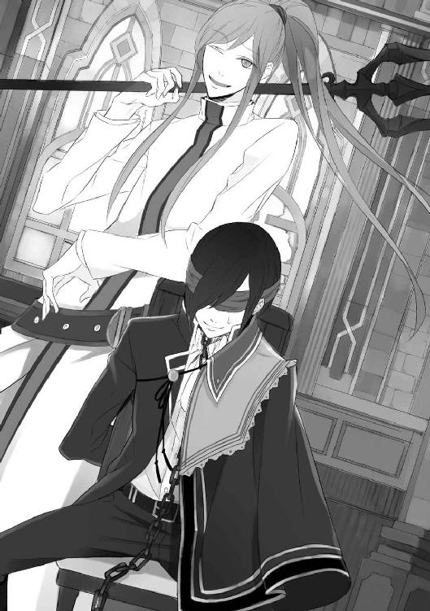
（これが、ルクス様の策――）
メルキオーレの真の雇い主は、ルクスだった。ルクスはメルキオーレに信頼を置いているのか、動じずに椅子の上でじっとしている。
為すべきことが見つからないマリアが少し離れたところでルクスを見つめていると、ふいにルクスが顔を上げ、こちらを向いた。
目隠しをして、見えていないはずなのに。
迷いなく、マリアを見た。そして、唇が動く。
――信じろ。
ルクスは間違いなく、そう言った。
突き放されて以来、凍っていた想いが溶けてあふれてしまいそうになる。けれど、ただ信じて待っているだけでは意味がない。マリアはロザリオを握りしめ、祈り始めた。
（――主よ、聖ルクレツィアよ）
ルクスの力になりたい――。
その純粋な祈りは、大聖堂の聖なる気に触れ、光となってマリアの上に降り注いだ。
「ぐ......ぅ......っ」
リカルドの呻き声が響く。
ルクスも苦しいはずだ。そう思って見ると、やはり歯を食いしばり耐えていた。
（耐えて、ルクス様――）
「おまえもか、エクソシスト！」
リカルドがマリアに向けて手を翳すが、その前にメルキオーレが彼に詰め寄った。
「祓います」
ロザリオを首からはずし、鎖を指に絡め、その場で十字を切る。そうすると、眩い光が生まれた。
「ぐあああああっ」
「悪魔よ！ この世に蔓延るけだものよ！ ここに貴様の居場所はない！」
「あああああっ」
リカルドの身体がめきめきと音を立て、もがきながら身体を折り、がくがくと震えた。
その凄まじい形相に、皇太后エヴァがまず気を失った。それに乗じて、皇族たちは次々と大聖堂から逃げ出していく。聖職者ですら、耐えきれず逃げ出す者がいた。
「......まずいな。たまに浄化はしてたけど、この人予想以上に根性ないね」
メルキオーレのつぶやきに、ルクスが反応した。
「どうした？ 何があった？」
「......くっ、しぶとい悪魔め......！」
答える余裕のないメルキオーレに代わり、マリアが告げた。
「陛下の魂は、すでに半分以上悪魔に取り込まれてしまってます。こうなると、剥がすのは至難の業です」
ルクスが息を呑んだのがわかった。
悪魔使いの末路を、彼も知らなかったのだろう。
「祓えないのか？」
「祓えます、師匠なら」
けれど、こうなってしまっては、リカルドの無事は保証できなかった。
「滅されたくなければ、おとなしく魔界へ還れ！」
メルキオーレから発せられる光は衰えることなく、リカルドに浴びせかかる。
「グァァァァッ」
みしみしと骨の軋む音がして、リカルドの衣装が背から破れた。彼の背肉を割り飛び出したのは、一対の翼。黒々としたそれは蝙蝠に似ていて、苦しみもがくリカルドの動きに合わせて震えていた。皆が息を呑んで見守る中で、リカルドの肌は、青黒く変色していく。
「悪魔との融合が、進んでる......っ」
それは侵食の進んだ悪魔使いの末期的症状で、マリアはロザリオを強く握りしめた。
「しまった。助けられるかな......」
情けない声を発するメルキオーレに余裕はなく、それはマリアが初めて見る師匠の焦りの表情だった。
「――――ッ！」
人のものではない言葉を叫び、リカルドだったそれは刻印を自らの爪でさらに深く描き、左手を掲げた。
「いけない！」
マリアが叫んだが、遅かった。
放たれた蝙蝠の大群はメルキオーレの三叉槍が薙ぎ払ったが、次いで放たれた闇色の形のない瘴気としか呼べないそれは、どうしようもなかった。マリアの祈りだけでは、防げない......！
そう思った時、目の前で黒い炎が舞い上がり、ルクスが立ち上がった。
どうして、と思う間もなく、両手と首の拘束を解いたルクスがいつの間にかあらわになっていた左のてのひらを、刻印を掲げた。
「放て！ 遥かなる闇よ！」
生まれた赤と黒が混じる炎が、猛然と大聖堂を駆け抜け、瘴気を呑み込んでいく。悲鳴の起こる大聖堂は、一瞬のうちに禍々しい魔の気配で満たされた。
マリアは唐突に思い当たった。
メルキオーレだ。彼がルクスの背後に回った際に、ルクスの左手の封印を解いたのだ。
二人は、そこまで計算ずくだった――。
「もう無理だ！」
「主よ、我をお守りください......っ」
口々に叫びながら、聖職者たちはひとり残らず逃げ出してしまう。
「あ――」
祈りを捧げるのは、マリアだけになってしまった。
「大丈夫だ。俺は自分を見失わない」
「......ルクス様」
ルクスは煩わしそうに目を覆う布を剥がすと、あらためてマリアに向き直った。
「おまえはそこで祈ってろ」
「私......ここにいても、いいですか？」
帰れと告げられた冷たい声音がまだどこかにこびりついていて、マリアは気がついたらそう口にしていた。
そんなマリアに、ルクスは不遜な笑顔を向けた。
「いろよ。俺のそばに」
なんて勝手な人なんだろう。
そんなふうに思いながらも、マリアの胸は温かいもので満たされていくのを感じた。
もう迷いはない。
私は、ルクス様のそばにいよう。
「おのれ、ルクスゥゥゥ！ 私の邪魔をするな!!」
立ち上がったルクスを見て自我を取り戻したのか、リカルドがルクスに突進してきた。肩をつかんで柱に押しつけ、うなり声を上げる。
「っ、メルキオーレ！ さぼるな！」
ルクスの一喝に、メルキオーレはふらつきながら応える。
「まったく、人使いの荒い......！」
そう言って三叉槍を構え、背後からリカルドの腕を貫いた。
「アアアアッ」
「今だ、皇子！」
「了解」
ルクスはリカルドの腕が離れると同時に、逆に彼の首をつかみ、そのまま魔力を放った。
「ギャアアアアアアアッ」
絶叫とともに、リカルドの身体が黒い炎に包まれる。
強すぎる気にあてられ、マリアは足に力を入れられなくなり座り込んでしまった。
「――――ッ！」
またも聞き取れない言語を発し、リカルドが最後の力を放った。無数の小さな蝙蝠の集団が、マリアをめがけて一斉に羽ばたく。
「マリア！」
へたり込んだマリアに駆け寄り、覆い被さったのはルクスだった。
マリアを守るルクスの手は、剥き出しの首や顔を強く抱いている。マリアはルクスに火傷を負わせてはならないと身じろぐが、それは許されなかった。
「ルクスさ――」
「喋るな！」
さらに強く抱きしめられ、それと同時にルクスが短くうめくのが聞こえてマリアは泣きたくなった。ルクスがマリアを守りながら魔力を放っているのが熱風でわかる。やがて攻撃が止んだのか、ルクスが離れた。
「早くしろ！ メルキオーレ！」
「わかってますって」
応じたメルキオーレはロザリオをリカルドに向け、言い放つ。
「神がおまえを滅する前に、魔界へ還るがいい！」
「う......っ、うぅぅぅぅっ」
メルキオーレはうずくまったリカルドのごく近くに片膝をつき、ロザリオを持つ逆の手を床に置いた。その瞬間、周囲にぱっと眩い魔法陣が広がり、直後に地面が揺れた。地響きのような音を立てて中心に現れたのは、漆黒の球体。
魔界へと続く穴だ。
それが不気味な音を立てて大きく広がると、そこには暗黒の世界が広がっていた。
怨嗟を思わせる不気味な声が、いくつも重なってその穴から漏れ聞こえてくる。
ルクスの肩がびくりと震えたのがわかった。幼い頃、リカルドが召喚した魔界への扉から、向こうの世界へと堕とされた時のことを思い出したのかもしれない。
マリアが見ていると、リカルドの背のあたりから黒い靄が抜け出てきた。それは次第に獣のような形を成そうとしたが、しかし結局は靄のままで最後の言葉を吐いた。
「卑しい人間どもめ......っ」
そして、吸い込まれるようにして穴の向こうへと還っていった。
悪魔を呑み込んだ穴は縮小しやがて消え、魔法陣とともに姿を消す。
悪魔の剥がれたリカルドは、気を失ったのかその場に倒れ込んだ。メルキオーレに刺し貫かれた腕には痕が残ってはいるものの、血も流れず深い傷にはなっていないようだった。
「......終わったよー」
ぐでん、と横になったメルキオーレは、子どもみたいにごろごろと大聖堂に転がった。
「師匠、まだ終わってません。ルクス様の悪魔が――」
そこまで言ったところで、マリアに背後から覆い被さる者がいた。
「そうだよ、まだ終わってない」
くすくすと耳元で笑われ、マリアは反射的に手で押しのけて逃れた。
「悪魔......！」
「やあ、祓魔師のお姉さん」
ルクスの姿を借りた悪魔が、ぐんと距離を近づけてくる。座り込んでいたマリアはうまく逃れられず、また組み敷かれそうになってしまう。
急いでメルキオーレの方に首をめぐらせると、寝転がった彼は、息も切れ切れの状態のようだった。
自分がしっかりするしかないと言い聞かせ、マリアは悪魔を一瞥した。
「あなたも、魔界に還りなさい！」
「いいの？ 僕と取引したいんじゃなかったっけ？」
悪魔は、何もかもお見通しだ。にやにやと笑いながら、マリアの腹に指を這わせる。マリアは怯まなかった。
「今はだめよ。ルクス様がいなければ、意味がないの」
「うーん？ でも、身の程知らずな皇子は魔力を使いすぎちゃったみたいだよ。しばらくは目を覚まさないんじゃないかなぁ？」
「そうでしょうね。でも、私が起こすわ」
そう言って、マリアはロザリオを両手で握りしめた。
大聖堂でなら、祈りの力も倍増する。そう信じて、マリアは意識を集中させた。
「――主よ、聖ルクレツィアよ、我に愛を」
「無駄だと思うけどなぁ」
からかうような悪魔の声を無視し、マリアはじっと見つめてルクスを捜した。悪魔の赤い瞳の向こうで眠る、神秘的な紫色の瞳を。
「ルクス様。私はあなたに、人の心を学びました」
平等に愛されて満たされる者などいないと、あなたは言った。
愛する人の愛情を得られなければ、人は満足できないと。
その感情は、今はすんなり受け入れることができる。
――けれど、それでもマリアは、ルクスの心を求めない道を選んだ。
「確かに、満足はできないかもしれません。それでも私は、ルクス様を愛したいと思います。......心から」
本心を口に出すと、熱い涙があふれた。
ルクスに出会わなければ、マリアはこの喜びを知ることはなかっただろう。
（――主よ、我に光を）
強く求め、祈りを捧げた手で、袖の中に隠したその指先を、ルクスの唇に触れた。
魔力の使いすぎで疲弊したその肉体を、その精神を癒せるのは、マリアだけだ。
触れていた唇が、小さく開く。
「......おまえを満足させられないと、誰が言った？」
「え......？」
マリアが見つめる先で、赤かった瞳が揺らぎ、紫色へと変化する。
「ん？」
「きっ」
「なんだ？」
「き、聞こえてらっしゃったのですか......」
「俺に話しかけてたんじゃないのか？」
そうです。確かにそうなのですが。
マリアは急激に頬が熱くなるのを感じた。ささっとルクスから離れて距離を置き、心を落ち着けてから、さも何事もなかったかのように言ってみた。
「......悪魔を顕現させてもよろしいでしょうか？」
「何をするんだ？」
怪訝そうに眉をひそめられ、マリアは騒ぐ胸をおさえてぽそりと言った。
「取引です」
「おまえ......まだあきらめてなかったのか」
呆れ顔のルクスから視線を剥がし、ごろごろしているメルキオーレを見やる。
「師匠、お願いがあります」
「なんだい？ 殿下の悪魔祓いなら君に頼んだよ」
「......はい？」
思わず聞き返すと、メルキオーレは億劫そうによいしょと半身を起こした。
「あんな醜態を晒しちゃ、リカルドの即位はもうありえないでしょう。すぐにはルクス皇子殿下の処刑どうこうって話にはならないよ。だからもう祓っても大丈夫」
やはりメルキオーレはすべて知っていたのだ。納得しつつ、マリアは「そうじゃなくて」と思い直す。
「師匠！ 私はまだ、強力な悪魔は祓うことができません！」
そう告げると、メルキオーレはきょとんと首を傾げた。
「できるよ。やってみなよ」
「......ずいぶん簡単におっしゃるんですね......」
「師匠である僕の言うことが信じられないの？」
お金次第でふらふらしている師匠の言葉など、信用ならない。
でも、と、マリアは首を振った。
「そうじゃないんです。お願いというのは、そのルクス様の悪魔祓いです」
「まだ言うの？」
「私はこれから、悪魔と取引をします。その代価が、私の祓魔能力なんです」
つまり、取引を行ってしまえば、マリアに悪魔祓いをすることは不可能なのだ。
メルキオーレの目が据わった。
「禁じられてるって言ったよね？」
「ですから、それを最後に祓魔師を辞めます。見逃してください」
訴えると、メルキオーレは「うーん」とうなった。
「惜しいね」
「そうでしょうか」
ルクスの命と比べれば、少しも惜しくない。
弟子の大きな薄藍の瞳を見つめていたメルキオーレは、やがてにやっと笑った。
「わかった。とりあえずやってみなよ。悪魔祓いのことは、そのあとで考えればいい」
「ありがとうございます」
「禁忌ったって、僕も何度かやってるしね」
「え？」
聞き捨てならなかったが、今それを追及するのはやめにした。
「――というわけで、師匠の承諾を得ました。ルクス様、いいですね？」
くるりと向き直ると、ルクスは苦笑いを浮かべていた。
「わかった。そこまで言うなら俺も腹をくくろう。責任はとってやる」
「なんの責任ですか」
「おまえが職を失ったあとの、責任」
具体的にどういうことかわからず首を傾げたまま、マリアはルクスとともに大聖堂をあとにした。神聖な気に満ちた大聖堂では、悪魔は姿を見せないだろう。
気を取り直してロザリオを手にし、悪魔を顕現させた。
ルクスの中から現れた黒い靄が、少年の形を成してマリアの前に現れる。
「私の祓魔能力をあげるわ。だから教えて。前皇帝暗殺の真相を」
そう告げると、悪魔がふふっと笑った。ルクスとマリアの間に、緊張が走る。悪魔から真相を聞き出せるかどうか――それによりルクスの冤罪を晴らせるかどうか――大切な一瞬だ。
悪魔は薄ら寒い笑顔でマリアを見ると、ゆっくりと首を傾けた。
「ねぇ、お姉さん。取引をしたら僕は用なしになるの？ 祓われるの？」
「......どうかしら。私は祓魔能力を失うのだし、師匠もあんなだし、あなたは私の能力を食べて力を増すのだろうし......正直、わからないわ」
本心だった。
メルキオーレがなんとかしてくれるとは思うが、悪魔がどれほど力を得るのか想像がつかない。ルクスを今以上に苦しめることになるかもしれない。
それでも、真相を得る術を持つのはマリアだけなのだ。
「教えて」
悪魔ににじり寄り、マリアは息を詰めた。
悪魔はマリアを見据え、やがて口を開いた。
「いいよ、教えてあげる。あの時――僕と皇子が契約をした直後、そこへ現れたのが、時の皇帝だよ」
「父上が......？ 母上の部屋に？」
ルクスは困惑の色を浮かべた。
「その姿を見た皇妃セレナは、夫を刺し殺そうとした。でもそれは難なく避けられ失敗に終わった。悲しみの箍がはずれた彼女は、刃を自分の喉元へと向ける――それを止めたのが、リカルドだよ」
「リカルドが？ どうして......？」
ルクスがつぶやいた。
悪魔はまだわからないの？ というように笑みを刻む。
「セレナに悪魔と契約できると思い込ませ、彼女を悪魔憑きにして前皇帝を殺させようと仕向けたのは、リカルドだよ。どこかで見ていたんだろうね......失敗したと気づき、飛び出した。セレナに死なれちゃ困るんだ。なぜなら彼のシナリオでは、前皇帝はセレナに殺されなければならなかったから」
その続きを、ルクスが引き取った。
「それに失敗したから、リカルドは自らの手で父上を殺害した。その上で母上に罪を着せるつもりだったが、それよりも適任者がいた――」
それが、気を失っていたルクスだった。
剣の腕に覚えのあるルクスの方が、信憑性がある。リカルドはそう思ったことだろう。
ルクスが悪魔と契約した直後に教皇が倒れたことがきっかけで、弟が兄の即位を阻もうとしているという妄執に駆られたリカルドは、すぐさまルクスを監禁し、悪魔を祓ってから処刑する筋書きを考えた。
リカルドの〈願い〉は不明だが、彼の野望は皇帝の座に即くことに留まらなかっただろうことは、想像に難くない。
「そうか......」
深く息をついたルクスは、心の底から安堵した顔になっていた。
「ルクス様？」
マリアが声をかけると、聞こえているのかいないのか、ルクスは宙を見てつぶやいた。
「俺じゃなかったんだな......」
ルクスは今この瞬間まで、もしかしたら自分が父親を殺害したのかもしれないという可能性を否定できずにいたのだ。疑念から解放されたルクスは、少しだけ優しい顔をしていた。
マリアも信じていたとはいえほっとして、ひっそりと微笑みかける。
しかし、それだけの証言ではまだ足りないのだ。
ルクスは再び顔を険しくした。
「それで、証拠はあるのか？」
証明できなければ、皇太后エヴァをはじめ、宮廷内に潜んだ疑いを晴らすことはできないのだ。
悪魔は仕方ないなぁというふうに笑うと、宮殿のとある箇所を指差した。
「セレナの私室。そこに、リカルド直筆の指示書があるよ」
「母上の......そうか。あそこはリカルドでも簡単には入れない」
どうにかして指示書を渡したまではよかったが、皇帝となってしまっては身軽に動けないし、セレナへの接触はあまりにも不自然だ。取りに行くこともできず、そのままになっているのだろう。セレナに近づこうとする人物はほとんどいないことから、リカルドも焦って奪い返しに行こうとしなかったのかもしれない。
「僕が話せるのは、これで全部だよ」
「うん。ありがとう」
マリアは素直に礼を述べた。
心底安堵したようなルクスの顔を見れば、悪魔への感謝の気持ちは当然のものだった。
「じゃあ、お姉さん。......いいよね？」
悪魔に可愛らしく小首を傾げられ、マリアはうなずいた。
「どうしたらいい？」
「そうだなぁ......唇からもらおうかな？」
悪魔がひょこっと身を乗り出すのを、ルクスが遮った。
「その必要ないだろ」
「はは、わかった？ ......んー、今の皇子の嫉妬はあんまり美味しそうじゃないね」
悪魔にも好みがあるのか、そんなことを言って不満そうな顔をした。そして、マリアを見上げる。
「両手出して」
「こう？」
てのひらを仰向けて差し出すと、悪魔は両手でそれぞれの手をつかんだ。冷たい、と思った瞬間から、次第に手の感覚を失っていく。
「いただきます」
悪魔の声が愉しげに響き、マリアはずるずると意識を引きずられるような、不気味な感覚に襲われた。初めての感覚に、一気に胸が悪くなる。
しかしその時間は長くは続かず、悪魔の手がぱっと離れた。
「ごちそうさま」
え、と戸惑ったのはマリアだ。
「嘘よ。まだ全部差し出してないわ」
身の内からは、聖なる気を感じることができる。以前よりは、だいぶ薄くはなったけれど。
「全部もらうなんて言った憶えはないけど」
けろっと悪魔が言い、マリアは一瞬、ほうけた。
「............今、なんて？」
「だから、全部とは言わなかったでしょ？ 与えた情報に見合う代価は、せいぜい半分ってところかな。あ、でも安心して？ 残りは少しずついただきにいくから」
さらりとそんなことを言い、悪魔はぺろりと舌を出す。
「でも私、もともとそんなに能力ないのに――」
「あるよ」
そう言ったのは、メルキオーレだった。三叉槍を担いだまま、太陽の下でうーんとのびをしている。
「師匠......」
「マリアがルクス皇子に触れられなかったのは、実は悪魔の抵抗じゃなくて、あふれたマリアの祓魔能力が悪魔を攻撃しようとしてたからなんだよ」
「な......なんでそんな嘘を？」
初めに、あれは悪魔の抵抗だとマリアに吹き込んだのは、メルキオーレだ。
「なんでって、力があるって教えちゃったら、マリアがルクス皇子の悪魔を祓っちゃったかもしれないじゃない？ それじゃーお金が入ってこなくてつまんないよね」
「俺から全財産ふんだくっといて、よく言う......」
ルクスがぼそりと言った。
「殿下に雇われたのは、あのあとですからね。僕は悪くありません」
飄々と言ってのけるメルキオーレを、マリアは叱りつけた。
「そういう問題じゃないです！ 祓魔師がそんなに強欲でどうするんですか！」
それでよく悪魔につけ込まれないものだと、マリアは今回本気で感心した。マリアなど、生まれて初めての嫉妬で殺されそうになったというのに。
それより、と、マリアは自分のてのひらを見つめる。
「......私にそんなに能力があるなんて話、今まで一度も聞いたことありません」
今まで十年以上も弟子をやっていたというのに。
「君は人として成長途中だった。話すには早かった」
メルキオーレの言葉に、マリアは妙に納得させられた。
人を救う祓魔師に必要なのは、悪魔を祓う能力だけではない。人としての精神の成熟も、また不可欠だったのだ。
「私の能力は、いつから......？」
「僕に助けられた時から」
メルキオーレは、その素質を見抜いたからこそ、マリアを弟子に迎えたのだ。
「そうか......」
ふいにルクスが妙に感慨深げにつぶやいた。
「ルクス様？」
ルクスを見上げると、視線がかち合った。そして次の瞬間、彼はふわりと笑った。――とても、嬉しそうに。
「そうか、祓魔能力が残ったか！」
「そうみたいです」
つられて微笑み返すと、ルクスはおもむろにマリアを抱き寄せた。
「ひゃっ......ルクス様!?」
「よかったな、マリア。本当に、よかった......」
ぎゅっと力を込められ、マリアはあふれる切なさを感じ、目を閉じた。
「ありがとうございます、ルクス様」
ルクスは、マリアが祓魔師でいられることを、こんなにも喜んでくれる。
それだけで、じゅうぶんだ。
それ以上は、望まない。
清々しい思いとはうらはらに、ルクスのぬくもりに離れてほしくなくて、マリアはルクスの胸に顔を押しつけた。
「ルクス様？」
「どうした？」
優しい声が、鼓動と一緒に伝わる。
「師匠と結託して企んでらっしゃったこと、お話ししてくだされば、私はどんなことでもお手伝いしましたのに」
話してほしかった。マリアがそう伝えると、ルクスが首を振るのがわかった。
「話してしまえば、おまえを守りきれなくなる。だから、突き放すしかなかった......」
つらそうに、語尾が震える。そしてそのままの体勢で、逃げろと言っても逃げないだろ、と囁かれ、マリアはくっついたまま少し笑った。
このまま、あと少し。
最後くらい、許してください。
祓魔師も、誰かを本気で愛せる人間なのだから。
「――悪魔よ、還るべき時が来ました」
大聖堂の手前に広がる、石畳の広場に、マリアの透き通る声が響いた。今は立ち入り禁止となり門が閉められているため、聖職者も観衆もいない。
マリアは片膝をつき、てのひらを地面につけた。ぱっと花が咲くように眩い魔法陣が広がり、魔界へと続く穴が現れる。
メルキオーレの見よう見まねだったにもかかわらず、うまくいったようだ。マリアは密かに安堵の息をつく。どうやら能力を半分失ったことで、そこに意識を集中させやすくなり、むしろ今までより器用に力を扱えるようになったらしい。
「セヴェリオ・ルクス・ジュスティーニと契約されし悪魔よ、かの身体を解放せよ！」
握りしめたロザリオにすべての力を注ぐと、眩い光がマリアからあふれた。するとルクスから濃い闇が現れ、少年の姿になった。
「ずいぶん素直に出てきたな」
感心するルクスに、悪魔はいじけたような顔でむっつりと言った。
「今の皇子からは負の感情が薄れたから、まずそうなんだもん」
べっと舌を出し、つまらなさそうにくるりと背を向けた。
「......それにどうせ、もう願いを叶える気はないんでしょ？」
ルクスはわずかに目を伏せ、「そうだな」と言った。
「俺の〈願い〉は、俺を魔界に堕とした者に仕返しをする、というものだった。でも今はもう、リカルドを魔界に堕としたいとも思わないし、何かをする気も起こらない」
リカルドは失脚し、皇帝の座を失うのは目に見えている。それ以上を望む気にならないのも、マリアには理解できた。
許せるかどうかは別として。リカルドと同じ罪を犯すことに意味はないのだと、ルクスは気づけたのだ。
だから、と、悪魔は振り返って続けた。
「祓魔師のお姉さんの覚悟にも免じて、今回は退いてあげる。でもまた会うことがあれば、次は食べちゃうからね」
ふふっと笑って、悪魔は闇の世界へと足を踏み出し――たところを、ルクスにつかまった。
「待て。そういえばおまえ、マリアに何をしたんだ？」
悪魔に詰め寄るルクスを、マリアは慌てて止めた。
「い、いいじゃないですか！ 済んだことです」
「よくない。俺だってマリアをあんなに泣かせることはしないぞ。いいから言え」
マントをつかんでぎゅうぎゅうと首を絞められ、悪魔は嫌そうに口を開いた。
「僕はただ、お姉さんの負の感情を少し食べただけだよ。あんまり美味しそうだったから」
「負の感情？ マリアが？」
ずっと、祓魔師としてそれを否定してきたマリアだ。ルクスが驚くのも無理はない。
「ふふ。――過去への嫉妬。皇子を過去も未来も独占したいお姉さんとしては、過去の恋人の話は聞きたくなかったみたいだね」
そう言うや否や、悪魔は逃げるように魔界へと姿を消した。
穴が縮小して消えると、マリアはおそるおそるルクスを見た。眉間に深いしわが寄っている。
「過去の恋人？ なんの話だ？」
「......ですから、ソフィア様のことです。ルクス様がお選びになったという、婚約者の」
その話をすればルクスの機嫌を悪化させることはわかっていたが、話さないと先ほどの悪魔のように首を絞められかねなかった。
「過去なんて、どうでもいいだろう？ 今の俺はここにいて、ソフィアはいない。いない者に嫉妬する必要性はない」
きっぱりと言われてしまい、マリアは居たたまれなくなりいじいじと祓魔服の裾をいじった。
「ですから、その..................ルクス様がお生まれになってから今まで、その愛情を他の方に向けられたことがあるかと思うと、なんだか悔しいのです。過去に戻ってその愛情を奪い、我がものにしたくなるというか......」
言っている途中でルクスの呆れ顔に気づき、マリアは赤くどころか青くなった。
「とんだ祓魔師だな」
「もももも申し訳ございません！」
思っても、口に出すべきことではなかった！ 愛情を奪うなど、あまりにも罪深すぎる。
しかし慌てるマリアを見て、ルクスが吹き出した。
「変わったな、おまえ」
「......そうみたいです」
「いいよ、じゃあ教えてやる」
ルクスはそう言って、マリアを手招いた。魔法陣を描いた広場から、大聖堂に足を踏み入れる。
リカルドが暴れたことで、一部の床や壁は剥がれ、椅子なども半壊しているものが多かったが、幸いにも聖壇や聖人像などは無事だった。
そのリカルドは今、気を失ったままルクスのいた塔に監禁されているらしい。あの塔は、もともと牢獄として使われていたような部屋なのだ。ルクスが塔へ戻ることは、今後二度とない。
マリアは陽射しのこぼれるステンドグラスを仰いだ。
大聖堂は見た目こそ痛々しい爪痕を残してはいるけれど、その神聖な気は少しも薄れていなかった。
「婚約者は、確かに数人の候補の中から俺が選んだ。でもそれは、ソフィアとは幼なじみでもとから知り合いだったから、自己紹介の手間が省けるという理由からだ」
「そう......なのですか」
「皇族にとって、結婚は政治だ。そこに恋愛感情はない」
そうなのだろう。皇子であるルクスはいつか、しかるべき女性と結婚するのだ。
その時、ルクスの愛情はどこにあるのだろう。
「向こうの家が破産したから、婚約は破棄した。そういうものだ」
ルクスはふっと笑う。
「聞いてみれば、たいした話じゃなかっただろう？」
「......やはりあれは、悪魔が私を惑わすための嘘だったのですね」
まんまと騙されたことが、情けない。
こんなことがないよう負の感情を抱かないよう気をつけてきたが、恋を知った今では少し難しそうだ。
「ちなみに、おまえに与えたドレスは確かにソフィアのために仕立てたものだが、ソフィアも、他の誰も袖を通していない。もったいないからとっておいただけで、深い意味はない」
「もったいない......」
ビアンカとはだいぶ違う価値観の持ち主のようだ。
「そしてその、毎日つけてくれている髪飾り」
ふいに頭を撫でるように髪飾りに触れられ、マリアの胸が鳴った。
「これは、俺がおまえの瞳の色に似ていると思って、見つけてきたものなんだ」
「あ......」
目を見開いたマリアの反応に、ルクスが困ったように笑った。
「やっぱり、気づいてなかった？」
「......だったらいいなと、ひそかに思ってました。ありがとうございます」
マリアは微笑んだ。
「礼を言うのは俺の方だ、マリア。祓魔能力をすべて失う覚悟で真相を導き出してくれて、ありがとう」
「私はルクス様の力になりたかっただけです」
正直な気持ちを口にすると、マリアの胸はじんわりと温かみを帯びた。
ルクスが教えてくれた、この優しい気持ち。
それはきっと、人として、祓魔師としての成長につながるものなのだ。
ルクスがさりげなく左手を見る。
そこにはもう悪魔使いの証である刻印はなく、傷痕が少し残っているだけだった。それも、しばらくすれば消えるだろう。
マリアはロザリオを握りしめ、あふれる想いを口にする。
「我に力を与えくださいましたことを、深く感謝いたします」
痛いほど握り合わせた両手に、大きなてのひらがかぶさる。
「――おまえ、これからどうするんだ？」
「あ」
初めてまともに触れられたことに意識を持っていかれ、しばしぼんやりしてしまった。
「聞いてるか？ おまえ、祓魔師を続けるのか？」
「え、あ、はい」
ぎこちなくうなずいてから、マリアは手を離してしまったルクスを見上げた。何を考えているのか見透かせない涼しい表情で、ルクスはマリアを横目で見ている。マリアは慌てて答えた。
「力は半分になってしまいましたが、私はこの力がある限り、困っている人たちを助けたいと思います。......ですが禁忌とされる悪魔との取引をしてしまったことで、もう帝都では祓魔師として活動はできないと言われました」
帝国認定のロザリオを取り上げられなかっただけでもありがたいと思うし、もとよりマリアには祓魔師を辞める覚悟すらできていた。後悔はない。
「じゃあ、帝国を出るのか」
「そうなります。師匠にも破門にされました」
マリアは笑ったが、正しくは、メルキオーレには「今回の件で借金は帳消し」と言われただけだ。それと、「もう僕に教えられることは何ひとつないよ」と。
いい加減な師匠だったけれど、それはそれで彼の信念だったのだ。彼に師事していなければ、マリアは禁忌を犯してまで真相を導き出そうとはしなかったかもしれない。
「それなら、何も問題はないな」
ルクスはそう言って、意味ありげに笑った。
「問題、ですか？」
首を傾げたマリアに、ルクスは一歩、近づく。そして、その頬に触れた。なめらかな頬に指先が這う感覚に、体温が上がる。
「ルクス様？」
「俺は皇族の地位を捨てることにした。宮殿を出る」
「え......？」
簡単に、ルクスは言った。
「これから起こるだろう皇位継承問題に関わりたくはない。代わりに爵位と小さな領地をもらったから、そこで暮らすことにした」
「そこは......遠いのですか？」
会えるだろうか。そんなことを真っ先に考えた。
「遠い。帝都の、北の北だ。今の季節は、きっとここより寒いんだろうな」
「そう、ですか」
「寒いところは苦手か？」
「どちらかというと好きです」
「じゃあ、一緒に行こう」
これもまた簡単に言われてしまい、マリアはぽかんとした。
ルクスがふっと笑う。
「初めて見た。マリアのそんな抜けた顔」
「かっ、からかったのですか!?」
真っ赤になって抗議すると、ルクスはさらに笑った。笑って、マリアに向き直った。
「本気だよ、マリア。俺はおまえとともに生きたい」
そんなふうに熱く見つめられてしまうと、言葉が出なくなる。
「信じられない？ なら、神の前で誓おうか」
そう言って、ルクスはマリアの前に跪いた。
ステンドグラスから差し込む陽射しが、二人を照らす。
ルクスはマリアの手を取り、軽く口づけた。
「――私、セヴェリオ・ルクス・ジュスティーニは、生涯、マリアただひとりを愛することを誓います」
「............ルクス、さま」
言葉にならない想いがあふれ、涙となり頬を伝った。
力を奪われへたり込んだマリアを、ルクスが意地悪っぽく覗き込む。
「応えて」
深い紫色の瞳が、どこまでも愛しくて。
マリアは顔を上げ、微笑んだ。
「私も、あなたを生涯、愛します。――セヴェリオ様」
その名で呼ぶと、ルクスはわずかに目を瞠り......そして、瞳を潤ませた。
「ありがとう、マリア。......あの日の続きをしてもいい？」
優しく問われ、マリアはうなずいた。
あの日、二人が交わせたのは、曖昧な言葉と微かな吐息だけだった。
悪魔が剥がれたルクスと、祓魔能力の半減したマリアは、今までのもどかしさを埋めるように、指と指を絡めて強く握る。
至近距離で見つめられ、マリアが恥じらうように身じろぎをした次の瞬間。
ゆっくりとルクスの顔が近づき、二人は互いの唇を触れ合わせた。
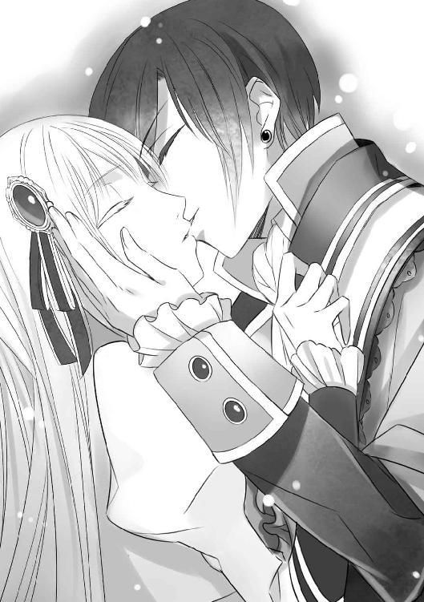
誓いの口づけは、ひたすらに優しく――。
やわらかい風が頬に触れ、マリアの長い髪をそよがせる。その髪をおさえるように、ルクスの手がマリアの頭を包み込んだ。
――愛するあなたに、永遠の祈りを。
二人を祝福する光は、いつまでもいつまでも、聖堂に降り注いだ。
はじめまして、宮瀬ユウと申します。
第一回 一迅社文庫大賞・アイリス部門にて奨励賞をいただき、この度デビューさせていただくはこびとなりました。よろしくお願いします！
まずは、拙作をお手に取っていただき、まことにありがとうございます。
今回の物語は、実は投稿させていただいたものとは別のお話になりまして、担当様と相談しながら一から生み出した物語になっております。
投稿作は古代和風ファンタジーでしたが、今回は西洋風ファンタジー。投稿作の主人公は皇子付きの髪結い師で、今回の主人公は皇子とちょっと対立する位置にいる祓魔師です。お話もまったく違うのですが、皇子の歪んだ性格や、ラブがメイン、というところは勝手に引き継がせていただきました。
そうなのです。宮瀬はラブを書くのが好きなのです。
ラブコメもいちゃラブもしっとりラブも悲恋すらも好きなのですが、今回は私なりに「愛とは何か」を真剣に考えながら書かせていただきました。なので、宮瀬的ラブジャンルとしては「しっとりラブ」を目指しております。
とはいえ恋愛経験が豊富ではない人間が書いたため、結果、ほぼ妄想で埋め尽くされ、あげく担当様に「重いですね」などと言われちゃったりもしましたが、たぶんこれが私の思う「愛」なんだと思います。そういうことにしておきます。
そんなデビュー作ですが、楽しんでいただけましたでしょうか？ 少しでもマリアの愛は伝わりましたでしょうか？ 小心者なので、あとがきを書いている今からびくびくしております......。
さて、ページをたくさんいただいたので、あとがきを先に読む読者様のために、拙作の売り込みなどさせていただこうかと思います（私はあとがきを先に読む人です）。
売りはなんといってもイラストです！ きっと、表紙の美麗さにときめいて手に取ってくださった方も多いことでしょう。引き受けてくださった蒼井モモ先生、本当にありがとうございました。マリアが超可愛いです。マリアの衣装デザインなど、ちらほら丸投げしてしまって申し訳ございませんでした......！
メインキャラは、ピンナップに載っている方々です。
主人公のマリアは、職業意識の高い祓魔師の女の子。
暫定第五皇子のルクスは、マリアにとっては理解できない存在である悪魔使い。ちょっとミステリアスな感じですが、人間くさいところもあるので私はとても好きなキャラです。
新皇帝リカルドは、ルクスの一番上のお兄さん。
メルキオーレは、マリアの師匠。守銭奴です。
可愛らしく怪しい外見の男の子は......ぜひ本編でお確かめください！
そんなキャラたちが人間の持つ感情をあらわにして、駆け引きしたり戦ったり人を好きになったりする物語です。
最後になりましたが、投稿作に賞をくださった懐深い編集部の皆さま、そして、時に盛り上げてくださり、時に冷静に諭してくださった担当様、本当にありがとうございました。これからも精進して参りますので、よろしくお願い致します。
応援してくれた家族や友人たちも、本当にありがとう！
そして読んでくださった皆さまにも、心より感謝を申し上げます。
どんなに小さなことでも、たったひとつでも心に残るものがあったなら、とても嬉しく思います。
今は自分の物語を世に送り出せることで幸せな気分でいっぱいですが、そのことに満足せず、これからもっともっと面白い作品を書き続けるべく頑張っていきたいと思います。
またお会いできる日がきますように......！
宮瀬 ユウ
断罪のキスと祓魔師の祈り
２０１１年８月１日 初版発行
著 者 宮瀬ユウ
発行者 杉野庸介
発行所 株式会社一迅社
〒１６０―００２２
東京都新宿区新宿２―５―10 成信ビル８Ｆ
制 作 大日本印刷株式会社
©宮瀬ユウ／一迅社
本書はフィクションです。実際の人物・団体・事件などには関係ありません。
本書の内容を無断で複製、複写、放送、データ配信等することは、堅くお断りいたします。